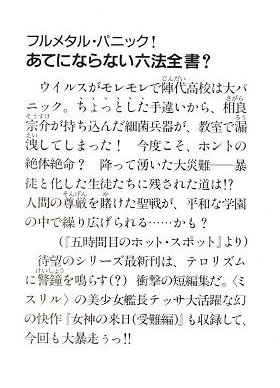

| [賀東招二] フルメタル・パニック！11 | |
| 賀東招二 | |
| (2015) | |
|
フルメタル・パニック！
あてにならない六法全書？
賀東招二
|

目次
ままならないブルー・バード
的はずれのエモーション
間違いだらけのセンテンス
時間切れのロマンス
五時間目のホット・スポット女神の来日（受難編）
ボーナストラック
『作者の極秘設定メモより』
あとがき
ままならないブルー・バード
相良宗介が目を通しているその誌面には、ずらずらと、一般人には完璧に意味不明の用語が踊り回っているのだった。
《米陸軍・海兵隊とGeotron Electronics社が共同で開発を進めているM9 Gernsbackの計画進捗状況について、パウエル国防長官が上院特別委員会で証言した。M9のEMDフェーズは、当初の予定通り12月に終了する見込み。今後、FY1999予算でまず低率初期生産分26機が調達され、最初の強襲機兵部隊が初期作戦能力を獲得する。また特殊作戦コマンドは、このFSD機のいずれかに、DARPAで試験中の次世代型電磁迷彩システムが搭載されることを強く希望している》
《人民日報の記事によれは、北京の人民解放委員会政府（北中国）は、ソ連右派勢力から最低でも33機のRk-96Mを受領した模様。Rk-96Mは、おもにRk-92 Savageの索敵能力と火器管制システムを向上させたものである。なおこの機種の調達には、ユーゴスラビア政府やシリア政府も関心を示している》
《ドイツ陸軍は、強襲機兵Drache G (Konig Drache)の最初の８機の運用を開始した。Drache Gは現用Drache Dの電子兵装および駆動系を換装したもので、耐弾機能を備えたEinhorn Elektrotecnik社のMMP-112系マッスル・パッケージを全面採用した、初の機体となる》
《英国の情報筋によれば、ソ連Zeya設計局で試験中の新型強襲機兵は、M9 Gernsbackと同様、イージス方式のパラジウム核融合電池を搭載、完全電気駆動を実現していると推測されている。おそらくは第三世代型の強襲機兵と目されるこの機体を、NATO軍はZy-98 Shadowと呼称している》
《米Raytheon Missile Systems社は、K1 Javelin運動エネルギーミサイル３００発を３８００万ドルで英陸軍から受注した。本来M6用に設計されたK1 Javelinのインターフェイス群は、新たに開発された英軍Cyclone用のものに換装される》
《今年６月にインド洋での船舶事故で失われたMistral 2強襲機兵計12機の補償問題で、仏GTTO (Giat TTO) 社とStingray海運は、Stingray側が約６１２０万ドルを支払うことで合意した》
《ノルウェー陸軍は現在配備中のM6 Bushnellの標準携帯火器として、スイスOerlikon Contraves社のGEC-B 40ミリ機関砲を採用すると表明した》
「ふむ......」
教室の隅で人知れず、あれこれと感嘆の声（普通の人にはどうでもいい感嘆の声）を漏らしていると、常盤恭子が教室に入ってきて、宗介に声をかけた。
「あ、いたいた。相良くーん」
「なんだ」
天気のいい日の、昼休みのことだ。むっつりと軍事ニュースの専門誌『ジェーンズ・ディフェンス・ウィークリー』のアーム・スレイブ関連記事を読んでいた彼は、いそいそとページを閉じた。
「あのね、ちょっと来て。頼みたいことがあって」
「了解した」
ちょっと申し訳なさそうに言う彼女に、宗介は唯々諾々とついていく。
教室を出て、二人は南校舎の用具室前へと向かった。廊下には何人かの女子生徒が、不安げな表情で突っ立っている。恭子の所属する女子ソフトボール部の部員たちだ。
「......なにか問題が？」
「うん。なんか......中から鍵がかかってるみたいで開かないの」
用具室の扉を指差して、恭子が不安げに言った。
「物音と声も聞こえてきて......気味が悪いの。それで、みんなが『相良くんに調べてもらおう』って」
「賢明な選択だ。今後もそうしろ」
宗介は扉の脇に立って、耳を澄ました。確かに、用具室の中に誰かがいるようだ。おそらく、男が三人。ひそひそと会話している。
（まだかよ。早くしろ）
（うん。......よし、いいよ）
（......はあー。たまらんぜ、これは）
どことなく恍惚とした、ため息混じりの声。
（いい感じだぁ。まったく、危険を冒しただけのことはある）
（俺たちだけで楽しむなんて、悪いよなあ。ほかの連中にもこっそり売りさばこうか）
（だめだよ。僕らがマズいよ）
宗介は眉をひそめた。密室で人目を避け、何をしているのか？まさか----
（麻薬か......？）
いや、間違いない。校内で麻薬にうつつを抜かすとは----
これは安全保障問題担当・生徒会長補佐官としては看過できない行為である。
宗介は超小型の散弾銃を引き抜いた。
「下がっていろ」
「へ？ あの、相良くん。なにを----」
だんっ！ だだんっ！
答えもせずに、彼はドアノブと蝶番を吹き飛ばした。間髪いれずに扉を蹴破り、室内にスタン・グレネードを放り込む。
「うわ----」
ばん!!
猛烈な閃光と爆音が、用具室の中で炸裂した。宗介はすぐさま室内へと踏み込んでいく。
「そこまでだ！ 無駄な抵抗はやめて、おとなしく......？」
室内には、三人の生徒たちがのびていた。
赤い照明とたちこめる煙。作りつけの卓上には、写真の引き伸ばし機と、ひっくり返った四角い現像皿、床に落ちたフィルムやポリタンクがあった。飛び散った現像液の強い匂いがつんと鼻をつく。
麻薬の類いは一切見当たらない。
「うー......」
倒れていた一人が、辛そうに身を起こした。同じクラスで、写真部に所属している風間信二だ。
「さ、相良くん？ 一体なにが......あっ！」
信二は血相を変えて、床に落ちたネガフィルムや印画紙に飛びついた。
「ああっ......なんてことをっ！ 全滅だ！」
「うう......。なんだって......？」
「げぇっ。本当だ......！」
ほかの二人も立ち上がり、悲嘆もあらわにフィルムを見る。
「風間。なにをしていた？」
『決まってるだろ、現像だよっ!!』
三人は異口同音に叫んだ。
「苦労して撮り集めたのに......」
「くっ。屋上の手すり付近で無防備にもくつろぐ女子を、一階中庭の超ローアングルから捉えた望遠ショットが......」
「ひどいよ相良くん。何の恨みがあって、こんな真似をするんだ！」
珍しく、信二は宗介に食ってかかった。
「こんな作業をしているとは思わなかった」
「だからって、スタン・グレネードを放り込むなんてあんまりだよ！」
「確実な制圧には必要だ。だが......それよりなぜ、こんな場所で現像を？常盤たちが迷惑していたぞ」
光の射し込む戸口から、鼻をつまんだ恭子たちが激しくうなずいて同意していた。
「え......」
信二たちは、しゅんとして肩を落としす。
「それは、すまないと思うけど......。僕ら写真部には、部室がないんだよ」
生徒会副会長たる千鳥かなめも放課後、写真部と似たような境遇のクラブが起こしたトラブルの処理に駆けずり回っていた。
軽音楽部が地学室を占領して、ヴァン・へイレンを演奏しまくる。『曲』というよりはすさまじい騒音が響き渡った。苦情を聞いたかなめは、すっ飛んでいってやめさせる。
「えー、でも」
「でもじゃないわよ！ せめてアンプを外しなさい！」
ぶつぶつ言いながら、生徒たちは楽器を片付け出す。ほっとして生徒会室に戻ると、また別の生徒が苦情を持ち込んだ。
「千鳥さーん......」
泣きそうな声でそう言ったのは、料理部の女子である。
「なに？」
「家庭科室に、生物部の人たちが。あたしたちがラザニア作ってる横で、ゴキブリの実験してるの。なんか言ってやって......」
さっそくかなめは家庭科室に走り、生物部の連中を怒鳴りつける。
「生物室があるでしょ!? 生物室が！」
「いやー、それが。空手同好会の人たちが占領してるもんだから」
のっぺりした顔の生物部部長は、へらへらと笑いながら言った。かなめは悪態をついてから、生物室に向かう。
「椿くん！」
扉を開けて叫ぶと、ちょうどその空手同好会の部長・椿一成が、テーブルを踏み台にして跳躍しているところだった。部員の一人、丸坊主のごっつい男に、いましも飛び蹴りをかまそうとしていたところで----
「ちど......？」
一成はかなめに気付き、空中で思いきりバランスを崩した。
がしゃあんっ！
壁際の棚に、肩から突っ込む。標本が次々と床にぶちまけられ、音を立てて割れた。
「ぐ、ぐおお......」
猛烈な保存液の悪臭がたちこめる中、一成はよろよろと立ち上がる。太い眉に、切れ長の目。小柄だが、端麗、精悍な顔立ちの若者だ。
「ち......千鳥じゃないか。どうした」
「ダメよ、こんなところで遊んでちゃっ！」
鼻をつまんで窓を開け、かなめは言った。一成はしどろもどろになりながら、
「あ......遊んでたわけじゃない。障害物の多い場所での格闘術を、こうして部員と研究してたところで----」
「やめなさい！ みんなが迷惑してるでしょっ？練習だったら、ほかの場所でも----」
『なにをぬかすか、女めっ！』
かなめを遮り、三人の部員が同時に怒鳴った。
「そもそも、おぬしが我らを道場から追い出したのだろうがっ!?」
「我らは被害者よ。いわば、あわれな迷える子羊」
「さよう。我らはかわいそうなのじゃ」
口々に言う大男たち。それを一成は、電光石火の早業で次々に殴り倒した。
『なにをする、椿くン？』
「やかましいっ！ 堂々と胸を張って、情けない科白をほざくなっ！」
一成が怒鳴ると、部員たちはそろって首をうなだれた。見ていたかなめはため息をついて、
「......とにかく。ここはダメだからね？ 気の毒だとは思うけど」
「む......わかった。すまない、千鳥」
「ありがと。わかってくれればいいよ。椿くんは聞き分けいいしね」
にっこり告げる。
「そ、そうか......？」
「うん。それじゃ、よろしく」
かなめは生物室を出ていった。後ろで一成が部員たちに『なにをニヤニヤしてるっ！』と叫んでいるのが聞こえたが、彼女は特に気に留めなかった。
「あー、もう。今日は次から次へと......」
生徒会室に戻ってから、かなめはぼやいた。読書にふけっている宗介を、ちらりと見る。
「ソースケ。キョーコから聞いたわよ？ 昼休みに、また暴れたらしいじゃないの」
「いや。慎重な措置をとったが、大事には至らなかっただけだ。暴れてなどいない」
「ああ、そう......」
疲れているせいか、かなめもそれ以上は追及しない。
「しかし、写真部も難儀だな。部室がないので、用具室を勝手に使用していたぞ」
「また部室不足の話？ ったく」
部室不足。この手の問題は、どこの学校も抱えているものだ。
陣代高校にも二階建ての部室棟があるのだが、それもいまでは満室状態で、一つの部屋を二つのクラブが使っていることなど珍しくもない。ひどいところでは、一つの部屋を四つのクラブが共用している場合まである。
「ただでさえ来月になったら、予算のぶんどり合戦が始まるっていうのに。頭が痛いわ、ホント......」
「新たに屋上に部室棟でも建てるのはどうだろうか。中古の米軍の仮設兵舎なら、捨て値同然で入手できるぞ。ただし窓がない上、通気が悪いので、夏はスチームサウナのような状態になるだろうが......」
「却下よ、却下」
そこで、部屋に生徒会長の林水敦信が入って来た。長身、白皙。知的な風貌の青年である。書記の少女----美樹原蓮が後ろに付き従っているので、どこかの大企業の社長さんみたいな貫禄がある。
「ご苦労だったな、千鳥くん」
林水が言った。部室不足の騒ぎを聞いていると見える。
「ええ。どこに行ってたんです？」
「少々、相談事があってね」
「あー、そうですか。こっちは部室不足の件で、右往左往してたっていうのに」
「その件の相談だよ。実は部室棟の部屋が、ひとつ空いた。部員が二名だけの社会研究部が、立ち退きを承諾してくれてね」
「ほう。それはなにより」
「ついては、空いた部屋に入るクラブを決めなければならない。ルームレスのクラブは、こぞって応募に参加するだろう。私は単なる抽選会を開けばいいと思っていたのだが----社会研究部が、立ち退きに際して妙が条件を出したのだ。入室するクラブの選定方法について」
「----と、言いますと？」
「社会研究部が決めた競争をして、勝ったクラブに部室を与えることになった」
「はあ。なんの競争です？」
「街でひっかけた異性の数を、競ってもらう。一番多い者が勝者だ」
しばらく、かなめは沈黙した。
「あのー。それって......」
「うむ。いわゆる『ナンパ』だな」
大真面目な林水の言葉に、かなめは開いた口がふさがらなかった。
次の日曜日。繁華街の吉祥寺からほど近い、井の頭公園の一角に、三〇名あまりの陣高生たちが集合していた。
残らず私服で、それなりにお酒落をしている。中にはこの競争に参加することを、露骨に嫌がっている者も多かったが、なにしろ勝てば部室がもらえるのだ。否も応もない。
ちなみに天気は快晴。空気も澄んでいる。
社会研究部の部長----難波志郎が、拡声器で一同に告げた。
「はい、みなさーん、おはようございます」
『うーい......』
弱小クラブの部員たちは、覇気のない声で応じる。
難波はいささか肥満気味の三年生だった。大きな両目がきょろきょろと動き、決して一つところに止まらない。
「きょうは絶好のナンパ日和ですね。ある統計では、晴れた日にはナンパやキャッチ・セールスの成功率が高くなると言われています。部室の獲得目指して、みなさんも頑張りましょう」
『うーい......』
またまた参加者が、気だるげな返事をする。
「ルールをもう一度確認します。ナンパの実行者は各クラブから三名。街の異性に声をかけて、引っかけた人数を競ってもらいます。きょうの夕方五時の時点で、この場所にいる異性をカウントします。連れてくるなり、呼び出すなり、あれこれ工夫してください」
「どんな事でもいいんスかー？」
軽音楽部の一人が質問した。
「はい。正直にこの大会の趣旨を説明して、協力を乞うのもアリです。逆に、ウソを並べ立てても構いません。とにかく、見ず知らずの異性を連れてくること。これがポイントです。友人や家族をサクラにするのは不可です。分かり次第、失格とします。これについては、密告を奨励いたします。さらに----」
難波はルールの諸注意を一通りした。
「では、そちらの受け付けで参加者を登録してから、街に繰り出してください。幸運を」
『うーい......』
ナンパ大会の参加者たちが、クリップ・ボードを持ったもう一人の社会研究部員へとわらわら集まっていった。
（あーあ。ホントに始めちゃった）
登録の様子を見守るかなめは、呆れかえっていた。彼女は生徒会から出向してきた、この大会のオブザーバー、という形でここにいる。特にすることもないが、見届け人としてきょう一日を過ごす予定だった。
参加者の中には、写真部の風間信二や空手同好会の椿一成もいた。特に一成はひどい不機嫌顔をしており、このイベントが心底気に食わない様子だった。
宗介も姿を見せていた。
特に呼んだわけでもなかったのだが、ふらりと会場に顔を見せたのだ。彼は弱小クラブの部室問題とは、なんの関係もないのに。
（ナンパに興味でもあるのかしら......？）
怪訝に思っていると、宗介はなぜか----登録を待つ参加者の列に並んだ。
「ソースケ？ どこ並んでるのよ」
かなめの指摘で、ほかの者も彼に注目する。
「参加者の列だが？」
「だってあんた、クラブなんか入ってないじゃない」
「それは違う。俺は昨日付けで、写真部に編入ざれた。すでに書類も受理されている」
「なんですって......？」
「本当だよ、千鳥さん」
彼の横にいた風間信二がうなずいた。
「相良くんに助っ人を頼んだんだ。ルックスいいし、度胸もあるし。こないだのフィルムの件もあって、快諾してくれたよ。ね？」
「うむ。肯定だ」
そこで列の前にいた一成が、悔しそうに自分の手のひらを拳で叩いた。
「助っ人。くそっ、その手があったか！」
それを見て、宗介が鼻を小さく鳴らし、不敵に告げた。
「気付くのが遅かったようだな、椿。俺が名乗りを挙げた以上、おまえたちに勝ち目はない。新しい部室は写真部のものだ」
「なにを！ 相良、きさまいったい、どこまでオレの邪魔をすれば......！......いや？」
一成はそこまで言って、宗介の戦闘服をじっと観察し、肩の力を抜いた。
くたびれた都市迷彩。色あせたブーツ。胸には手榴弾を付けている。
「............。ナンパの競争なのに、なんて格好をしてるんだ、おまえは......」
「？」
「まあ、せいぜい頑張りな」
哀れむように言ってから、宗介に背を向ける。周囲の参加者たちが、そのやり取りを見てゲラゲラと笑った。
「なぜ笑う？」
怪訝顔の宗介。軽音楽部の連中が、互いに目配せしながらうなずいた。
「だって......なあ？」
「あんた、その格好で女、引っかけるつもりかよ？ミリオタむき出しじゃん」
「機能優先だ。むしろ君たちの格好こそ愚かだと思うぞ」
「ほう？」
宗介の言葉に軽音楽部の面子が顔を見合わせ、挑むような目つきになった。
「はー、言ってくれるじゃないか。だったら、競争とは別に賭けねーか？あんたが一人でも女をモノに出来たら、俺たちが二週間、あんたの昼飯をおごってやるよ」
「ふむ」
「でも、たった一人さえ引っかけられなかったら......そうだな。あそこの池で、全裸になって泳ぐとか。どうだ？」
「構わんが」
宗介はしれっと言ってのけた。聞いていた一同が手を叩き、はやしたてる。
「いいぞー、軽音部！」
「これは盛り上がる！」
「聞いたからな！ 全裸水泳だぞー！」
盛大な笑い声の中で、宗介だけは平然と構えている。それまで黙っていたかなめは、困惑顔で彼に尋ねた。
「ちょ......ちょっとソースケ。変に余裕綽々だけど。大丈夫なの？」
「問題ない」
「ナンパの意味、わかってるわけ？」
「うむ。風間から聞いた。ガール・ハントのことだ。造作もない」
宗介は自信たっぷりに答えた。
「造作も......ないわけ？」
「そうだ。俺の力をもってすれば......そう、『女などイチコロ』だ」
「............」
なんとなく、かなめはその物言いが面白くなかった。
かくして競技は開始された。参加者が公園を出て、街に散っていく。
「社会研究の一環なわけですよ、これがね」
難波がかなめに説明した。
「ナンパ大会が、ですか......？」
「そう。どういう種類の人間が、異性から信用されやすいのか。正直者か、嘘つきか。美男子か、お調子者か。あるいはもっと、別の法則なのか。それらのサンプルを取ってみようと思いましてね」
「ははあ......」
「なにしろ部室のないクラブは、顔ぶれが多彩なわけです。彼らになにかを強制できる、せっかくの機会なわけですから----まあ、利用しないと」
「なるほど......」
妙に納得する。
かなめたちは吉祥寺駅の南口にある、有名なデパートの前までやってきた。
「お、やってる......」
デパートの入り口近くで、きっそくナンパをしている模型同好会を見かけた。生徒会の備品係----佐々木博巳の姿も見える。彼も生徒会とは別に、この大会に参加したのだった。
博巳たちが、見るからに頭の弱そうな二人組の娘を引きとめる。えらく控えめに、もごもごと。
「あ、あのー、お嬢さん......」
「はあ～～～？ なんだよ？」
ある意味、無理からぬことだったが----あからさまに小馬鹿にしたような口調だった。たちまち博巳たちは気後れして、一層、歯切れの悪いしゃべり方になる。
「あの、あの......い、一緒にお茶でも......その、どうです？」
「宗教？ ひょっとしてナンパ？ バカにしてんの？」
当然といえば当然の反応。博巳はそれでも健気に、精一杯の勇気（......と、おぼしきなにか）を振り絞って続けた。
「じゃ、じゃあカラオケとか......その......」
「なにこいつら？ カラオケ？ アニソン縛りとか？」
「うわっ、ありそー！ ヒャヒャヒャヒャ！」
二人組は歯茎を見せて大笑いする。
あまりにも痛々しい光景に、かなめが顔をしかめていると、難波はメモ帳とペンを取出し、『模型同好会。やはり苦戦......と』などとつぶやいた。
「あんだよ。イカくせー目で見てンじゃねーよ。キモいんだよ、おめーら」
「そ、その......すみません」
「三べん回ってワンって言えよ。そしたらメシくらい、おごられてやるよ。ほら」
「それは......その、ひどいと思います......」
「うわっ。チョーイタ！ 見てよ、こいつ、半泣きしてんの」
「な、泣いてなんかいませんよう......」
けなげにこらえ、『忍』の一字で話しかける彼らに、女たちが好き放題の悪罵をぶつける。そこで博巳が、いきなりブチ切れた。
「こ......こいつめぇっ！」
「ぎゃっ！」
相手の首につかみかかり、博巳は一気にまくしたてる。
「ふざけるな！ 誰が好きこのんで、おまえなんかと話したがるもんかっ！ポクは......ボクは。じっくりプラモを作れる部室が欲しいだけだ！未完成のキットたちが、毎晩ボクに『早く作って。僕を完成させて』と語りかけてくるんだよっ!?けなげなあいつらの悲しみが、おまえみたいな一分の一、パーフェクト・グレードブサイク肉人形にわかるのか!?カトキハジメだっておまえのリファインは不可能だ！できるってんなら言ってみろっ！その汚いメイクをセンチネル風のブルーで塗り潰して、『ＥＦＳＦ』とか『Vms-AWrs』とかマーキングしてやろうか!?えっ!?どうなんだ------っ!!」
ほとんど号泣に近い状態の彼を、仲間の部員たちが、落涙しながら止めに入った。
「やめろ、やめるんだ、佐々木！」
「おまえの気持ちはよくわかった！」
「放してください、先輩！ あいつらの腐った性根を修正してやるんです！モリモリで！ちくしょう、待て、許さないぞっ、この淫売め！」
気味悪がって逃げ出す二人組の背中に、博巳はなおも意味不明の罵声を投げつける。
（うわ......あれじゃあ、〇点ね）
ナンパしといて、相手を『淫売』と罵る奴にも困ったものである。
「ほぼ絶望的......と。さ、行きましょうか、千鳥くん」
涼しげに難波が告げて、かなめたちはその場を後にした。
駅の周辺をぐるりと巡る。
どのチームも似たり寄ったりで、慣れないナンパに悪戦苦闘していた。そもそも、クラブ活動に精を出すような生徒たちのほとんどは、女の尻を追い回すより、自分の趣味に熱中している方が幸せなタイプなのだ。
そんな参加者の中で、軽音楽部の面子は比較的に健闘しているようだった。かなめが様子を見た昼過ぎには、軽音部は二、三人の女の子グループと意気投合するに至っていた。もっともこういう連中も、実はナンパの類いはあまり慣れていない。ルックスやら話術やらの問題よりも、日頃つちかった舞台度胸のおかげだろう。
（ほほう......さすが。八〇点ってとこ？）
かなめが感心していると、脇で難波がメモを取りつつ、コメントした。
「軽音部の皆さんもまだ甘いですね。ナンパの極意は、『数撃ちゃ当たる』にあります」
「そうなんですか......？」
「はい。たとえどんな男でも、身なりをきれいにして一〇人に声をかければ、最低でも一人は話を聞いてくれるもんです。そして話を聞いてくれた一〇人のうち一人は、たいてい最後まで付き合ってくれるもんです。実際、私はこんな容姿ですが----」
そう言って、難波は自分の太鼓っ腹と二重あごを交互に叩いた。
「それでもナンパの的中率は、一パーセントを切りません。一日歩き回れば、必ず一人は本物の電話番号を教えてくれます。つまり、一〇〇人に声をかける覚悟があればいいのです。要は忍耐力ですよ」
「はあ......」
「ちなみに平日の昼間は、人妻系が狙い目です。旦那の目を盗んで遊びたい人が多いですから。若い子はダメですな。期待や要求が大きすぎますので」
「さ、さようで......」
っていうか、あんたいつもナンパしてるのか？......と尋ねたくなるのをガマンしつつ、かなめは曖昧な相づちを打った。
「さて、私はほかの様子を見に行きます。千鳥さんはどうします？」
「え......じゃあ、あたしもテキトーにぶらついてきます」
「けっこう。それではまた後ほど」
かなめは難波と別れ、駅前のアーケード街を一人で歩いていった。
しばらくふらついていると、雑踏の向こう側に、空手同好会の大男二人が見えた。デカいのですぐ分かる。
彼らは鋲付きの革ジャンと、トゲだらけの腕輪と、モヒカンのかつらを着けていた。ほとんど『北斗の拳』のザコ悪党状態である。
（こ、コスプレ......？）
その二人が、中学生くらいの女の子三人に、手のひらをニギニギさせて迫っていた。遠いので声は聞こえなかったが、なにやらロクでもないことを言っている様子だ。その証拠に、中学生のグループは露骨に怯え、身を寄せ合い、一歩、二歩と後じさっている。
（ったく、あれじゃ、人さらいじゃないの）
止めようとして近付いていくと----
「待ちな......！」
大男たちの背後に、一成がゆらりと現われた。二人は振りかえり、なぜか彼に対して身構えた。
「いやが......ってる......じゃ、ねえか。て、手を離して......やりな」
一成がすこし赤くなって、なんとなく棒読みっぽい口調で告げた。一方の大男たちはノリノリで、
「むう？ なんじゃ、おぬしはぁ？」
「ちびすけめ。ひねり潰してくれるわっ！」
口々に叫ぶと、鉄釘バットやらごっつい斧やらを取り出し、『ぬおー』と叫んで襲いかかる。
「ふ......」
その後は一成の独壇場だった。遊園地の戦隊ものアトラクションもかくや、といった調子で、見事な体さばきと跳躍力、鞭のような打撃技を披露する。大技、小技を取り混ぜた挙句、大男たちは『ぐはあ！』と（わざとらしく）吹き飛ばされ、『覚えていろ！』と（棒読みっぽく）叫び、すたこらと逃げていった。
「ははあ......そういう手か」
かなめは得心した。一成たちが選んだのは、古典的な『正義の味方作戦』といったところだろう。
一成はギャラリーの視線を感じて、ますます赤くなりつつも、少女たちに声をかける。
「け......怪我はねえか？」
「あ......はい。ありがとう......ございます」
うっとりしていた三人娘は、辛うじてそう答えた。
「そうか。じゃあ、その......感謝してくれるなら、頼みがあるんだが......」
「へ？」
「夕方の五時に、井の頭公園のステージ前まで来てくれねえか。みんなで」
「ど......どうしてです？」
「わ......訳はそのとき話す。とにかく来てくれ。大事なことなんだ。それじゃ」
「あ。あの......！」
いたたまれなくなったように、一成は人ごみをかきわけ、その場を立ち去った。
（うーん......六〇点くらいかしらねえ）
ギャラリーの後ろでそれを見ていたかなめは、小さくうなる。
ゴツいほかの部員たちを、いっそ悪役にしてしまう着眼点は良かったが、詰めが甘い。もっと確実に約束を取り付けた方がいいのに。せっかくルックスはいいのだから。
とはいえ、あの一成にしては頑張っている方だろう。もともと硬派なのに、あそこまで無理して、芝居をして。よほど部室が欲しいと見える。むしろ、滑稽を通り越して哀れを誘うくらいだった。
ナンパ大会に出場したクラブの様子は、だいたい見終わった。あとは宗介の写真部くらいだろう。実のところ、かなめはこれが一番気になっていた。あの戦争ボケが、いったいどうやって女の子を引っかけるのだろうか......？
アーケード街を北の方へ向かうと、通りの向こう側で、風間信二が通行人の女に声をかけているのが見えた。
宗介はいない。なぜか彼一人きりだ。
相手の女は、さきほどの模型同好会が相手にしていたのよりひどいタイプだった。髪を脱色し、変なメイクを顔面に施し、毒々しい色のアクセサリーで武装している。
まるで妖怪か、首狩り族だった。
（うわ。風間くんも激しいのを選ぶなー......）
信二はその女に、ひたすら頭を下げていた。遠いので会話は聞こえないが、ひどい言葉でバカにされているようにも見える。それでも信二は下手に出て、なにやら必死に拝み倒していた。
ひたすら平身低頭作戦だろうか？
そう思って、遠くから眺めていると----信二はなんと、懐から万札を三枚取りだし、相手に手渡したのである。
（ば、買収......!?）
女は笑い、信二を小突くようにして歩き出す。二人はそのまま近くの路地裏へと消えていった。
情けない気持ちを抑えつつ、声をかけた女を連れて路地裏に入ると、風間信二は小型のＦＭ無線機を取り出し、小声で呼びかけた。
「ゲドルからアシュケロスへ。エルサレム万歳。どうぞ」
『アシュケロス、了解。慎重にいけ』
無線の向こうで宗介の声が答える。
それを見た女----名前は知らなかった----は、信二をもう一度小突いて、
「なに変なコトやってンだよ。キモいんだよ」
「はは......ごめんね。ちょっと、友達から電話入っちゃって」
「どんなトモダチだよ。ガイジンかよ？」
「そ、そんなとこかな。......っと、この辺にしようか」
路地裏のＴ字路の辺りまで来ると、信二は立ち止まり、鞄から一眼レフを取り出した。
「どこでもいーよ。早く撮んなよ、変態くん。あたし、トモダチ待たせてンだからよー」
「う、うん......。それじゃあ----」
信二は無線機につぶやいた。
「こちらゲドル。誘導完了。ＧＯ」
『アシュケロス了解』
それにしてもひどい人だなぁ、と信二は思った。変な露悪癖があるし。自意識過剰だし。だいたい、三万も出してあんたのパンツを撮りたがるヤツはいないってば。
そんな信二の胸中などもちろん知るはずもなく、女は彼を急き立てた。
「いそげってーの。あんま待たせると、追加料金貰うよ？三万じゃ安いよー、みたいな。ヒャヒャヒャ----」
きゅばっ！
瞬間、彼らの頭上からまばゆい閃光がほとばしった。
「ぎゃんっ!!」
女は一度、びくりと身体を震わせたあと、裏返った悲鳴をあげてから、その場に突っ伏した。
「アシュケロス、成功」
見上げると、すぐそばのビルの非常階段、その三階あたりの踊り場から、宗介が身を乗り出し、いましがた発砲したばかりの電気銃を構えていた。彼はロープを使ってするすると路地に降りてくると、女の手から万札を奪い返した。
「これで六人目。大漁だな」
女を肩に担ぎ、彼は言った。いつも通りのむっつり顔だが、心なしか満足げにも見える。
「相良くん......なんかこれ、やっぱり違うような気が」
「競技会側の説明では、『あらゆる手段を使ってよい』とあった。エサで釣って罠にはめる。これがもっとも確実な手段だ」
「そりゃあ部室は欲しいけど。さすがにこれは......」
「なにを言う。『ナンパというのは、つまりガール・ハントだ』と説明したのは君だろう」
「ホントに狩猟してるんだもんなぁ......」
信二がぼやくのを聞きもせず、宗介はふと、遠い目をした。
「昔はよく狩りをしたものだ。南米の沼地で体長二メートルのワニを仕留めたこともある。この程度の獲物では、イノシシの方がよほど手ごわいぞ」
気絶した女の両手両足を頑丈な針金で縛ると、路地の奥に隠してあったリアカーに放り込む。荷台には似たような感じの女が五人、ぐったりと横たわっていた。ときおりうめき声をあげ、『ちくしょ！』だのとつぶやく者もいる。どれも信二が、『三万円でパソツ撮らせて』といって誘い出した連中だった。
「あのー。ここまでやって言うのもなんだけど、僕ら、立派な犯罪者なのでは？」
「いや、夕方には解放する。キャッチ＆リリースだ。問題ない」
「大ありよっ!!」
突然の新たな声に振り向くと、路地にかなめが仁王立ちしていた。
「ち、千鳥さん......!?」
「千鳥か。どうした？」
のほほんと言った宗介に、かなめがのしのしと近付いてくる。
「あんたって......あんたって......」
「？ なにを----」
どすっ！ ごっ！ ずびしっ！
グーでみぞおちを殴られ、こめかみにフックをかまされ、とどめに地獄突きを食らって、宗介はその場にくずおれた。うずくまった彼を踏みつけるようにして、かなめはリアカーの女たちを指差し、信二をきっとにらみつけた。
「解放しなさい！ いますぐ！」
「は......はい！」
すっかり怯えた信二は、涙目になって拘束を外しにかかった。
「急ぎなさい！ さっさと逃げるの！ マジで警察が来るわよ!?」
女たちの介抱もそこそこに、かなめたちはそそくさとその場を離れた。テナントビルのそばまで逃げてきて、肩でぜいぜい息したあと、改めてかなめは宗介を蹴り倒した。
「............。痛いじゃないか」
「やかましいっ!! 自分の行動が、少しはへンだと思わないの、あんたは!?」
「そう言われても、ナンパなどよく知らん」
困惑顔で宗介が身を起こす。
「......まったく！ いい？ ナンパっていうのはねえ!?」
かなめは注意深く、彼にナンパのなんたるかを説明した。
一般論のついでに、彼女は自分が声をかけられたときのエピソードも話してやった。それを聞いているうちに、宗介はみるみる深刻な顔になっていき----顔面にびっしりと汗を浮かべた。
「そうだったのか......？」
「そうだったのよ！」
「俺には無理だ」
「すがるような目をするなっ!!」
宗介は相変わらずのむっつり顔のままだったが----いまや一挙手一投足が、異様にぎくしゃくとしていた。テロリストだと思って射殺した相手が、何の罪もない一般市民だったと気付いたような----そんな様子だ。
かなめは肩を落とし、ため息をつく。
「ホントに知らなかったの？ 救いようがないわね!?」
「まずい、まずいぞ。まったく予想外だ」
渋面を作ってうつむく宗介。ある意味、いちばん罪の重い信二が、ようやく焦燥をあらわにする。
「ど......どうするんだよ、相良くん？ 君、軽音楽部の人たちと、あんな約束しちゃったじゃないか。せめて一人でも引っかけないと、大恥だよ？全裸で寒中水泳なんて......。ねえ、千鳥さん。さっきの方式で、せめて一人だけでも----」
「なに言ってんの!? ダメに決まってるでしょう？」
かなめはあっさりと却下した。
「だって。僕のクラブはともかく、相良くんがピンチなんだよ!?」
かなめは一瞬、言葉に詰まった。
「そ......そんなの、知ったこっちゃないわよ。面倒見きれないわ」
「千鳥さん......!?」
「いい機会よ！ すこし......反省すればいいんだわ！いつもいつもいつも。ひどい暴走ばかりして。さっきのなんて、へタしたらマジで大問題よ？ソースケだけじゃなくて、学校のみんなも迷惑するんだから！」
それはかなめの嘘偽らざる気持ちだった。本当に迷惑なのだ。そして、いつも自分が尻拭いをする。もう、うんざりだった。
やがて、宗介は力なくつぶやいた。
「すまない。君の言う通りだ。自分でどうにかする」
「相良くん？」
「やむをえん。正攻法で行こう。普通に女に声をかける。もしかしたら、中にはミサイルや狙撃銃について、並々ならぬ関心を持っている女もいるかもしれんからな......」
なにやら悲壮な決意をこめて、宗介は言った。
実際、宗介は正攻法を採用したようだった。
駅前を散々歩き回って、見かけた異性に片端から声をかける。
『失礼。新型ミサイル「ジャべリン」について、耳よりな情報があるのですが......』
『防衛庁に浸透している、北中国軍のスパイの名前を知りたくありませんか？』
『効率良く、標的を射殺する方法のノウハウを、すべて伝授してもいいのですが......』
そんな感じである。
しかも、異様な気迫と真剣さで話しかけるのだ。かてて加えて、迷彩服。いくら顔立ちが端正でも、これではただの危ない人だった。
声をかけられた女性のことごとくが、『はあ？』と不審な顔を見せ、足早に彼のそばから走り去っていく。社会学研の難波は『一〇〇人に声をかければ』と言っていたが、こと宗介に限っては----一万人に声をかけても、ただ一人さえ釣ることはできないだろう。
（あーあ......やっぱりダメか......）
ずっと遠目にその光景を見ていたかなめは、深いため息をついた。刻限の一七時まではまだ数時間あったが、いくらやっても無駄だ。
それでも彼女は傍観を決め込んでいた。
助け船は出さない方がいい、と思っていた。いつまでたっても日本の生活に適応できない宗介は、一度ひどい目に遭って、自分を見つめ直した方がいいのだ。『こうした方がいい』『ああした方がいい』などと、助言をする気はもうなかった。
だが、しかし。
いつもは硬派で、人に媚びるということを知らない宗介だけに、その姿はあまりにも哀れで見ていられないくらいだ。なにについても一生懸命な宗介の、ああいう姿を目の当たりにするのは、どうにも辛かった。
そうこうしているうちに、やっと一人、宗介の話を立ち止まって聞いてくれた『異性』がいた。
和服姿で、腰の曲がったお婆さんだった。
「----ソ連海軍の極東艦隊が使用している暗号方式について、新しい情報があります。あなたが協力してくれるなら、それを教えても構いません」
「ええ、ええ。おかげさまで今年、米寿を迎えましたよ。ほんにありがたいことで」
「自衛隊が使用している対艦ミサイルの、致命的な欠陥を知りたくありませんか？この情報を売れば、ちょっとした小遣い稼ぎになる」
「はい、はい。先日は娘夫婦が、草津の温泉に連れて行ってくれまして。ほんにいい湯でございました。ええ」
「自分は嘘などついていません。情報源が知りたいのでしたら----」
「きょうは孫の誕生日祝いを買いに来ましてねぇ。ちょうどあなたくらいの子なんですよ」
「............。そうですか」
「ええ、ええ。ほんに優しい、気だてのいい子で」
「それはなによりです」
けっきょく宗介はお婆さんの身の上話を三〇分ほど聞いてから、孫の誕生日祝いの買い物に付き添って、最後は丁重に駅までお見送りした。
自分がせっば詰まっているのに。なにをやっているのやら。
（でも......）
ふっと、かなめはため息を漏らす。
非常識で、バカで、迷惑な奴なんだけど----ああいう時に、わざわざお婆さんの面倒を見てしまうのもまた宗介なのだ。そういう彼を遠くから見ていると、おかしいような、かなしいような、不思議な気持ちになる。
彼女はポケットからＰＨＳを取り出した。
番号を押して、待つことしばし。
「あ、もしもし。難波さん？ あのー。ちょっと、具合が悪くなって......。ええ。帰って寝たいんですけど。大丈夫......だと思います。ええ。......ええ。すいません。では......」
かなめはＰＨＳを切ってから、いまだに駅前をうろつき回る宗介を一瞥した。
「......じゃーね。せいぜい頑張ってみなさい」
つぶやくと、彼女は帰りの電車の切符売り場に向かって歩き出した。
一七時。夕闇に包まれつつある井の頭公園。
けさ集まった陣高生三〇名のほかに、彼らが連れてきた十数名の女の子が、その場を訪れていた。ナンパだと思ってついてきたら、学校の行事だと知ってぶうぶうと不平をもらす者。いまだに事情がわからず怪訝顔の者。最初から説明を受けていたので、おとなしく待っている者......。
難波志郎が一同に告げる。
「みなさーん。きょうはご苦労さまでした」
『うーい......』
一日中駆けずり回ったせいで、入室希望の部員たちは、えらく疲れた様子だった。
「集計がいま終了しました。......というほどの人数もいないのですが----とにかく発表いたします。まず三位！獲得数、三名！フィッシング同好会さんでーす」
まばらで投げやりな拍手。当たり前だった。三位でも別に賞品はないのだ。
しかし難波は構わず続ける。
「次、二位！ 獲得数、五名！ 軽音楽部さんでーす！正直、もう少し行くと思ったのですが」
ぱらぱらとテキトーな拍手。軽音楽部の部員たちが、ふうっとため息をつく。一緒にいた女の子グループは、露骨に不愉快そうな顔をする。
「そして一位は、なんと！ 空手同好会さんですっ！獲得数、ダントツの一一名っ！」
『う......うおぉおぉ～～～～っ！』
しらけきった一同の前で、空手同好会の大男三人組が、感涙にむせんで飛び上がる。かたや一成は、総勢一一人の少女たちにわいのわいのと取り囲まれて、居心地が悪そうに身をすぼめていた。
一成目当てでついてきた一一人は、口々に言う。
「けっこう美形だからついてきたのに。なんなのよ、この有象無象のオマケは......？」
「椿さん。......あのー、それで。これがあなたの言う『事情』なわけですか？」
「ねーねー。ここで昼のアトラクションの続き、やるんでしょ？」
などと言いながらも、一一人は彼にぴたりとくっついて離れない。一成はひたすら恐縮するばかりだ。
（まさか、これほどが集まるとは......）
（あの椿って、実は超モテる奴......？フェロモン男......？）
（いやいや。時代は硬派に傾きつつある、ってことだよ。ふっ......）
周囲の陣高生が、ひそひそとささやきあう。
「というわけで、部室は空手同好会さんのものです！とりあえず、この場の皆さんに証人となってもらいます。よろしく」
難波が宣言して、解散を告げた。
しかし、一同はその場を離れなかった。興味津々といった様子で、軽音楽部の面々と、ぽつんと立ち尽くす宗介に視線を注ぐ。
「相良くーん？ どうだった、写真部は？」
にやにやして、ヴォーカルの生徒が聞く。
「............。〇名だ」
肩を落とし、宗介が答えた。
「〇名！ つまり、一人もナンパできなかったと？そういうことだね？」
「......肯定だ」
「はっはっ。じゃあ約束だぜ。そこの池に飛び込んで、全裸の寒中水泳。やってくれる？」
ほとんど全員がゲラゲラと笑って盛り上がる。信二はハラハラとするばかり。一成は苦々しげに『それ見たことか』とつぶやいていた。
宗介はしばし沈黙してから、小さなため息をついた。
「いいだろう。約束は約束だからな......」
『そら、脱ーげ、脱ーげ！』
はやしたてる一同の前で、宗介は迷彩服の上着を脱いだ。その場の少女たちが『きゃーっ』と面白半分の悲鳴をあげる。宗介は構わずにシャツも脱いで、タンクトップの裾に手をかけた。
だがそこで----
「あの......失礼？」
その場に、ふらりと和装の女性が現われた。
歳はたぶん、二四、五といったところだろうか。切れ長の目に、潤んだような瞳。完璧に整ったかんばせには、匂いたつようなたたずまいがある。およそこんな場所には相応しくない、物静かな大人の女性だった。
上品な刺繍が入った、桔梗色の着物姿。ていねいに結いあげた黒髪は、濡れたようにつややかだ。白いうなじは、透き通るように清らかで、肌には一点のくもりもない。
「？」
怪訝顔の一同の前で、その美女が宗介にすすっと歩みより、しっとりとした声で言った。
「お待たせしてすみませんでした----相良さん」
「なっ......!?」
軽音楽部をはじめ、全員が驚愕する。それは宗介も同じで、まったく見覚えのない相手に困惑しながら、口を開いた。
「？ あなたは----」
言いさした彼の唇を、彼女は人差し指でそっと遮った。
「もう、言わないで......。昼間は、あんなにはげしくわたしを誘ってくださったじゃありませんか。主人の目を盗むのは、これでも大変でしたのよ......？」
主人！ すなわち、このお姉さんは人妻......！
陣高の面々が、さらに激しく動揺した。彼女は小首をかしげて、恥じらうようにほほ笑む。
「約束しましたよね......？ お食事をご一緒してくださると」
「？ は、はあ......」
しどろもどろの宗介の胸に寄り添い、その美女は指先で『の』の字を描いた。
「とても......楽しみにしてました。さあ、参りましょう......」
「は？ あの......？」
彼の腕をそっと取り、たおやかな仕草で歩きだす。宗介はあっけにとられたまま、のろのろと彼女の後に続くばかりだった。
「では、みなさん。ごきげんよう......」
棒立ちした陣高生たちに向かって、上品にお辞儀をしてから、美女は宗介を連れて、繁華街の方角へと歩み去った。
「............」
背後で『負けたー！』だの『人妻かよ!?』だの『やられたーっ！』だのと叫ぶ声が聞こえたが、彼女は止まろうともしなかった。
（......だれだ？）
公園を出ても、宗介にはまったくわからなかった。並んでいると、朴念仁の彼でさえ、落ち着かない気分になるほどなのだ。こんな女性と知り合った経験は、まるで思い当たらなかった。
「命拾いしましたね、相良さん......？」
彼女がささやくように言った。
「は。その......あなたは？」
緊張しながら、宗介がたずねる。
「まあ。覚えてらっしゃらないの？ 毎日のように会っているのに。わたし......ちょっと哀しいです」
「も......申し訳ありません。しかし......どうも、記憶が......」
「ホントにわからないの？」
「はっ。その......きょ、恐縮です」
すると、その和服美人は----出しぬけに『ぶっ！』と吹き出した。
「？」
「......っ。くっ。もうダメ......。ぶっ......あーはっはっはっはっ！やったわ。あたしってスゴい！サイっコーっ!!っていうか、大成功っ!!」
無遠慮で子供っぽいその声を聞いたとたん、宗介はぎょっとし、理解した。
「ち......千鳥っ!?」
「うん！ 気付かなかった？ マジで気付かなかった!?やった。完璧！」
握り拳で空を見上げ、凱歌をあげる。こうなると、いくら大人っぽいメイクをしていても、あっという間にいつものかなめに戻るのだった。宗介は戦慄するやらどぎまぎするやら、もう、なにがなんだか分からない状態になる。
かなめはたっぷりと、その様子を楽しんでから言った。
「ふふふ......。感謝してよね。わざわざ家まで帰って、お蓮さんに手伝ってもらって、母さんの着物、着付けてきたんだから」
「そうだったのか......」
参った。一本取られた。
しかも助けられた上に、完璧にだまされてしまった。
「まったく......君にはいつも驚かされる」
「でしょ？ ついでに、もう一つ言って欲しいことがあるんだけどー」
彼女はなにかを期待するように、瞳をきらきらさせて彼の顔を覗きこんだ。
言って欲しいこと？ なんだろう？
宗介は自信なさげに、
「その......『ありがとう』か？」
「はずれー」
「......『すまなかった』か？」
「バーカ」
だんだんと、かなめの顔が不機嫌になってくる。
彼は黙考して、さんざん悩み抜いた末、おそるおそる言ってみた。
「............。『きれいだ』......か？」
「ふふ。はじめて、言ってくれたね......」
かなめは、満面の笑みを浮かべた。
実際、それはきれいな笑顔だった。
的はずれのエモーション
陰気な放課後であった。
くすんだ太陽。乾いた空気。
敷地のはずれの並木道を、空手同好会の部長・椿一成が力強い足取りで歩いていく。
色白で小柄な風貌だったが、同時に精悍な若武者のようでもある。切れ長の目と、一文字に引き結ばれた唇が印象的だ。そして彼の瞳には、尽きることのない静かな闘志が、めらめらと燃えさかっていた。
これから決闘の場に赴くのである。
きょうの昼、彼は性懲りもなく、相良宗介に果たし状を送りつけたのだった。どうしても、あの男と再戦したい気持ちを抑えられなかったのだ。
幼い頃から、身長、体重、視力......様々なハンデを、技を磨くことで乗り越えてきた彼である。劣等感をばねに弱点を克服し、ひたすら強さを追い求めてきた。その彼が、更なる高みを目指すためには、どうあっても、自分を敗北させた宗介を倒さなければならない。
（そうだ......。不覚をとったあの日から、オレは一歩も進めない男になっちまった。だが、それも今日までだ。今日こそオレは----）
一成はくわっと両目を見開いた。
（相良を、倒す！）
その闘志にあおられたかのように、彼の周囲でつむじ風が生まれ、土ぼこりと落ち葉が舞いあがる。
ほどなく、一成は決闘の場所に着いた。先日取り壊された柔道場の跡だ。まだ人の姿が見えなかった。約束の時刻より、すこし早く来てしまったようだ。
そこで一成はふと気付く。
すぐそばのケヤキに、妙がものがあった。幹のちょうど胸あたりの高さに、白い紙がアーミー・ナイフで突き刺してあるのだ。
その紙には、なにかのメッセージらしきものが長々と書いてある。
（............？）
近眼の彼には、その紙に書かれた文字がよく見えない。その樹へと歩み寄って目を細めると、その紙にはこう記してあった。
《椿一成へ
貴様からの宣戦布告状は、確かに受け取った。
だがあいにく、今日は生徒会の重要な任務があるので、お前の相手をできそうにない。そこで申し訳ないが、足下のそいつが代わりに相手をする》
（足下......？）
途中まで読んで、わずかに身体の重心を動かしたところで----
がちん。
足下の地中から、なにかの鈍い金属音がした。いやな予感を覚えながら続きを読むと、そこに物音の正体が説明してあった。
《----すでになにかの金属音を聞いたなら、足を上げない方がいい。そこに埋まっているのは対人地雷だ。足を離すと爆発する》
「な............!?」
ぎょっとして、足下を見おろす。
一成は戦慄しつつも、慎重に屈み込んだ。使い込んだスニーカーの下の土を、横からすこしだけ掘り返してみる。ＣＤくらいのサイズの地雷が、わずかに顔を覗かせた。
しっかりと、踏んでしまっている。
わなわなと震えながら、彼はレポート用紙の残りを読んだ。
《----このアーミー・ナイフを使え。足を離さず、地雷を解体してみろ。首尾良く無力化して生き残ることができたら、お前の勝ちだ。
以上。健闘を祈る。
一成は幹にしがみつくようにして、悲痛なうめき声をあげた。
「相良......。ま、またしてもっ!!」
その相良宗介は同じ頃、むっつり顔で、一心不乱に、手にした紙束をホッチキスで綴じていたのだった。生徒会室の大机には、印刷済みのコピー紙の束が、うずたかく山をなしている。これがいまの彼の『重要な任務』だ。
今月分の会報----『陣高だより』の製本作業の真っ最中なのである。
宗介のほかにも、数人の生徒たちが、黙々と作業に没頭している。陰気な天気のせいか、たいした会話もない。
綴じた部数が二〇〇部を超えた頃----遠くで爆発音がした。雷のようにこだまが響き、生徒会室の窓がびりびりと震え----すぐに静寂が戻ってくる。
「............？」
ほかの生徒たちが眉をひそめる中で、宗介は一人、瞑目した。
「失敗したか......」
千鳥かなめが怪訝顔で彼を見る。
「なんの話よ。いまの音は？」
「気にするな。戦いに赴いた一人の男が、どこか遠くで命を落とした......。それだけのことだ」
おごそかに告げてから、ホッチキスをかちかちさせる。
「はあ。......変なの」
かなめもむっつりと作業に戻る。
しばらくして、製本を手伝っていた女子生徒の一人----稲葉瑞樹が不平をもらした。
「まったく......。なんで、こんな不毛な仕事に付き合わなきゃなんないのよ？あたし生徒会なんか、関係ないのに」
おかっぱセミロングの髪。小柄であどけない顔立ちだが、同時にきつめで頑固そうな雰囲気の持ち主である。きょうは生徒会の面子の多くが、バイトや部活や家事で不在だった。人手が足りないので、かなめが下校しようとしていた瑞樹を、強引に引っ張ってきたのである。
「つべこべ言わない。あんたには色々と貸しがあるんだから。今日はヒマなんでしょ？」
「ふん、悪かったわね。どうせ帰って『影の軍団・幕末編』の再放送でも観るしかない、虚しい青春を送ってるわよ。帰宅部だし、男もいないし」
「ああ、そう......」
「やんなっちゃうのよね。マナミもマドカもショーコも、最近、カレシが出来たって自慢してきたのに」
「あの、中学の頃の友達？」
「そーよ。あの三バカ、久しぶりに会ったらモスで三時間、ノロけまくって。こっちの境遇、知ってるクセに。マジでムカつくのよね。あいつらの恥ずかしい秘密とか、相手の男どもにバラしてやろうかしら」
「相変わらず、いい性格してるわねー......」
呆れたようにかなめが言うと、生徒会室の扉ば『ばしんっ！』と荒々しく開け放たれた。
「？」
「相良ぁっ!!」
戸口にすがるようにして叫んだのは----ボロ雑巾状態になった椿一成だった。ひどい有様である。全身ススだらけ、擦り傷だらけで、制服のあちこちが焼け焦げ、頭からは煙がぷすぷすと立ち昇っている。
「あ、椿くんだ。おっす」
かなめが挨拶したが、一成はそれさえ眼中にない様子だった。ひびの入った眼鏡をかけ直して、宗介の姿を確認すると、
「殺すっ！」
と言うなり、まっしぐらに彼へと突進した。同時に宗介も席を立ち、矢のような速さで繰り出された拳を、ぎりぎりでかわす。冊子の山がどさりと崩れ、たくさんの紙が宙に舞いあがった。
「生きていたか。見上げた頑丈さだ」
「黙れ！ 今日という今日は、絶対に許さねえっ！」
「爆発したなら、おまえの負けだぞ」
「勝手に決めるなっ！」
「わかったから明日にしろ。俺は会報の製本を----」
「知ったことかっ!!」
室内をひらり、ひらりと逃げ回る宗介と、容赦ないが打撃技を繰り出す一成。素手での戦いなら、宗介と一成はほぼ互角だったが、怒りに我を忘れた攻撃を避けるのは、そう難しいことではないようだった。
「あー。また始まったわ......」
かなめが後頭部をぼりぼりと掻く。この二人の仲の悪さには、彼女も手を焼いているのだ。
「なんなのよ。この逆ギレメガネ男は......？うっとおしいわねー」
迷惑顔で瑞樹が言った。
「うん。こないだ知り合った男子なんだけど。もー、なにかってーと、宗介に絡みまくってさぁ......」
「はあ。で、いつもこうやってじゃれ合うわけ？」
「うん。まあ『じゃれ合ってる』って言うには、ちょっと過激でシャレにならない攻撃の応酬なんだけど。......っと、そんな話してる場合じゃないか。......ちょっと、やめなさい二人とも」
「くぬっ！ くぬっ！」
「ねえったら。こら。......椿くんっ!!」
どやしつけると、一成ははじめてかなめの存在に気付いた。
「ち......千鳥？」
ぴたりと拳を振るうのを止めて、たちまち頬を紅潮させる。かなめの前で取り乱していたのを、ひどく恥じている様子だった。
その隙を、宗介は見逃さなかった。素早く間合いを詰めるやいなや、相手の腹めがけて、鋭い蹴りを叩き込む。
「ぐおっ......！」
両腕を固め、宗介の一撃を辛うじてガードした一成は、窓際に避難していたかなめたちの方へと吹き飛ばされた。突っ込んできた一成の背中を、かなめがひょいっと避ける。ところがその後ろに棒立ちしていた瑞樹が、まともに彼の体当たりを食らってしまった。
「きゃっ......！」
そこで、事故が起きた。
弾き飛ばされ、よろめいた瑞樹の身体が、その拍子で、開けっぱなしになっていた背後の窓枠を乗り越えてしまったのだ。
ここは四階である。
「あ......？」
瑞樹がぐらりと回転しながら、窓の外へと放り出された。そのまま十数メートル下のアスファルトめがけて、小さな身体がまっさかさまに----
「くっ......！」
落下しはじめた瑞樹の足首を、きわどいところで一成が『がしっ！』と掴んだ。上半身を窓の外に乗り出して、両足をつっぱり、辛うじて瑞樹を逆さ吊りにする。
ぎりぎり、間一髪であった。
「き......きゃあぁあぁあぁ～～～～っ!!」
一拍遅れて、瑞樹が金切り声をあげる。ひとしきり両手をばたばたさせてから、あられもなく逆さまになっていたスカートを押さえつけ、じたばたと身をよじる。
「ひゃあっ!? ああっ!? いやぁあぁ～～っ!!」
「あ......暴れるなっ！」
「放して、放してー......じゃなくて、放さないで放さないで放さないでぇっ!!」
「わかってる！ 放さないから！ 落ち着け！じっとしろ！」
一成も必死の形相になって、瑞樹の足首を両手で掴む。彼は他の面子に助けを求めようとして、なんとか後ろを振り向いた。
気付けば、宗介がじりじりと彼に迫っているところだった。
「さ、相良......？」
「これで動きを封じられたな、椿」
「なに!?」
「いま手を放せば、稲葉は死ぬ。つまりお前は、もはや俺の攻撃を避けることができない。......チェックメイトだ」
「き、貴様っ......」
「潔くぐ負けを認めろ。さもなくば----」
ごすっ！
かなめの猛烈な鉄拳を横から食らって、宗介はその場にくずおれた。彼女は真っ青になって、窓際の一成をびしりと指差し、
「手伝いなさい！ 助けなさい！」
「了解」
むくりと起きて、宗介がいそいそと手を貸す。かなめも加わり、慎重に瑞樹を引っ張り上げ、どうにか事無きを得た。
「ふむ......危ないところだったようだな」
「この、極悪人っ！」
かなめは人心地つくと、改めて宗介を張り倒した。
「なかなか痛いぞ」
「うるさいっ！ 危うくミズキがあの世行きだったじゃないの!?しかも、その機に乗じて椿くんを脅すなんて----あんた正気!?どうしてそう、卑怯な手ばかり思いつくの!?なんっつーのか、根本的に頭の回路がどっか欠損してるのよ、あんたは！」
「そうなのか？」
「そーよ！ 帰りに駅前商店街の電器屋さんいって、見てもらいなさい！......まったく、あんたときたら、救いようのないバカでタコで非常識で●チガイで----」
ガミガミと叱りつけるかなめと、あれこれ抗弁する宗介。例によってのやり取りの横で、瑞樹は床にぺたりとしゃがんだまま、放心状態でいた。自分が死にかけたことに衝撃を受け、混乱し、ぼーっとしていると----
「おい......大丈夫か？」
落ち着きを取り戻した一成が、ひざまずいて右手をひらひらさせる。彼女は寝ぼけたよぅに、相手の顔を見上げた。
そのとき、瑞樹が『はっ』として両目を見開く。
「え......」
これまでのドタバタで、いつの間にか眼鏡が外れていた一成の素顔。色白で端正な容貌を目の当たりにして、彼女の様子が急変した。いつもはかたくなな瑞樹の瞳が、みるみると熱っぽく潤んでいき、小さな口からため息がこぼれる。
「すまなかった。怪我はねえか」
「あ......あの。......だいじょぶ......です」
辛うじて、瑞樹はそう答えた。これまた、いつもの彼女からは想像もつかないような、か細い声である。
「そうか。なら、いいがよ」
一成は立ちあがると、いまだに叱られっぱなしの宗介に向き直った。
「あー......相良。きょうは疲れた。見逃してやる。だが......次こそは容赦しねえ」
「うむ」
「覚悟してな」
言い捨て、げっそりとした顔で、彼は生徒会室を出ていこうとする。その背中にかなめが声をかけた。
「ちょっと、椿くん！」
「な......なんだ、千鳥？」
「あんまり、危ないことばかりしないでね。ただでさえ、ここに歩く危険物がいるんだから」
「す......すまん。それじゃあ......」
一成は小さくうなずき、ばつが悪そうな様子で、部屋を立ち去っていった。なぜかかなめに対してだけは、妙に素直なのである。
「やれやれ......。ちょっとミズキ、平気？」
「うん......。平気」
瑞樹はなかば上の空でうなずいた。
「そお？ なんかへンよ？」
「うん。へンになったみたい......」
「はあ？」
「彼、椿クンっていうのね......。素敵な名前。クールだわ。なんていうのか......そう、グルービーで、ソウルフルで、キュートでキッチュなのよね......。たくましいし。でも華奢だし。かっこいい......」
瑞樹は夜空の星々に祈りを捧げるかのように、両手を組んでうっとりとしていた。
かなめが思わず後じさる。
「こ、これは......」
いまの瑞樹は、完全な一目惚れモードに移行していた。
翌朝、一成は浮かない顔で、ひとり、駅から学校への通学路を歩いていた。
同じクラスの生徒にも出会うが、彼らは一成に軽く挨拶するだけだ。宗介の前では激昂してばかりの彼だったが、普段はむしろ物静かで、冷たい雰囲気の持ち主なのである。
クラスメートからは、椿一成はどこか近寄りがたい孤高さを持つクールな美男子......といった目で見られていた（最近の宗介とのやりとりで、その評価も変わりつつあるのが実際のところであったが）。
そんな彼が、『相良とまともに勝負するには、どうしたら良いものか......』などと思案に暮れつつ、曲がり角にさしかかると----
「危なーいっ！」
角から一人の少女が現われ、一成に猛烈なショルダー・タックルをかました。
「うおっ......!?」
完全な不意打ちをまともに食らって、路上に突き倒された彼は、すぐに身を起こして相手を『きっ』とにらんだ。
「!! い、いきなり何をしやが......る？」
相手はついきのう、危うく転落死させかけた二年の女子生徒だった。名前はよく知らないが----確か、ミズキとか呼ばれていた。
彼女も尻餅をついていた。しきりに自分の足首をさすり、どこか棒読みっばい声で、
「いたたた。いたーい。足をくじいちゃった......っていうか、むしろ粉砕骨折？」
などと言いつつ、一成に目を向ける。
「はっ。あなたは、きのうの......」
「お......おう」
「偶然ね。こんなところで出会うなんて」
「............」
相手の意図がわからず、一成は返答に窮していた。その気まずい沈黙にもめげずに、彼女は図々しく両手を突き出す。
「？」
「おんぶ」
「な......なに？」
「おんぶして。歩けないから」
一成はきっかり三秒、呆けたように口を半開きにしてから、
「ば、バカいうな。なんだってオレが......お前みたいな、ロクに知りもしない女を----」
「あー！ いたい、いたい、いたいっ!!」
少女は思い出したように足首をさすり出し、なりふり構わず叫び出した。通行人の視線などお構いなしだ。
「お、おい......!?」
「足がいたーい！ 陣代高校二年八組の椿一成クンに突き飛ばされた！歩けないわ！移動カゼロ！一時間目、古文の藤咲なのに！遅刻しちゃう！欠席扱いよっ！単位おとす！ダブる！もうおしまいだわーっ！」
「や......やめろっ！ わかったから！」
走って逃げればいいものを、一成はそう答えてしまった。すると彼女はぴたりと泣き叫ぶのをやめて、上目遣いにこう言った。
「ホント......？」
「え？ あ......その」
「じゃあ、おんぶ」
にっこり笑い、改めて両手を差し出した。
『あの椿一成が、二組の女子生徒と同伴登校した。しかも、おんぶ』
この噂を、かなめが常盤恭子から聞いたのは、その日の昼休みになってからだった。
「ホントだよ！ すっごい仲良さそうだったって」
クラスメートの常盤恭子が、井戸端会議の奥さんモードで言った。
「ミズキちゃんが、椿くんのこと後ろからパフパフしてあげたら、椿くんは喜びのあまり、その場で彼女と一緒に情熱的なフラメンコを踊り出した......とか。いや、まあ、あくまで噂なんだけど」
「は、早い......。電光石火だわ」
瑞樹のアクションの素早さに、かなめはただただ驚いていた。ああいう実行力、ああいう思い込みの激しさこそが、稲葉瑞樹の真骨頂でもあるのだ。そういう面では、自分はあの娘にとうてい及ばんな......と感嘆する。
横でその話を聞いていた宗介が、難しい顔で顎に手をやった。
「椿と稲葉が接触......？ 妙な組み合わせだ。なにか陰謀の匂いがするな......」
「......なわけないでしょ？ それにしても、あの硬派な椿くんが、こうもあっさりとねえ......。意外だわ」
恭子もなにやら感慨深げに、かなめを見つめる。
「うん。あたし、てっきり椿くんってカナちゃんのことが好きなんだと思ってた」
「ははは、まさか。......まあ、いいんじゃないの？ああいう組み合わせも面白いと思うし。あたし的には、『二人とも、お幸せにね』って感じかな」
「はあ。あっさり言うねー」
「そう？ なんで？」
そのとき、問題の椿一成が、彼らの教室にどたばたと踏み込んできた。憔悴しきった顔で、『お幸せ』にはほど遠い様子に見える。
「............？」
彼は室内を見まわそうともせず、戸口の蔭にさっと隠れた。ほどなく外の廊下を、瑞樹が駆け足で通り過ぎていく。
（イッセーくーん？ どこいったのー？）
その足音が遠ざかると、一成は首をうなだれ、胸をなでおろした。
「椿くん、なにしてるの？」
恭子が声をかけると、彼ははじめてかなめたちに気付いた様子で、ぎょっとした。
「い......いや。別に」
「聞いたわよ。ミズキと付き合い出したんだって？よかったわ」
かなめが言うと、一成は激しく頭を振った。
「ち......ちがう。それはちがうぞ！」
「え？ だって、みんなそう言ってるけど」
「詳解だ！ あの女が勝手に付きまとってるだけで......。千鳥......おまえにまでそんなことを言われたら、オレは......オレは......」
必要以上に焦燥をあらわにして、彼は言った。
「ははは。そんな照れなくてもいいのに」
「千鳥......！」
一成の顔が絶望の色に染まりかけたところで----
「あー、いた！」
いつのまにか引き返してきた瑞樹が、教室の戸口から彼を見つけて、明るく叫んだ。
「......しまった」
「んー、もお！ イッセーくんったら。こんなところで油売ってたの!?一緒にお昼食べようって、約束したじゃないのー！」
「オレがいつ、そんな約束をした!?」
一成は声を荒らげる。だが瑞樹はそれをあっさり聞き流し、ばっと頬を赤らめ、もじもじと身をゆすった。
「うふふ......。かわいい。照れちゃって」
「人の話を聞け！」
それも無視して、彼女は一成ににじり寄ると、いそいそと弁当箱を差し出した。
「あのね、今日はね、イッセーくんのために早起きして、一生懸命お弁当作ってきたの」
「お前とまともに知り合ったのは、今朝のはずだぞ......!?」
「いいの！ 細かいことは気にしない！ さあ、たっぷりと召し上がれ」
言うなり、瑞樹は手にした弁当箱を開け、たこさんウィンナーを箸でつまんだ。
「意外。ミズキも料理、できるのね......」
「タコ型......。タコ型だぞ。あれはどんな味がするんだ......？」
傍観者のかなめと宗介が、口々につぶやく。
「はい、あーん」
甘い声でウィンナーを突き出す。一成はたまりかねたように、それを右手で乱暴に払いのけた。
「いい加減にしやがれっ！」
「あっ......」
たこさんウィンナーが宙を舞い、べちゃりと床に落ちる。
「オレに付きまとうな！ 迷惑だ！おかげで変な噂まで流されちまっただろうが！」
「............」
「いいか。オレは女は殴らない主義だ。だがな......あんまりしつこいと、さすがのオレでも容赦しねえぞっ!?」
凄みのある声で一成が言うと、その場に気まずい沈黙が訪れた。瑞樹が無言でうなだれている。かなめや恭子がはらはらとしている。宗介は床に転がったたこさんウィンナーを、真剣なまなざしで見つめている。
ややあって。
瑞樹が瞳をじわりと潤ませた。
「いいわよ。どうせあたし、イッセーくんに殺されかけた身なのよね......」
「な、なに？」
「窓から落ちかけた時は、怖かったわ......。あまりのショックで、一生消えない心の傷を負ったのよ......。ＰＴＳＤよ。外傷後ストレス障害って奴よ。もうあたし、立ち直れないかもしれない......」
めそめそとすすり泣く瑞樹。一成はうろたえ、あたふたとした。
「そ......それは悪かったが。しかしだな、オレだって別に----」
「ぱんつ見たくせに」
「うっ」
「あたしのぱんつ。あのとき見たでしょ。すっとぼけてもムダよ......？」
「い、いや。オレは......あのときは眼鏡が外れてたし、ぼんやりとなにかが見えただけで......その、ちがうんだ。オレは無実だ......！」
一成は狼狽もあらわに周囲を見まわす。
かなめを含めた教室内の生徒たちが、瑞樹の話を聞いて、あれこれとささやき合っていた。どうやら、口さがないことを言いまくっている様子である（ちなみに宗介は足下のウィンナーを凝視して、なにやら一人で苦悩していた）。
「女の子を突き倒して、無理やりぱんつ見といて、知らんぷり？ひどいわ。男って、みんなそう......」
「そ、それは謝る。すまなかった」
「......ホントに？」
「お......おう」
思わず彼が答えると、瑞樹はけろりとして、
「じゃあ、あーんして」
と、今度は弁当箱から卵焼きをつまみ、にこにこしながら差し出す。
「どうしてオレが......」
一成は涙ぐむと、衆目の中で、ぱくりと卵焼きをかじった。
その放課後、宗介が帰り支度をしていると、またも一成が教室にやってきた。瑞樹はなんとか振りきったらしく、一人の様子だ。
「顔を貸せ」
「............？」
また決闘か、懲りん奴だ......などと思いながら、宗介は彼の後に続く。北校舎の屋上まで来ると、一成は宗介に向き直って、おもむろに切り出した。
「相良。貴様が黒幕か......？」
「なにがだ？」
「あの稲葉って女だ。オレへのいやがらせに、貴様が雇ったんだろう!?」
「いや。知らんが」
答えた宗介を、彼はじっと注視した。
「......本当だろうな？」
「嘘をついても始まらん」
すると一成は、珍しくため息をついた。
「確かに......考えてみれば、お前はこの手の攻め方はしないかもな。だとしたら......。くそっ。マジなのか、あの女」
独り言のようにつぶやき、手のひらを拳でばしっと叩く。宗介は首をひねり、
「なにか問題が？」
「大ありだ！」
「昼食を馳走になることが、そんなに困ったことなのか？確かに、あのタコ型ウィンナーの味は期待はずれだったが......」
食ったのか、おまえ。
......と指摘する者は、あいにくこの場にはいなかったが----
「馬鹿野郎。ロクに知りもしない女に付きまとわれて、勝手に女房面されてみろ。たまったもんじゃないぜ。オレが鼻の下を伸ばしてるみたいな噂は流れるし、千鳥には誤解されるし......最悪だ」
一成は力なくつぶやく。瑞樹と知り合ったたった一日で、彼はずいぶんとくたびれた様子だった。だが宗介は無関心な声で、
「そうか、気の毒にな。用が済んだなら、俺は帰るぞ」
そそくさとその場を立ち去ろうとした宗介の腕を、一成が『がしっ』とつかむ。
「待て」
「なんだ？」
「こうなったのには、お前にも責任があるんだぞ。他人事みたいな顔するな......！」
「俺に？ 責任？ 話がよく分からんのだが」
「とぼけるな！ あいつを窓から突き落としかけたのはおまえのせいだろうが！」
「はて......」
「こ、この野郎、あくまでしらばっくれるつもりか......？」
激昂した一成がつかみかかる。だが、彼の疲労は想像以上のものだったのだろう。体をかわされると、彼は無抵抗にふらりとよろめき、宗介の肩にすがりつくような格好になった。
ちょうどそのとき----
屋上の出入り口の扉が、がちゃりと開いた。顔を見せたのは、おやつのポッキーと双眼鏡を手にした恭子である。
「あれ......？」
恭子はとんぼメガネの奥の、大きな瞳がぱちくりさせた。
一成が宗介を引きとめるように、彼の肩にすがりついているのを見て----彼女は小さな驚きを見せる。
「............？」
「ご......ごめん。ジャマしたみたいだね」
作り笑いを浮かべて、恭子はドアの向こうに消えてしまった。
「......なんだ？」
「知らん。それより、いい加減に手を放せ」
「ん？ おお」
一成はすぐに気を取りなおし、宗介から離れる。
「......つまりだ、相良。お前のせいで、オレはあの女に弱みを握られちまったんだ。すこしは手を貸せ。それまでは休戦だ」
なんとも勝手な言い草だったが、宗介はさして異論を唱えなかった。特に断る理由もなかったからだ。
「顔の次は手を貸すのか」
「つべこべ言うな。オレだって必死なんだ」
そう言う一成の表情は、まさしく『溺れる者は藁をもつかむ』といった風情だった。ほとんど宿敵とさえ言える宗介を、こうして頼ってくるほどなのだから----彼の窮状はよほどのものなのだろう。
「では一応聞いてやるが、なにが望みだ？」
「あの女が、オレに興味をなくすようにしたいんだが......オレはこういう方面にはめっぽう疎いんだ。どうしたらいいかわからん。なにかいいアイデアはないか？」
「ふむ......」
宗介は沈思黙考した。
「そうだな......。稲葉の見てる目の前で、なんの罪もない妊婦や年寄りを撲殺してみたらどうだ。たぶん、嫌われるぞ」
「できるか！」
「だがお前の取り柄は、人を殴り殺すことではないのか？」
身も蓋もない言いようである。
「オレの大動脈流活殺術は、おのれを殺すことが極意だ。人聞きの悪いことを言うな」
「前は『暗殺拳だ』とか言っていたような気がするのだが......」
「うるさい。とにかく、そんな手はダメだ」
すると宗介は腕組みして、どことなくのんきな声で言った。
「ならば、俺から説得してやろう。稲葉のことは、多少は知っているしな......」
「説得？」
「そうだ。何事も対話が一番だ」
翌日の昼休み。
かなめと恭子が教室で食事をとっていると、不景気な顔の瑞樹がやってきた。
「あれ、ミズキ。椿くんと食べてるんじゃなかったの？」
「それが見失っちゃったのよ。教室にも部室にもいなくて......。せっかく、きょうも手製のスペシャル弁当、作ってきたのに......」
ふう、とため息をつく。
「きっとまだ照れてるのね。あたしの顔見ると緊張しちゃうから、どこかで雲でも見上げてるのよ。そういうところがまた、チャーミングで好きなんだけど。ふふふ......」
「............」
知り合って二日しかたってないのに、ここまで言える図太さを、かなめは心底うらやましいと思った。
そのおり、少し離れた席でコッペパンをかじっていた宗介が、瑞樹に声をかけた。
「稲葉」
「なに？」
「大切な話がある。顔を貸してくれ」
「............？」
なにやら、普段にも増してシリアスな雰囲気である。瑞樹は怪訝顔をしながらも、のろのろと立ちあがって、宗介の後についていった。その後ろ姿を、かなめはきょとんとして見送る。
「ソースケがミズキを......？ 珍しいわね。なんだろ」
かなめがつぶやくと、恭子も小刻みにうなずいた。
「確かに。......あ、そうそう。椿くんと相良くんっていえばね？きのうの放課後、変なところを見ちゃったんだけど......」
「変なところ？」
「うん。相良くんと椿くんが、屋上でね。いつもは仲悪そうなのに、二人きりで話してたの。それが、なんだか深刻な様子で----」
恭子が詳しい目撃談を話す。あの二人が、屋上で人目を忍んで会っていた。しかもなぜか----互いにがっしりと、固く抱き合っていたらしい。
「......マジ？」
「マジだよ。あれは椿くんが、相良くんを引きとめてる感じだったな......」
「えぇ？ だって、なんだってまた、いきなり......」
「わかんない。でもあの雰囲気......ただごとじゃなかったと思う」
「ソースケとイッセーくんが？ そんな......こっそり会って抱き合ってたなんて......」
眉間に深い縦皺を寄せて、かなめは腕組みした。
何の話をしていたのだろう？ それに、宗介は瑞樹とどんな話を......？あれこれ考えていると、かなめの脳裏に一つの仮定が浮かんだ。
「はっ......！」
かなめは驚愕に顔をこわばらせる。まさか......まさか......そんなことが......！
「カナちゃん、どうしたの？」
「ちょ......ちょっと、様子を見てくる！」
そう言って、彼女は席を立った。
教室からすこし離れた階段のあたりまで来ると、瑞樹が言った。
「......で、なによ？ 大切な話って」
「うむ。実は......椿のことなのだが」
宗介は立ち止まり、彼女に背を向けたまま、切り出した。
「イッセーくんが？ どうしたの？」
「あの男には気をつけろ」
「え？」
「素人の君にはわからないだろうが......奴は危険だ。無抵抗の人間をいたぶり、引き裂くことに無上の喜びを覚える殺人嗜好者だ」
「はあ？」
たっぷりと間をおいてから、宗介は重々しく、本格的に切り出した。
「奴の生い立ちは血塗られている。あの男がはじめて殺人の喜びを知ったのは、わずか六歳のときだ。酔っては自分の母親に乱暴する父親を、奴はある日、猟銃で射殺した。腹に被弾して命乞いする父親の顔に、四発の銃弾を叩き込んだのだ」
「あ、そう......」
「そんな調子で味をしめ、奴は猟奇殺人を繰り返した。これまで、二〇人の女性が椿一成の毒牙にかかったという。下は四歳の幼女から、上は九〇歳の老婆まで......すべてに性的暴行を加え、むごたらしく殺害した」
「きゅ、九〇歳まで......」
「そうだ。奴は獲物に容赦しない」
おごそかな声で宗介は言った。
「ほかにも航空機の爆破を二回実行し、各国の要人を一〇人暗殺し、自転車の窃盗も二回行っている。血に飢えた精神病質者......それが椿一成の正体だ」
「............」
「もうわかっただろう。椿は救いようのない悪党なのだ。これ以上関わるのは、やめておいた方がいい。さもないと----」
「あんたね、いい加減にしなさいよ!?」
宗介の長広舌を、瑞樹がぴしゃりと遮った。
「何の話かと思ったら......。要するに、イッセーくんと別れろって言いたいのね？」
「そういうことになる」
「冗談じゃないわ！ なんであんたに、そんなこと言う権利があるのよ!?」
「それは----」
単に頼まれただけだ----そう告げるより早く、別の声がした。
「ミズキ......やめなさいよ」
かなめである。
輝きを失った瞳。彼女はどこか力無い足取りで、つかつかと二人の間に割って入った。
「カナメ。何の用？」
おそらくは、これまでの会話を立ち聞きしていたのだろう。かなめは大きなショックを受けた直後の人間特有の、どこか虚ろなまなざしで、宗介と瑞樹を交互に見やった。
「あたし......もう、わかったの。ソースケがなにを望んでるのか。それを説明してあげるわ......」
「はあ」
「あのね、ミズキ。ソースケは、嫉妬してるのよ......」
「嫉妬？ どういうこと？」
かなめはふっと、虚無的なほほ笑みを見せた。
「その......ね？ あたしもこれまで、ずっと気付かなかったんだけど......どうも、ソースケと椿くんは、実は仲良しみたいなの。普段は殴ったり、爆弾で吹き飛ばしたりする仲だけど、本当は相手のことを、とっても大切に思ってるのね、きっと......」
宗介が小刻みに首を横に振り、『ちがう。それはありえんぞ』とつぶやいていたが、かなめはそれに構いもせず、続けた。
「あたしでさえ知らないところで、二人はいつも、いろいろと仲良くしてたのよ......。そう、こっそりと、ね......。だから、ミズキが椿くんを独り占めしちゃうことが、ソースケには耐えられなかったの。それで----こんな風に『別れろ』といってきたのよ」
いくらかは合点がいった様子で、瑞樹が両手を合わせる。
「そ......そうなの？」
「うん......。あたしもびっくりしてるわ......。朴念仁にもほどがあるソースケを見ていて、前からずっと、『なにかがおかしい』とは思ってたけど......。やっぱり、そういうことだったのね......」
「？ 話がよくわからないのだが......」
きっちりと無視して、かなめは深いため息をついた。
「でもやっぱり、そういう関係って大変だと思うの......。お互いが強く望んでるのなら、止めることはできないけど。世の中の目って......やっぱりあるでしょ？もし他の選択肢があるなら、そういう道から抜けた方が、幸せな人生を送れると思うのよね......」
「千鳥。さっきから、なにを言っているんだ？」
「ううん！ 気にしないで。あたしは......ソースケとはこれまで通り付き合って行けると思うから。そりゃあ、ちょっとはびっくりしたけど。......でもね、ソースケ？イッセーくんにまで、そういう生き方を押しつけるのは間違ってると思う。せっかくこうして......ミズキみたいないい娘があらわれて、うまくいきそうなんだよ？温かい目で、見送ってあげるべきじゃない？」
「カナメ......？ つまり、なにが言いたいわけ？」
ミズキがたずねると、かなめは目尻を袖で拭い、けなげに続けた。
「ん......いいの。あたしのことはもういいの。そういうことだから、ミズキ。気にする必要はないわよ。あなたと椿くん、お似合いのカップルなんだから、がんばって。うまくやってね！」
精一杯の気持ちをこめて、かなめが言う。なにか今ひとつ理解できないものを感じながらも、ミズキは友達の優しい言葉に、瞳をじわりとにじませた。
「ありがと......ぐすっ。カナメって、やっぱりいい奴よね......。あたし、がんばるわ」
「うんうん。がんばれ！」
当初の予定とはまったく異なる方向で、話がまとまりかけたそのとき。
「ど・う・し・て！ そうなるんだっ!?」
近くの柱の蔭から、当の本人----一成が姿を現した。
肩でぜいぜいと息をする。
最初から話を立ち聞きしていた一成は、あれこれと混乱し、同時にキレる一歩手前だった。
宗介の請け負った『説得』とやらが、物騒な駄法螺に終始したことに腹を立てていた。
こちらの気持ちや迷惑を考えもしない瑞樹の態度に、ほとほと困り果てていた。
いきなり現われて、わけのわからない長広舌をぶって、話を丸く収めてしまったかなめにも、強い怒りを感じていた。
そうだ----どうして千鳥かなめは、稲葉を応援したりするんだ。それでは、自分があまりにも惨めすぎるではないか。
「椿くん。どしたの？」
なぜか同情するような笑顔で、かなめが言う。
「どうしてなんだ......。千鳥。なぜ----」
それ以上は言葉にならない。
初めてあの路地裏で出会い、拳に絆創膏を貼ってもらったあの日から、一成はかなめに淡い慕情を募らせてきた。拳を磨くことにだけ専念してきた地味な青春に、一筋の光を射した存在。それが千鳥かなめだったのだ。
もとより、普通の男のように口説く気などない。ただ遠くから、その笑顔を眺めていられれば、それで自分は満足だった。
だというのに。彼女のそばには、卑怯千万の戦争バカがいつもいる。自分のそばには、猪突猛進の恋愛バカが付きまとう。周りの世界すべてが、彼女から自分を遠ざけようとしている----
これは運命なのだろうか？
だとしたら、自分はその運命と対決しなければならない。自分はこれまでそうやって、あらゆる弱点を克服してきたのだ。
そうだ。逃げたりなどしない。
自分のかなめへの想い......。いま、それをはっきりとこの場で告白するべきだ。
たぶん、千鳥は困惑するだろう。稲葉は傷つくだろう。そして相良は----想像がつかん。まあ、このバカはどうでもいい。
（よし......。言うぞ！）
椿一成は決心した。
これは人生の檜舞台。一世一代の挑戦である。闘いとなれば、話は別だ。ここ数日ほど萎えていた、彼の闘志に火が点いた。
「どしたの、イッセーくん？ ずーっと黙ってて......」
「いいか、おまえら......」
自分の真情を語るために、彼は分厚い眼鏡をゆっくりと外し、鋭い二つ目をさらした。
近眼のせいで、たちまち三人の姿がぼんやりとしたものになったが、彼はそれを意に介さなかった。
「よく聞け......千鳥、稲葉。お前らは勘違いをしてる」
「............？」
「オレは稲葉と付き合う気はない。すまないが、ほかを当たってくれ」
「ど......どうしてよ？ だってあたし----」
「オレには、ほかに好きな奴がいるんだ！」
良く通る声で、一成は宣言した。
瑞樹が雷に撃たれたように身を硬くし、かなめが辛そうに目を伏せる。
「出会ったときから、ずっとひそかに想っていた。そいつのためなら死んでもいい。それくらい、真剣に惚れている。だからその辺の女と付き合うことなど、オレには、とても考えられない」
「............。だ、だれなの？ その人って......」
瑞樹が訊いた。涙声だ。
「そいつはこの場にいる」
「え......」
彼は緊張を鎮めるために、一度大きく深呼吸してから----力強く、きっぱりと、その相手を指さした。
「!!」
一同が息を呑む。
「そうだ！ もうわかっただろう。オレは、お前のことが好きだったんだっ！」
「ああ......そんな......」
「あんまりだわ！ ひどい......」
「椿......。お前は......」
口々につぶやく三人。短い沈黙の後に、かなめが震える声で言った。
「つ......椿くん」
「迷惑だとは思う。だが、この気持ちは止められないんだ。どうか......どうか、わかってくれ」
「やっぱり......そうだったのね。恭子から、きのうの屋上の件を聞いてたの......。だから......そうなんじゃないかと思ってて......。でも、ここまではっきり宣言されると......。あたし、応援していいのか悪いのか......困るわ」
「......なに？」
続いて瑞樹が言う。
「知らなかったわ。そういうことだったの......。まさかあなたたちが......ただのお友達以上だったなんて......」
「......え？」
不思議なリアクションに眉をひそめ、一成は外していた眼鏡をおもむろにかけ直した。
たちまち世界が鮮明になる。
彼がたったいま『好きだ』と叫び、人差し指を向けたその先には----相良宗介が立っていた。
「不潔よっ！ 不潔だわっ!!」
泣いて瑞樹が走り去る。その背中を見送ってから、宗介は青ざめた顔面に、びっしりと冷や汗を浮かべて言った。
「........................。その。なんだ。......困る」
一成は言葉を失い、金魚のように口をぱくぱくさせるばかりだった。
その日のうちに、『相良・椿ラブラブ疑惑』の噂は、矢のような速さで学校中に広まった。この話題は以後数週間に渡って、女子生徒たちのおしゃべりの肴となった。
いちばんの論争の的となったのは、『相良と椿、どちらが攻めで、どちらが受けか』という問題である。かなめが、そっち方面の話題にも明るい恭子に話を振ると----
「うーん。どうなんだろ？ どっちも受けっぽいよね。まあ......見た目はあの通りだけど」
彼女は答え、廊下でいがみ合う二人を見て笑った。
（要するに、貴様が全部悪いんだっ！）
（人のせいにするな）
（うるさい！ 這いつくばって謝れぇっ!!）
（貴様のミスだと言っているのだ！）
泣きながら拳を振るう一成と、それをひらりひらりと避けまくる宗介。
その二人を、生徒たちは生暖かい目で見守るのであった。
間違いだらけのセンテンス
《若い翼で、新たな飛躍を》
昭和初期、府立第一五高女として創立され、戦後の学制改革で都立高校となった本校は、歴史と伝統、そして自由な校風を誇りにしております。
進路に応じた授業が選択できるよう、平政六年度からは教育課程を大幅に改訂いたしました。生徒の個性や希望を生かせるよう、授業カリキュラムには様々な工夫が施してあります。
また本校指定の制服や体操服は、高名な服飾デザイナーであり、本校のＯＧでもあるドージー志岐先生のデザインによるものです。新しい時代にマッチした清潔で品位のあるハイセンスなものとして、これらの制服は生徒からも高い人気を博しています。
さらに----
＊＊＊＊＊＊＊＊＊
原稿用紙の上を走っていた、坪井たか子の筆が止まった。
（さらに......）
来年度に配布する予定の、学校案内のパンフレット。その原稿を、校長の彼女自らが執筆していたわけなのだが----早々と、書くことが思いつかなくなってしまったのである。
「さらに......」
さらに、何だというのだ。これ以上、なにか言うことなどあるだろうか？自分の学校の売り文句など、せいぜいこんなものなのではないだろうか？
進学率は八〇パーセント。とはいうものの、これには半数近くの浪人も含まれている。現役で有名大学に進む生徒は、せいぜい一〇パーセント程度だ。
野球部は二回戦で負けた。ラグビー部が強かったのは一〇年前のこと。テニス部も、バスケ部も、サッカー部も、みんな大して強くない。剣道部は去年、なかなかの成績を収めてくれたが、その原動力となった主将は、もう卒業してしまった。
なるほど、変わった面はある。
生徒会が妙に大きな影響力を持っていることだとか、校内で頻繁に銃器や爆発物が使用されていることだとか、異常な個性の持ち主が何人もいることだとか。
だが、そんな事実を学校案内のパンフレットに書けるわけがない。......というか、断じて表沙汰にはできない。
そうした要素を取り除くと----
陣代高校は、えらく平凡な高校になってしまうのである。学区内の中学生にアピールできるような要素は、まるで思い当たらない。かわいいことで有名な、女子の制服くらいのものなのだ。
そんな調子で、坪井たか子が校長室で頭を抱えていると、そのドアをノックする者がいた。
「どうぞ......」
答えると、英語科の神楽坂恵里が入ってきた。細めの体型でスーツ姿、ボブカットの若い女性教師である。
「失礼します。来週の進路ガイダンスの件ですが......校長？どうなさいました？なんだか、顔色が優れないようですが」
「ちょっとね......」
「あら。学校案内のパンフレットですね」
彼女は机上の原稿用紙を一瞥して言った。
「ええ。......主の学校の魅力を、余すところなく伝えたいとは思うのだけど。いざ、それを書き出そうとすると、これがなかなか難しくて」
坪井はため息をつく。
「あたくしは元々、数学を教えていたものでね。それを理由にするのも難ですが、どうもこういうのは苦手です。事務室から頼まれて、安請け合いしたまでは良かったけど......。いやはや、参ったわ」
「はあ」
たいして関心もなさそうな返事を返す恵里を、坪井はちらりと上目遣いに見た。
「神楽坂さん。あなた、書いてみない？」
「は？」
「あなたはここのＯＧでしょう。青春の大半を過ごしてきたわけですから、母校への愛着も人一倍だと思うのだけど......」
たちまち、恵里の顔がひきつった。無理もない。こんな退屈な文章の執筆なんぞ、だれが好きこのんで引き受けるだろうか。
「い...いえ。わたしも、そういう文章の方は、ちょっと。むしろ客観性が損なわれるる恐れもありますし......。それに、ここのところ多忙でして」
「多忙。多忙......ね」
「ええ。残念ですが......」
後じさりしながら恵里が答えると、校長はかけていた老眼鏡を外し、おもむろにレンズを磨きはじめた。
「そう。毎朝早起きして、同僚のためのお弁当を作ってくる時間はあっても----こういう仕事をする時間はないのですね......」
「ぎくっ！」
わざわざ声まで出して、恵里が全身を硬直させた。『なぜそれを!?』と言わんばかりに、大きく両目を見開いている。
「勤務帰りに、その同僚のアトリエに寄って、甲斐甲斐しく掃除をしたり夕食を用意する時間はあっても----あたくしの頼んだ仕事をやる時間はまったくない、と......」
「あ、あの......その......」
「職場恋愛もけっこうですけどねぇ......。公私を踏まえて、ほどほどにしていただかないと。いちおう、校則では不純異性交遊を禁じている手前ね。生徒に示しが付かないわけで。困るんですよねぇ......」
「ふ......不純なんかじゃありません。っていうか、それは......ほかの先生方もご存じなんですか!?」
「いいえ。だれも」
坪井が言うと、恵里はほっと胸をなで下ろした。
「もちろん、その問題はあたくしの胸にしまっておくつもりです。安心なさって、神楽坂さん」
「はい、ありがとうござ----」
礼を遮り、原稿用紙をぬっと突き出す。
「そういうわけで、よろしく。なんなら、あなたからほかの人に頼んでもいいですよ？」
坪井たか子は晴れやかに微笑んだ。
その放課後、保健室で----
「最近、どうも風当たりが強くなったような気はしてたのよ......」
高校時代からの後輩で、養護教諭を務めている西野こずえに向かって、恵里はぶつぶつとこぼした。
「赴任したころはやたらと親切だったのに。最近、妙に面倒な仕事ばかり押しつけてくるし、相良くんのことでもチクチクとイヤミ言ってくるし。これも神が与え賜うた試練だと信じて、ひたすら耐え忍んで来たんだけど......。きっと、わたしにカレが出来たのを知って、ひがんでたのね......」
「はあ」
小さな眼鏡をかけ直して、こずえが相槌を打つ。
「もちろん、立派な方だとは思うけど。でもあの人、ずっと独身で、彼氏イナイ歴五十ウン年らしいから」
「だから校長先生、先輩をいじめるんですか？」
「............。わかんない。こずえはどう思う？」
「さあ。わたし、もてない人の気持ちはわかりませんから......」
無邪気な笑顔でこずえは言った。
「いい性格してるわね、あんた......」
「ええ、よく言われます。おもに男の人からですけど」
えらく図々しい物言いなのだが、それが嫌味にならないのが、この後輩だった。実際、彼女は昔から、やたらとモテるのである。子供っぽい顔つきのせいか、それとは対照的に立派なバストのせいか----たぶん、両者の相乗効果だろう。
「あーあ......。主よ、この自堕落な後輩を、どうかお許しください......」
どこぞに祈りを捧げる恵里を後目に、こずえはのほほんと緑茶をすすって、
「それで、パンフレットの原稿は書いたんですか？」
「まだ。机に向かってはみたんだけど......実際、本当に書くことなくて。去年のパンフは、庵さんが書いたから、全然参考にならないし......」
ちなみに去年、美術科教師の水星庵が制作を担当した学校案内パンフレットは、こんな序文から始まる。
《無矛盾性、完全性----無定義述語の教育における一般概念》
高等教育の現場においてわれわれは、規則に支配されている記号と現実世界のものごととの間に「同型対応」が存在する場合、意味がどのように立ち現れるかを、少なくとも形式システムの比較的簡単な文脈において観察せねばならない。ホフスタッターの名著の言を借りれば、人間の言語理解の底にある記号処理は、典型的な形式システムでの記号処理よりも意味を同型対応に媒介されるものとして（以下略）
こんな調子がエンエンと続く。
いうまでもなく、このパンフレットは生徒の間では甚だ不評であったが、なぜか教師陣や父母は難色を示さなかった。えてして大人----特に高学歴の大人というのは、こうした難解な文章を「さっぱり分からん」と認めたがらないものなのである（ちなみに童話の世界では、こうした現象は『裸の王様』としてよく知られている）。
それはさておき。
「先輩。そこまで書けないんだったら----」
こずえが人差し指を立てた。
「こうしたらいかがでしょう？ 生徒に原稿を募って、集まった中から、一番いいものを採用するんですよ」
「なるほど......。でも、わざわざこんな面倒なモノに、応募してくれる生徒なんているかしら」
「賞品を用意すればいいと思います。ＤＶＤデッキとか、携帯電話とか、マウンテンバイクとか」
「そんな高いモノ、用意できるわけないでしょ？そもそも、聖職者たる教師が、そんな手段を使うのは間違ってます」
お堅い口調で恵里は言った。
「でも先輩。けなげに人の善意を頼ってるだけでは、人間、何事も為せませんよ？」
「う......」
「それに、労働には正当な報酬を支払うべきです。子供たちに甘えてはいけません」
「い......いきなり正論を突いてくるわね。でもまあ、確かに......」
「でしょう？」
八年来の付き合いの後輩は、にっこりと笑った。
けっきょく、恵里はこずえの提案を、一部、採用することにした。生徒に原稿を募るのである。ただし用意する賞品は、図書券二〇〇〇円分ということにした。もちろん自腹だが、無難な線だろう。
（こんなことしちゃって、本当にいいのかしら......？）
などと思いつつも、彼女は原稿募集のプリントを、ワープロで作ってみた。プリントアウトした原版に、こずえが横から手を伸ばす。
「賞品は図書券だけですか？ それで応募、来ますかね......？」
「来るわよ」
「どうかなぁ......」
こずえは少しの間、眉根を曇らせていたものの、すぐに気を取り直し、
「じゃあ先輩。このプリント、わたしが印刷して、各クラスのポストに配布しておいてあげますね」
「あら、ありがと。親切ね」
「それはもう、先輩のためですから」
こずえは原版を手に、そそくさと立ち去っていった。
なにか引っかかるものを感じながらも、恵里はそれ以上考えず、生徒の反応を数日ばかり待つことにした。
「......いや、まったく」
その朝配られた、いくつかのプリントのうち一枚を読んで、千鳥かなめはうなるように言った。
「神楽坂先生も、ずいぶんと思い切ったことをするわねぇ......」
「うん。意外だよね。あたし、センセってもっと真面目だと思ってた」
隣で、常盤恭子が相槌を打つ。
そこには、学校案内のパンフレットに使う原稿の応募要項と、採用された場合の謝礼が記してあった。
その謝礼が、問題なのである。
《謝礼：図書券二〇〇〇円分
なんとなく、後ろの『課外授業』のくだりは、後から付け加えたような、妙に無理のあるレイアウトだった。
神楽坂恵里はかなめたち二年四租の担任なのだが、ホームルームのときはこれといって変わった風もなかった。プリントを見もせずに、『そういう募集をすることにしたから、よろしくね』と、そっけなくコメントしただけである。
「こーいう賞品って、やっぱり男の子は喜ぶのかな......？」
恭子が言った。
「さあね。なんか英語の構文とか覚えさせられそうで、イヤな感じがするけど......。もし、あたしが男だったとしても、やっぱり遠慮しておくかなぁ」
それにだいいち、自分の書いた文章が、パンフレットなんかになってしまったら、学校中のみんなに読まれてしまうではないか。そういうパンフは、みっともない愛校心をむき出しにしたモノと相場が決まっている。そんな恥ずかしい原稿の応募など、かなめはまったく興味なかった。
「そうだね。神楽坂センセって、こう、『女教師～っ』ってタイプとはちがうし」
「なによ、それ」
「ほら。ドラマとかマンガとかだと、若い女の先生って、たいてい『ばいんばいーん！』ってプロポーションで、短いスカートで、なんか自信たっぷりで、挑発的じゃない」
恭子が身振り手振りをまじえてイメージを再現し、最後に間抜けな『うっふーん』ポーズをとる。
「............。どういうマンガを読んでるのかは知らないけど......。神楽坂先生が、そういうタイプにほど遠いのは確かよね」
「うん。男子よりは、女子に人気あるタイプなのにね。どうしたんだろ？......ところで関係ないけど、『女教師』だけじゃなくて、どんな職業でも、頭に『女』が付くと、なんとなくいやらしいタイトルみたいになると思わない？弁護士とか外科医とか刑事とかスパイとか----」
わけのわからないことを力説し出した恭子を捨て置いて、かなめはその場にいたもう一人に声をかけた。
「どしたの、ソースケ？ なんか、真剣に読んでるみたいだけど......」
その男子生徒----相良宗介は問題のプリントをじっと凝視していた。
いつも通りの、むっつり顔にへの字口。眉間にしわを寄せ、何度も応募要項を読み返している。
「いや。謝礼に興味があってな」
「......は？」
宗介はそれには答えず、遠い目をした。
「学校案内......か。挑戦してみる価値はあるかもしれん」
「............」
まさか宗介が？ 神楽坂先生に......？
胸の奥で波立つものを感じながら、かなめはぽかんと口を開け、彼の横顔を眺めていた。
穴があったら入りたい----そういう気分になったとき、恵里はたいてい、保健室のベッドに潜り込む。
いまがその時だった。
全校生徒に配布してから数日も経って、彼女は初めて、プリントの『謝礼』の部分に気付いたのである。もはや訂正のしようがない。
ここ数日、生徒たちの自分を見る目がおかしいとは思っていたのだ。早く気付くべきだった----そう思っても、もはや後の祭りだった。
そんなわけで、彼女は保健室でシーツにくるまって、枕に顔を埋め、みじめにすすり泣いているのだった。
「先輩......」
こずえが心配そうに声をかける。
「......っく。ぐすっ......」
「先輩。元気を出してください。またそんなに落ち込んで......もう。今度はなにがあったんですか？」
次の瞬間、枕がこずえの顔に『ぼふっ』と叩きつけられた。
「んむぅっ......」
「よっくも、そんな事が言えたものね!? あなたの仕業でしょう!?あなたの!!」
恵里は飛びつくようにして、後輩の白衣をひっつかんだ。
「えっと......あの、あの、なんの話です？」
「学校案内の謝礼の話よ！ わたしとデートだなんて、勝手に書き加えたでしょう！」
「ああ......。あれは、図書券だけじゃ、物足りないと思ったものですから。まずかったですか？」
こずえがおろおろする。
「当り前よ......！ あれじゃあ、わたしが色情狂のバカ女みたいじゃないの!?庵さんなんか、ショックで寝込んで、きのうから欠勤してるのよ!?事情を説明するのにどれだけ苦労したと思ってるのよ！」
「あの、ちょっと、苦しいんですけど」
「まったく、なんて子なの......!? いっつもそう！高校のときからずっとだわ!!」
「そ、そうでしたか？」
こずえが聞き返すと、恵里は怒りでこめかみをひくひくとさせた。
「忘れたの？ わたしが片思いだった浅野センパイに、勝手に下品なラブレターを送ったじゃないの!?しかも合宿のときの恥ずかしい写真まで同封してっ!!」
その写真というのは、パジャマ代わりのＴシャツを思い切りまくり上げて、おなかとパンツを盛大に見せたまま、ぐっすりと眠りこけている恵里（一七歳）の姿を激写したものだった。
「あ......あれは親切心ですよ。先輩、奥手だから。あれなら悩殺できると思って----」
ちなみに、こずえが勝手に代筆したそのラブレターの文面は、こんな風に始まる。
いきなり大胆な手紙を送りつけてごめんなさい。でも、恵里はもう、ガマンできないんです。浅野センパイのことを考えるだけで、体中が火照って、とろけそうになります。見た目は地味な恵里ですけど、本当はとってもいけない子なんです。ついさっきも、センパイの写真を見ながら（以下、自粛）
「確かに効果はあったわね......。初デートで、いきなりあの人が襲いかかってきた時は、この世の終わりかと思ったわっ!!」
滝のような涙を流し、恵里は叫んだ。
「そういえば、殴って逃げちゃったんですよねー」
「おかげでわたしの初恋はボロボロよ!? 真相を知るまで、ひどい男性不信に悩まされたんだからっ！」
「そうでした。ごめんなさい、先輩......。でも......先輩のためを思ってしたことが、まさか、あんな結果になるだなんて、わたし......わたし......ちっとも......」
「あれだけ凶悪な真似をしておいて、涙ながらに釈明するなっ!!」
するとこずえは泣くのをぴたりと止めて、困った様子で肩を落とし、
「でも先輩。やっぱり、図書券だけじゃ応募は来ないと思うんです。だからちょっとデートでもご褒美にすれば......」
「わかってるわよ、そんな理屈はわかってるの！」
うつむき、恵里は無念そうにつぶやいた。
「仮に百歩ゆずって、デートＯＫだとしてみましょう。......でもね！現実に、そういう告知がしてあるのに、募集から五日、まったく生徒からの応募がないという事実が----」
抑えつけていた声が震えてくる。
「----全っ然、話題にも、騒ぎにもならないというこの事実が......！むしろ、わたしにとってはショックなの......」
「ああ。なるほど」
これで男子からの応募が殺到でもしていたら、困った中にも、すこしは『参ったわねぇ。うふふ......』的な感情が介在がする余地があっただろう。しかし、世間はそこまで甘くはないのであった。
「それは痛いですね。微妙な人間心理がもたらす、恥辱のダブルパンチといったところでしょうか」
冷静にコメントするこずえを、恵里は『この悪魔......』とでも言いたげな目でにらんでから----全身の力を抜いて、深いため息をついた。
「あまりにも惨めだわ。一人も応募してこないなんて......」
と、そのとき。保健室の戸をノックする者がいた。
「失礼します」
がらりと戸が開き、一人の男子生徒が入ってきた。相良宗介である。
「こちらにおいででしたか、先生」
あわてて涙を拭いて、恵里は居住まいを正した。宗介はきびきびとした足取りで、二人のそばまで歩いてくると、『かっ』と踵を揃えて、直立不動の姿勢をとった。
「さ、相良くん......。どうしたの？」
「こちらを受理願います」
そう言って、宗介はＡ４サイズの封筒を差し出した。
「これは......？」
「学校案内パンフレットの応募原稿です。自分で言うのも難ですが、労作です。ぜひ御覧の上、採用をご一考ください」
「あ......ありがと」
突然のことにあっけにとられながらも、恵里は封筒を受け取った。あまりにも意外な生徒が応募してきたので、感激する余裕さえなかった。
恵里とこずえは、おずおずと、宗介の書いてきた『新入生勧誘』の原稿を読んでみる。
《恐怖、苦痛、困難----あらゆる逆境が、諸君らを非凡な戦士にする》
まず最初に宣言しておく。
本校は誰にでも入れる高校ではない。過酷な入学試験を突破した、ベストの中のベスト、最良の戦士たる資質を持つ者にだけ、その狭き門戸が開かれているのである。
諸君には選択の権利がある。隅布西高校に行くのもいい。伏見台高校に行くのもいい。なんなら、腰抜けぞろいの駒岡学園高校に行くのも自由だ（嘲笑）。
だが真の男になりたいのなら、陣代高校を選べ。
血沸き肉踊も試練と冒険の日々が、君を待っていることを約束しよう。
陣代高校の歴史は、昭和初期の時代にまでさかのぼることができる。太平洋戦争中は、米軍による数度の空爆を受けながらも、その類い希なる生存能力によって、校舎全損の憂き目を免れた。これもひとえに、当時の在校生による孤軍奮闘の賜物である。
我が校は、その伝統を今日に至るまで守り続けている。たゆまぬ鍛錬と修練を、日夜欠かさぬことによって、我が校の生徒は半世紀以上、戦死者ゼロという驚くべき記録を更新し続けている。学区内に無数の高校あれど、我ら陣代高校こそが、神に選ばれし無敵の高校なのである。
神を信じ、母校を信じ、生徒会長を信じよ。
『学校が諸君になにを奉仕できるか』ではない。『君が学校になにを奉仕できるか』こそが問われるのだ。
常に挑戦せよ。
陣代高校は、野心ある若者を求めている。
......序文だけで、この調子だ。
どよんとした目を原稿に落とす恵里たちの前で、宗介は直立不動の姿勢をとった。
「あのー。これが？ 学校案内......？」
「そうですが。なにか問題が？」
「いえ、その......。ご、ごくろうさま」
「光栄です。では、失礼します」
宗介は回れ右して、その場を後にした。だがその前に、一度、戸口で立ち止まり、
「先生......」
と、なにか念を押すような口振りで言った。
「はい？」
「謝礼の件......くれぐれもお忘れなく」
「............」
静かだが、重々しい声。どことなく、暗に『約束を違えれば、然るべき報復を覚悟していただく』とでも言っているかのようだった。目つきも妙に真剣だ。
「あ......あのね、相良くん？ あのプリントに書いてあるのは、この西野先生が----」
「西野先生が？」
宗介がぴしっとこずえを見据える。本能的に身の危険を感じて、彼女が肩を強ばらせた。
「西野先生が、どうされました......？」
「い、いえ......なんでもないわ」
「そうですか。では」
宗介が保健室を退出していった。
不吉な静寂。恵里とこずえはしばらくの間、黙りこくって、互いの顔を見合わせていた。
「どうしよう。彼、本気にしてるわ......」
「しかもなんだか、目つきが恐かったです」
「か、考えてみたら、彼って年頃の男の子なのよね......」
「やっぱり、先輩を連れ出して......二人きりになったらビースト・モードに......？」
「改造モデルガンとかナイフとか......いろいろ持ってるし」
「そんなもの使われなくても、腕力じゃとてもかないませんよ......！」
二人の背筋を、寒いものが走り抜けた。
一方で宗介は廊下に出るなり、頭の中であれこれと、神楽坂恵里が用意する謝礼について、想像の翼を広げているのだった。
（果たして『図書券』とは、いったい、いかなる券なのだろう......？）
彼の関心はこの一点に尽きる。
食糧の配給チケットは、よく知っている。だが、よりにもよって書籍の配給チケットとは......？
（この国では、定期的に深刻な紙不足でも発生するのだろうか？）
図書券。
丸いのだろうか？ 四角いのだろうか？
硬いのか？ 柔らかいのか？ どんな色をしているのだろう......？
気になって仕方がない。しかし今更、それをかなめに訊くのは気が引けた。ただでさえ、日頃から『あんたって、なんにも知らないのね』だのと、笑われたり怒られたりしているのだ。たまには独力で現物を入手して、堂々と『図書券くらい、知っているぞ』と胸を張ってみたいのである。
きらきらした金色で、発行日がスタンプされた、切符サイズの図書券（いまの彼の頭の中では、そういう姿だった）を、ポケットからさりげなく取り出して、『ちょっと配給所に行ってくる』と言ってみせる。そうすればかなめたちも、少しは自分がこの社会に適応しつつあることを認めるだろう。
（完璧だな......）
そういう、それだけの動機であった。
ちなみに、おまけの課外授業とやらについては----やはりというか当然というか----ちっとも興味がなかった。
「ソースケ」
生徒会室に戻ってくると、かなめが声をかけてきた。
「学校案内のパンフ、ホントに応募するの？」
「もう、済ませてきた。謝礼はいただきだな」
「あ、そう......」
そっけない返事だったが、なぜか彼女は、わずかに唇をとがらせていた。すこし、怒っているようにも見える。
「意外ね。あんたああいうノリ、興味あるんだ」
「？ なんのことだ？」
「んー？ 別に。いいんじゃない？ あんたの自由だし。あたしの知ったことじゃないし」
「............？」
意味が分からない宗介は、怪訝顔をするばかりだった。かなめはそれきり喋らず、ノートパソコンに向かって、何かの書類仕事を黙々と続けていた。
「神楽坂さん。あなたはもう少し、真面目な人だと思ってたんですけどねぇ......」
放送で呼び出され、校長室に出向くなり、坪井校長はこう言った。
「見ましたよ、この募集プリント。背徳的な......課外授業？まったく、どうしてこういう破廉恥な語句を思いつくのかしら」
「相済みません......ちょっとした手違いが起きまして」
恵里はひたすら小さくなる。言い訳に西野こずえの名前を出さないところが、彼女の美点であった。
「ほかの人に回すのは構わない、とは言いましたけどね。物事には限度があるでしょう。すこしは立場を考えなさい。だいたいあなたは、最近、気が弛んでいるんじゃありません？あたくしはこれでも、あなたには期待していたんですよ？だというのに、次から次へと----」
以後一〇分、エンエンと説教を続けてから、校長は締めくくった。
「わかりましたね!?」
「はい......」
「で？ 応募はあったのかしら？」
「ええ、それが......実はまだ一人だけでして。やっぱり、その応募原稿は没にして、わたしが執筆しようかと考えていたところです」
至極真っ当な案だったが、それでも校長は不満げなうなり声をあげた。
「なにを言ってるんです。あなたが募集したのでしょう？教育者らしく、ちゃんと責任を取りなさい」
「......と、申されますと？」
「その生徒の原稿を使うんです。約束は約束なんだから」
「で、ですが......！」
「もちろん、不適切な表現や誤字脱字、正しい文法は指導しなさい。でも、都合が悪くなったからといって、熱意ある生徒の努力を無駄にしてはいけません。いいですね!?」
恵里は目の前が真っ暗になった。
あの原稿を----相良宗介の『学校案内』を、どう指導しろというのだろう？
またまた保健室----
「困りましたねぇ......」
「本当......。いったいこれを、どういじれと言うのかしら......」
恵里とこずえは途方に暮れて、問題の原稿を見下ろした。言うまでもなく、宗介の応募作である。まるで勇猛果敢な海兵隊の新兵募集パンフレットである。
徹頭徹尾、戦闘的な文句が踊る物騒な『学校案内』には、ご丁寧にレイアウトやフォントまで指定され、その場に入れる写真まで同封してあった。その指示の細かいことといったら......。
「採用の見込みがない応募作に限って、こういう、やたらとうるさい指示が添付されてくるんですよね......」
「どっかの出版社の新人賞みたい......」
しかも始末に負えないのは、文法のミスや誤字脱字などは、まったくないことだった。つまり、ケチが付けにくいのである。
「伏せ字でも使ってみたらどうです？」
こずえの提案に、恵里は小さく首を振った。
「無理よ、そんなの」
問題発言の方が、そうでない発言よりも圧倒的に多い----そんな原稿に、伏せ字でも入れてみたらどうなるか。
■■、■■、■■----あらゆる■■が、諸君らを非凡な■■にする
なんだかもう、いかがわしさ大爆発である。『非凡な■■』になんか、されたくない。こんな学校、行きたくない。
そう思うのが普通だろう。
だというのに、校長はこの原稿を採用しろと言っている。ちなみに締め切りは明日だ。しかし、応募してきたのは未だに宗介のみだった。
「こ、こうなったら......謝礼をもっとつり上げましょう。こずえのデートも付ければ、少しは応募も出てくるかもしれないわ！図書券の額も五〇〇〇円にして、ついでにカラオケ屋のタダ券も----」
「だんだん、なりふり構わなくなってきましたね......」
そんな調子で、二人があれこれ話し合っていると----
「失礼。神楽坂先生はこちらですかな？」
保健室の戸が開き、三年生の男子生徒が入ってきた。
生徒会長の林水敦信である。
「林水くん？」
「学校案内のパンフレットを募集しているそうですな。僭越ながら、私もその原稿を応募したいのですが......」
林水は真鍮縁の眼鏡をくいっと持ち上げた。
「あ、あなたが？ どうして？」
「なにをおっしゃる。私はこれでも苦学生です。書籍代も馬鹿になりませんのでね。もちろん、課外授業とかいう冗談は辞退しておきますが。はっは......」
なんら恥じ入る様子もなく、彼は言った。
恵里とこずえは、同時にぱっと顔を明るくした。これこそ天の救いである。学校一の秀才である上、ウィットもセンスもある彼ならば、まず問題はないだろう。宗介も、林水の原稿が採用されるなら異存はないはずだ。
「ありがとう！ 助かったわ。まさか、あなたが応募してくれるなんて......」
「なに、おやすい御用です。それにそのパンフレットは、母校の繁栄にとっても重要ですからな」
「ええ、まったくね。うふふ......」
安堵の笑みを浮かべつつ、恵里は言った。
「それで、その原稿は？」
「はい。できるだけ後進の生徒たちを惹きつけるよう、私なりに少々、工夫をこらしてみました。どうぞご覧下さい」
そう言って、林水はプリントアウトしたばかりの応募原稿を恵里に手渡した。
《陣代高校をまるごとエンジョイしよう！》
一生に一度しかない高校生活。その三年間を楽しく送りたいなら、陣代高校がイチオシだ。のびのびとした校風で、教師はみんな放任主義。自由な生活を大切にしたいキミには、ぴったりの学校といえるだろう。
共学なのも見逃せないゾ。男子、女子が一緒に机を並べる環境だから、出会いの場は無数にある。新入生のうち八〇パーセントが、入学から三か月以内に気の合う異性と結ばれている----そんなデータもあるくらいだ。男子校や女子校に行ったら、こんなチャンスは絶対にないよね。運命の人に巡り会う場所......それが陣代高校なんだ！
学園祭、体育祭、修学旅行、球技大会など、楽しいイベントも目白押し！クールな賞品がキミを待っているぞ！
※入試ボーナス・キャンペーン実施中！
いま陣代高校への受験に、キミの友達を誘うと、豪華な特典が付いてくるぞ。キミが紹介してくれた友達一人につき、入学試験の各科目が五点プラス！
この特典をゲットしない手はない。いますぐ願書にＳＩＧＮ ＵＰ!!
「もちろんパンフレットの写真に載る生徒は、モデル事務所から雇います」
浮ついた文面とは正反対に、林水は淡々と補足した。
「教師のモデルも同様です。カメラマンにはつてがあるので、ご心配なく。老朽化の進んだ南校舎は、写らないように留意します。水泳部および水泳の授業の風景を水増しすることで、男子の受験者は大幅アップが見込めるでしょう。ざっと大雑把なマーケティングを行いましたが、これらすべての措置により、例年比で一五～二〇パーセント程度の受験者増が----先生？」
わなわなと肩を震わせる恵里を見て、林水は眉をひそめた。
「............。どうやら、お気に召さないようですな」
「当り前ですっ!!」
またしても涙を『ぶわーっ！』と流して、恵里は叫んだ。
「なんなのよ!? この、いかがわしい商業主義むき出しの内容は!?」
「商業主義ではありません。現実主義です。それにこの方が、たくさんの生徒を集められると確信しているのですが......」
「仮にそうだとしても、一個の教育機関が、こんなパンフを出せるわけありませんっ！」
すると林水は、彼女を哀れむように見下ろした。
「先生......。そうした発想が、組織を動脈硬化させるのです。お言葉ですが、あなたたち教師には、柔軟性や生存戦略が欠如しておられる。官僚主義の典型的な弊害ですな。すこしは資本主義の荒波に揉まれるべきです」
いちいちもっともな話だったが、まさか同意するわけにもいかない。
「ああっ。もうっ......」
頭に血が上りすぎたのか、恵里はふらふらと机にすがった。林水は彼女が立ち直るのを気長に待ってから、尋ねた。
「それで。没ですか？」
「没です！」
「ふむ。それは残念」
肩をすくめ、林水はその場を去った。
「もう、おしまいだわ......」
恵里は嘆息した。
「やっぱり、まともな原稿なんて来ないのね。さりとて自分で書くこともできず......わたしは一体、どうしたらいいのかしら......？」
「まあ、因果応報ってところでしょうか」
のんきな声で答えたこずえを、恵里は枕で叩きのめし、職員室に引き返した。
どうにもならない。
パンフの原稿は、今週中には提出しなければならないし、一方でその原稿の目途がたたない。いっそ正直に校長に事情を話せば......いやいや、きっとまたイヤミを言われる。
だいいち、宗介の原稿を採用したら、彼とデートをしなければならないのだ。
悪い子だとは思わないけど、一方で、なにを考えているのか分からないところもある。
（謝礼の件......くれぐれもお忘れなく）
妙に迫力のあるあの言葉が、必要以上に彼女の不安をかきたてているのだった。
「ふう......」
ため息をついて、英語科の自分の机に戻る。
......と。
その机に、真新しい封筒が置いてあった。
名前のない封筒の表には、どこかで見たような文字で、『学校案内パンフレット----応募原稿在中』とあった。
《のんびり、しっかり、時間を過ごそう》
高校生活というと、みなさんはどんなものを想像するでしょうか？なにか中学時代とは違う、すこし大人っぽい感じの毎日を連想するかもしれません。
でも実のところは、そう変わりがないんです。朝起きて通学して、勉強して、友達と笑って、帰宅する......と。みなさんも、多かれ少なかれ、そういう生活を送っているんじゃないかと思います。
強いて言うなら、自由度が少しだけアップしたことくらいでしょうか。うちの学校の場合、先生はあまりうるさいことを言いません。自分のことは、自分の責任で。そういう、考えてみれば当り前のことが、それこそ当り前になっています。
モーレツな受験境争とか、そういうのはありません。メチャクチャ厳しい部活とか、そういうのもありません。そんな調子だから、こういうパンフレットで自慢できるような、スゴい功績なども----実はあんまり、ありません。みんなが普通に暮らしている、普通の高校だと思います。
でも私は、そういう普通なこの学校が、けっこう気に入っています。
●
翌週、二年四組の教室で----
「......で？ けっきょく、その匿名希望の人の原稿が採用されたの？」
募集の結果が書いてある『陣高だより』を斜め読みして、恭子が言った。
「......そうみたいね。よく知らないけど」
かなめがそっけなく答える。
「ふーん......。じゃあその匿名希望の人、神楽坂センセとデートしたのかな？」
「よく読みなさいよ。あれ、冗談だって書いてあるじゃない」
「あ、ホントだ。なぁんだ。つまんないの」
そう言って、恭子は笑った。かなめは小さなため息をついて、聞き取れないくらいの小さな声でつぶやいた。
「まったく......冗談だって知ってれば......」
「え？」
「ん。なんでもない」
投げやりに答えてから、彼女は教室の隅の宗介に目を向けた。宗介は『陣高だより』を眺め----どことなく打ちひしがれたように、肩をすぼめていた。
「落選した気分はどう？ 相良軍曹どの」
近づいて、からかうように言ってやると、宗介はさらにしゅんとした。
「無念だ。絶対に勝てると思ったのだが」
「動機が不純だからよ。下品な謝礼に釣られた報いね。はっはっは」
すると宗介は、すこしの間、躊躇してから、やがて観念したように尋ねた。
「千鳥。図書券というのは、下品なのか？」
「へ？」
「白状すれば......俺は図書券という券を、見たことがないのだ。下品なものだとは知らなかった。それで応募を......」
「............。ああ、なるほど......ね」
ようやく、かなめも合点がいった。宗介の関心はそれだけだったのだ。変な課外授業なんて、元から眼中になかったのだろう。
悪いことしたな......。
そう思って、彼女は制服の内ポケットに手を伸ばした。
「じゃあね。これ、あげる」
「？」
彼女が彼に手渡したのは、二〇〇〇円分の図書券だった。
「親戚からもらったの。たぶん使わないから」
宗介はあっけにとられてから、紙幣サイズのその券を、穴があくほど凝視して----感慨深げなうなり声をあげた。
「これが......図書券か。しかし、下品には見えない。立派な券だ」
宗介の横顔を眺めて、かなめは微笑んだ。
「そう？ じゃあ、大事にしなさいよ？」
時間切れのロマンス
放課後の廊下。視聴覚準備室の前でのことだ。資料のビデオを返却しに来た千鳥かなめは、扉にのばした手をぴたりと止めた。
「............？」
扉の向こうから、よく知った男女の声が聞こえてくる。一人は仲良しの常盤恭子。もう一人は相良宗介だった。
『ねえ......もう、こんな関係、終わりにしない？やっぱり、よくないよ』
『なぜだ？ いまになって......』
緊張した空気と、ただならぬ気配が、扉越しに廊下まで伝わってくる。
恭子と宗介が、二人きりで何の相談を？
立ち聞きはいけない......そう思っても、かなめはその場に釘付けになって、耳を澄ませてしまった。
『俺に興味がなくなったのか』
『ううん。そうじゃないの。あなたのこと、いまでもとっても好きだよ？昨夜のことだって......あたし、ちっとも後悔してない』
（なっ......）
ばくんっ、とかなめの鼓動が高まった。
キョーコが、ソースケのことを？ あたしに内緒で、二人が？そんなバカな。それに、昨夜のことって？
『俺だって、昨夜のことは忘れない。それでいいじゃないか』
『でも......』
『まさか、彼女のことを気にしてるのか？』
『......うん。だって、あたしの一番の友達なんだよ？あなたのこと、本気で想ってるし。もしあたしたちの本当の関係を知ったら、彼女、すごく傷つくと思うの』
顔からさっと血の気が引き、目の前が真っ暗になる。
普段の宗介や恭子を考えると、いささか不自然な言葉遣いのような気もしたが、それでもかなめはひどく混乱した。
『あたし、親友を裏切りたくない』
『俺の気持ちはどうなる。確かに彼女は魅力的だが、君には遠く及ばない。彼女にはもっと似合いの奴がいる』
『だ、だって......」
『きっと分かってくれるはずだ。彼女は強い子だからな』
ちっとも気づかなかった。
二人がデキてたなんて。そりゃあ、あたしは別にソースケと具体的に特別な関係なわけじゃないし、キョーコがなにか遠慮する理由なんてないかもしれないけど......。でも、こんなことって、こんなことって----
「ぁ......」
かなめは片手で抱えていたビデオテープの一本を、床に落としてしまった。乾いた物音が廊下に響き、宗介たちの会話が途切れる。
『......だれ!?』
恭子の声。かなめはその場でおろおろしてから、とっさにつぶやいた。
「ふ......ふもっふ」
『なんだ、ボン太くんか......』
『それより、聞かせてくれ。何度も言うが、やっぱり俺は----』
何事もなかったかのように、二人は会話に戻ろうとする。
......そこで、
『カーット、カット、カット！』
会話が奇妙な雲行きになってきたところで、まったく出し抜けに、部屋の中から新たな怒鳴り声がした。
『全っ然、ダメだ！ 台本と違う！勝手に間抜けなアドリブ入れないでくれ！それになんだ、さっきの「ふもっふ」は？そこ、だれかいるのか!?出てこい！』
たちまちかなめの目の前で、扉が乱暴に開け放たれた。
狭苦しい視聴覚準備室の中には、宗介と恭子のほかに、六人ほどの生徒たちがひしめいていた。それぞれ機材を手にしている。照明とレフ板、マイクとビデオカメラ。
「千鳥か？」
「あ、カナちゃんだ。おーい」
部屋の奥で、恭子が小刻みに手を振った。いつも通りの、ほんわかした笑顔である。
「............？」
どうやら痴話喧嘩の類いとは、事情が異なるようだった。
扉を開けて、真っ正面から彼女をにらみつけているのは、よれよれの台本を握った男子生徒だ。
「なんだね、知り合いか？」
かなめは一同の顔を見回して、きっかり三秒、黙考してから、
「あの、これは？ まさか映画の撮影とか、そういういうオチ？」
「まさかしなくても、撮影だよ。われわれ映画研究会の次回作だ。いまはこの作品のキモともいえる重要なシーンの収録中でね。邪魔をしないでいただきたい。いいね!?」
男子生徒----たぶん、監督だろう----は不機嫌な声で告げると、くるりときびすを返し、カメラマンの生徒となにやら相談事をはじめた。かなめの姿など、すでに眼中にない様子だ。
「カナちゃん、なにしにきたの？」
恭子と宗介が近寄ってきた。
「え？ さ、狭山先生に、このビデオ返してきてくれって言われて。......あんたたちこそ、なにやってんのよ？」
「えへへ。となりのクラスに阿部くんっているでしょ？彼、映研部員なんだけど、頼まれて出演することになっちゃったんだ。ね、相良くん？」
「肯定だ」
宗介が言った。むっつり顔にへの字口。ついさっきまで、形だけでも色恋沙汰を演じていたとは、とても思えないたたずまいである。
「タイトルは『恋する七人』っていうんだって。来月の西東京高校映画祭で上映予定なの。去年、賞をとったから、実行委員会から奨励金が三〇万円も出てるらしいよ」
「三〇万も!?」
「うん。だから監督の小室さんも、スゴい必死になってるみたい」
そう言って恭子は、カメラマンと意見を闘わせている生徒を一瞥した。彼がその小室という監督なのだろう。
「ははあ～～。本格的なのね......」
しきりに感心するかなめの横で、宗介が腕を組み、遠い目をした。
「本来の俺の仕事は、安全保障問題に目を光らせることだ。しかし時間の許す限りは、こうした活動にも協力すべきだと判断した」
「そうなの」
「うむ。かつてナチス・ドイツの宣伝相ゲッペルスは、映画やラジオなどを戦意高揚のため最大活用した。大衆娯楽の中に、ナチズムのイデオロギーを巧妙に織り込んだのだ。俺も生徒会の人間として、その手法を研究しておく必要がある」
整然と並んだナチの将兵たちが、甘くせつない恋愛映画のスクリーンにむかって、高々と右腕を突き出している図を想像し、かなめは首をひねった。
「............。なんか、また例によって勘違いしてるような......」
「問題ない。学校にとって不都合な内容があれば、検閲の上、削除させる」
「けっきょく全然わかってないし」
「？」
かなめは複雑な気分でため息をもらした。あれだけ生々しい演技をしておきながら、自分の出ている映画の趣旨も理解していないとは。これでは会話を立ち聞きして、はらはらしていた自分がバ力みたいではないか。
まあ----ほっとしたのも、事実だが。
そのおり、件の小室監督が彼らの背後で声を張り上げた。
「あー、構図がしっくり決まらん！レフ、もうちょっとそっちに寄れないのか!?」
「無理っすよ。フレームに入っちゃいます」
「ここはダークで背徳的な感じが欲しいんだ。最終的に、親友を裏切ってコウスケを横取りしてしまうショウコの、こう、ドロドロした感情というか......そういう、アレだよ！」
「スケジュールが厳しいっす。そこまでこだわってる余裕は----」
「いいや、こだわる。だからここまで悩むんだ。......っていうか、やっぱり役者がイメージに合わないのかもしれん。本来このショウコという役は、もっと大人びた、影のある雰囲気の女なんだ。だが......」
そう言って、小室監督は恭子の童顔をしげしげと観察した。とんぼメガネにおさげ髪、小柄な彼女はきょとんとして、無遠慮なその視線を受け止める。
「............？」
「常盤さん。台本は読んでるかね？」
「いえ、実はまだ全部は......」
「じゃあ決まりだ。キャストを変えよう。君にはショウコの親友のカナエの方をやってもらう。そっちの役の方が、むしろぴったりくるからな」
監督がそう宣言したとたん、周囲が色めき立った。
「そんな、いまになって！」
「映画祭に間に合いませんよ！」
一斉に反発する映研部員たち。すると小室は顔を真っ赤にして怒鳴り返した。
「ええい、うるさい！ おれがやるって言ったら、やるんだよ！監督はエラいんだ、絶対なんだ。撮影チームが徳川幕府なら、おれは征夷大将軍だ。ご下命いかにしても果たすべし。死して屍拾う者なし、だ！」
「滅茶苦茶だ、あんた」
「だまれ。とにかくキャスト変更だ」
監督の断定口調に、カメラマンは渋々とうなずく。
「わかりましたよ......ったく。で、空いたキャストはどうするんスか？ショーコの役を探さないと」
「ショーコ役か。それなら、ぴったりの役者をいま見つけた」
「？」
監督の視線の先には----黙って成りゆきを傍観していたかなめの姿があった。
「な............なに？」
一同にしげしげと眺め回され、彼女は当惑顔で後じさった。
小室の熱心な説得の末、かなめは映画出演を引き受けることになってしまった。
（君こそがこの役に相応しい）
（君は磨けば光る、ダイヤの原石だ）
（美しくも儚げな、その横顔......！）
あれやこれや。これほど惜しみのない賛辞を浴びれば、さすがに悪い気はしない。映画の撮影なんてまったく未知の世界だったし、好奇心も大いにそそられる。
「そ、そう？ えへへ、まいったなぁ。ど、どうしようか。ね、キョーコ？」
だのと、やにさがってへらへらする彼女を、恭子はとろんとした横目で眺め、
「自分が役を奪った相手に、そーいうこと聞くわけ......？」
と、ぶすっとした声で言った。
かなめに渡された台本は、厚さが一センチほどあるコピー用紙の束だった。
タイトルは、恭子が言っていた通り『恋する七人』。七人の男女が繰り広げる、恋物語という趣向だった。ざっと読んでみた感触では、自主制作映画にしてはよくできた作りに思えた。
「学生映画っていうと、暗い情熱をほとばしらせたような『芸術的』な作品ばかりなんだけどね。おれは違う。身近な題材で、手堅いものを撮っていく。それがおれのポリシーだ」
......だのと、小室監督は自信たっぷりに豪語するのであった。
かなめは七人の男女のうち一人、文学部員のショウコという役で、サッカー部のキャプテン、コウスケと恋仲になる筋立てである。そのコウスケというのが、他ならぬ相良宗介なわけだ。
「まさか、キスシーンとかはないですよね？」
宗介をちらりと見てから、かなめがたずねた。監督は身を乗り出し、
「なに、やってくれるのかね!?」
「ち......ちがいます、確認しただけ」
「そう言わずに。君がその気なら、そういうシーンを入れるから----」
「いやです、絶対いや！」
「ならば、ベッドシーンは----」
「もっといやですっ!!」
耳まで赤くなって、彼女は拒絶した。
翌日から、かなめを交えての撮影がはじまった。
監督の小室は三年生で、痩身矮躯、額の生え際が妙に後退している老け顔の男だった。躁鬱の差がはげしく、陰気になにか考え込んでいるかと思えば、いきなり情熱もあらわに怒鳴り散らして大暴れする。
「わがままで身勝手な人っスけど----」
撮影前に、カメラマンにして助監督の須藤という生徒が、こっそりかなめにささやいた。
「----去年の映画祭に入賞した才能は本物っスよ。それで奨励金が出たから、小室さん、すっげえプレッシャー感じてるんス。なんか失礼なこと言うかもしれないけど、まあ、許してあげてくださいね」
「うん、わかった」
その日、最初に撮ることになったのは、コウスケとショウコが二度目に出会うシーンである。図書室でのなにげない会話から、彼女は彼の意外な一面を知ることになる筋書きなのだが----
「ショウコさん」
図書室の一角、書棚に挟まれた通路で、宗介がかなめに声をかける。黒縁の眼鏡をかけ、髪を三つ編みに結った彼女は、はっとして彼を見つめる。
「こ......コウスケくん」
「やまた会ったじゃ元気かい」
「う、うん」
「ショウコさんてどんな本読むのだどれどれマジハリーポッターかははははくだらないもの読んでるな」
それは抑揚に欠け、感情のかけらも伺えない、ひどく無感動な声であった。......というか、ほとんど単なるへタクソな棒読みである。
「ば、馬鹿にしないで。わたしはこれが好きなの。そもそも、そういうあなたは、こんなところに何の用？」
「トルキンの本がないかと思てねこれでも指輪物語がけこ好きなんだ部の連中には内緒にしてるけどねははは」
「えっ......？ その本、わたし大好きなの！ あなたも？」
「そうさなんだその顔は意外か」
「ううん......。わたし、てっきりコウスケくんって----」
「カーット。カット、カット!!」
小室監督の叫び声が、二人の会話を中断させた。カメラが止まり、音響や照明のスタッフたちが一斉に緊張を解く。
「なにか問題が？」
「問題だらけだ。全っ然、演技ができてない。台詞が棒読みじゃないか。もっと表情を変えて、声に起伏をつけてくれ！」
そうなのである。戦場育ちの宗介には、演劇や映画に必要なある種の感受性、ある種の想像力といったものが、まったく欠けているのだった。役者の才能ゼロと断言して構わないだろう。
「............。だめなのか？」
宗介がかなめにたずねる。
「んー......確かに。ちょっと。っていうか、かなり。せめてセリフに句読点くらい付けなさいよ」
「むう......」
「せっかく千鳥さんの演技はなかなかのものなのに。きのうの常盤さん相手のシーンでは、まだ自然な演技ができてたじゃないか。それがきょうは......なぜだね？」
「確かにへンだよね。どうなってんの？」
記録係も兼務することになった恭子が、小首を傾げて言う。宗介は腕組みして、しばしの間黙考し、やがて口を開いた。
「俺も不思議だ。常盤を相手にしてる時は、自然に、よどみなく、虚構の台詞を暗唱できたのだが。なぜか千鳥が相手だと......」
ギクシャクしてしまう。その説明に、かなめや監督たちは怪訝顔できょとんとするだけだったが、なぜか恭子だけは、
「なるほど......本人も自覚がないんだろうけど、無意識に照れが入って緊張してるのかもしれないね......。キャラも全然違うし......」
だのと、ひとりでつぶやいた。
「ねえねえ。それだったらさ、アドリブでやらせてみたらどうです？」
台本を読み返しつつ、恭子が提案する。
「なに？」
「さわやか系の演技って、彼には難しいと思うんですよ。シーンの筋は押さえたまま、もう少し自然に、相良くんらしい感じで自由にやらせてあげたら......きのうの撮影のときみたいに、うまくやれるんじゃないかなあ」
「ふむ......」
監督たちは腕組みする。
「絶対、その方がいいですよ。相良くんは、どう？」
「うむ......確かにきのうの場面に比べて、きょうのこれはやりにくくて困る。俺が普段使わない口語表現が頻出するしな......。台本の表記通りに発音することはできるが......それを自然に見せることは困難かもしれん」
宗介が淡々と言う。
「では、どうすればいい？」
「簡潔な表現。正確な語法。常盤の言う通り、俺なりに台詞をアレンジすれば、優れた演技が可能になるだろう。試してみたい」
「自信があるんだな？」
「肯定だ」
きらりと宗介の目が光る。
小室監督は難しい顔で悩んだ後に、不承不承うなずいた。
「......いいだろう。その熱意に賭ける。やってみろ」
「了解」
答えるなり、宗介はうつむいて目を閉じ、集中力を高める。なにやらそういうところだけは、本職の大俳優そこのけの迫力なのであった。
「千鳥さんは、とりあえず台本のままで。いいね？じゃあ撮り直すぞ。本番、テイク２！」
スタッフが改めて準備に入る。かなめと宗介が立ち位置に戻り、深呼吸する。カチンコが入って、カメラが回り、監督が告げた。
「アクション！」
あたりがしんとなる。
やや間をおいてから、宗介は一歩踏みだし、かなめの横顔に声をかけた。
「ショウコ」
いつも通りの落ち着いたしゃべり方。確かにこれなら、むしろ自然に聞こえる。かなめは指示通りに、暗記している台詞を返した。
「こ......コウスケくん？」
「また会ったな。元気だったか」
「う、うん」
「なんの資料だ？......『世界の拷問テクニック』か。くだらないものを読んでいるな、おまえは」
脱力感で腰がくだけそうになるところを、かなめはなんとかこらえた。監督の方を盗み見る。彼は身振りで『続けろ』と告げていた。
「っ......。ば、馬鹿にしないで。わたしはこの本が好きなの。そもそも、そういうあなたは、こんなところに何の用？」
「俺か。『図解・大量殺戮兵器』という資料を探している。核兵器や細菌兵器の情報を収集しているのだ」
「えっ？ その本、わたし大好きなの！ あなたも？」
「肯定だ。おかしいか？」
「ううん......。わたし、てっきりコウスケくんってその手の本、嫌いなのかと思ってた」
「俺も意外だ。君が中性子爆弾や神経ガスに関心を示すとはな」
「もうっ。そういう世界に憧れちゃいけないの？わたしだって普通の女の子なんだよ？」
「そうか。では同じ著者の最新刊『エボラ・ウイルス／軍事利用の恐怖』は読んだか」
「うん！ 読んでてすっごい、わくわくしちゃった。とっても幻想的だよね。頭の中で、その場の景色が色鮮やかに浮かんでくるみたいで----って、いい加減にしろっ!!」
がっ!!
かなめの真空飛び膝蹴りを食らって、宗介が書棚に激突する。くずおれた彼の頭上に無数の書籍が降り注ぎ、たちまち山をなして彼を生き埋めにした。
「カットよ、カット！ いつまでこんな狂気に満ちた会話を続けさせるつもり!?」
抗議すると、小室監督とカメラマンは顔を見合わせた。
「いや、なんとなく......」
「これはこれで、シュールだよな......」
そう言って、思い出したようにカメラを止める。ややあって、宗介が書籍の山から顔を出し、むっつり顔で言った。
「なにが不服だ、千鳥」
「やかましい！ 拷問術や殺人ウイルスの話題にうっとりする女子高生が、この世界のどこにいるってのよ!?」
「............。いないのか？」
「いないわよ」
「知らなかった」
「知ってなさいっ！」
怒鳴られ、宗介は考え込む。
「ああっ、もう。......みんな、よくこんなバカを役者にして、いろんなシーンを撮影してこれたわね。大変だったでしょ？」
かなめが同情もあらわに言うと、スタッフたちはなぜか気まずそうに、彼女の視線を避けようとした。
「............？」
「いや、その。実は......」
そっぽを向いている監督の顔色を気遣うようにして、カメラマンが言った。
「相良くんを使い出したのは、きのうのあのシーンがはじめてだったんス」
「なんですって......？」
「その前は、別の人にコウスケ役をやってもらってたんスけど......まあ、ちょっと揉めちゃって。辞められちゃったんス。ほかの役者さんもあれこれあって、次から次へと......」
「え？ じゃあ今残ってる役者って......ひょっとして、あたしらだけ？」
無言の肯定。
本当に、みんな逃げてしまったらしい。
恭子もその事実をはじめて知った様子で、口を半開きにしてぽかんとする。
「......ふん。連中は根性なしだ。辞めてもらって正解だったよ」
ぶっきらぼうに小室監督が言った。するとカメラマンは泣きそうな顔になって、悲痛な声を絞り出す。
「なにをのんきに。これまで撮ったフィルムの大半を、また撮り直さなきゃならないんスよ!?予算もほとんど使いきったし、台本も最後まで書き上がってないし、映画祭まで時間もない。しかも役者はこの三人だけ。ほかに引き受けてくれる人もいない。いったいどうする気なんスか!?」
「なんとかなる。おれを信じろ」
「そう言われ続けて、ここまで来ちゃったんじゃないスか！」
泣きわめくカメラマン。ほかのスタッフたちは、疲れ切った顔でその場にへたりこむ。
「なんと、まあ......」
撮影の実状をはじめて知って、かなめたちは唖然とした。
問題山積み。せまる納期。予算は赤字。完成の見通しもたっていない。こんな調子で、大丈夫なのだろうか？
「案ずるな。この程度のピンチなど、これまで何度もあった。それよりも、問題はこれからのことだ」
小室監督がゆらりと立ち上がる。なんとなく、ほの暗いオーラが立ちのぼっているような感じだった。
「......相良くん。おれはいま、重大な決断を迫られているような気がする。君をクビにして、またぞろ別の役者を探すか。それとも君の持つ可能性に賭け、互いの妥協点を探り合い、なんとかこのフィルムをモノにするか。二つに一つだ。どう思う」
「見損なってもらっては困る」
宗介は不敵に言った。
「俺とて数々の修羅場をくぐり抜けてきた男だ。引き受けた任務は完遂する。いかなる手段を用いてもな」
「ふふふ......上等だ」
小室がにやりと笑った。
「覚悟はできているようだな。この映画はバトルだ。監督と俳優とのエゴのぶつかりあい----その仮借なき闘争が、フィルムに生命的迫力を吹き込む。われわれはそれに期待しようではないか」
「いいだろう」
視線の火花を散らして、小室と宗介が大まじめににらみ合う。
「おお......。こ、これは......」
傑作誕生の予感。
妙な迫力にかなめが気圧されていると、恭子が横でぼそりと言った。
「そうはいっても、やっぱりへタッピなんだよね......」
その通り。いかんせん、宗介は救いがたいほどの大根役者なのであった。
「カット３、テイク８！ よーい、アクション！」
あらためて、カメラが回る。
「ショウコさんまた会たな元気かなんの本だハリポタか古い資料を読でるなおまえわ」
「馬鹿にしないで。わたしはこの本が好きなの。そういうあなたは、こんなところに何の用？」
「俺か俺はトルキン本探してる昔から興味あてなむろんこれは機密事項だが」
「カーット！ カット、カット!! 一度死んでこい、このへボ役者めっ!!」
「むう......」
頭めがけてメガホンを投げつけられて、宗介は立ちつくす。
こんな調子で、その後の撮影は難航をきわめたのだった。一つのカットで、宗介は一〇回以上ＮＧを出す。何度も何度も本番を繰り返し、『まだ、なんとかサマになっている』レベルが来るまで気長に待ち続ける。
「て......テイク28。アクション......」
「ショウコ君だけだ俺は君なしでは生きられな行かなでくれ」
「カット......。も、もう一回......」
その撮影の困難さは、もはや恋愛映画というよりは、野生動物の記録映画であった。極寒のシベリアで虎を待ち受け、その虎が求愛行動を見せるまで、カメラマンは何日も、何週間も機材を構え続けるのだ。並々ならぬ体力と、超人的な忍耐力が、スタッフすべてに要求された。
かなめたちが撮影に参加して三日目。小室監督はとうとうブチ切れた。
「もうやってられんっ!! やっぱりおまえはクビだ、クビ！とっとと帰れっ!!」
撮影現場の教室に、絶叫がこだまする。
「俺が。クビだと？」
「そうだ！ これ以上、おまえみたいなへボ役者に関わってる時間はない！映画祭は来週なんだぞ!?」
「ふっ......その程度の理由で逃げるのか」
あくまでクールに宗介は言った。
「なに？」
「俺の演技に納得できない----それはそれでいい。だがその事実に背を向けて、安易な道を自ら望むとは......。創作者としては二流だな。あんたの才能とやらも、所詮はその程度のものだということか」
「あんたがへタクソなだけでしょうが、あんたが......！」
かなめが横からツツコミを入れるが、彼らはそれを聞いていない。
「よ、よくも！ 言うに事欠いて、このおれの才能にケチを付けるとは......！しかも、二流だと!?ぽっと出の貴様を使ってやったのは、だれだと思っている!?」
「頼んだ覚えはない」
「ふざけるなっ！ フィルムのフィの字も知らんくせに！おまえなんかなぁ！おまえなんか、おまえなんか--------うっ？」
ぷつん。
激昂して両腕を振り上げていた小室が、その瞬間、凍り付いた。
「小室さん？」
返事なし。彼は彫像のように四肢をこわばらせたまま、そのままぐらりと傾いて、『はたっ』と床に倒れ伏した。
「小室さんっ!?」
「監督っ!!」
一同がわっと駆け寄る。小室はなにやら怪しげな痙攣をはじめる。
「衛生兵はどこだっ!? 衛生兵っ!!」
「いないってば」
宗介が叫ぶ横で、かなめがてきぱきとＰＨＳで『１１９』を呼び出した。
ぴぃーぽー、ぴぃーぽー......。
けだるいサイレンの音を響かせて、救急車が校門から遠ざかっていく。その姿を力無く見送ったかなめは、ほとんど絶望的ともいえるため息をついた。
「あーあ......。あの若さでぶっ倒れるとは。よほど精神的にこたえてたみたいね」
「おそらく、過労だろう。情けない男だ。あの程度の試練に屈するとは」
ずばんっ！
例によってどこからともなく現れたハリセンが、宗介の脳天を直撃した。
「なにをする、千鳥」
「やかましい！ あんたのせいでしょ、あんたの！代役がいないのをいいことに、散々苦労かけて。おかげで監督がいなくなっちゃったじゃない！」
「ふむ......」
宗介はうつむき、毎度の『いちおう反省してるらしいけど、その反省が正しいかどうかはわからない』モードに入る。
「はあ......。いずれにしても、あれじゃあ、もうおしまいだよね」
恭子が横で落胆する。
「うん......。最低でも数日は入院するだろうし、映画祭は来週だし。もともと完成の見込みも立ってなかったし。残念だけど、こういうこともあるってことで。............ん？」
ふと気づくと、カメラマンの須藤をはじめ、映画研究会のスタッフたちが、顔を青くしてぶるぶると震えていた。
「も、もうおしまいだ......」
須藤がうめくように言った。
「どしたの？」
「実は去年の映画祭でもらったのは、『原粕賞』っていうんス。あの凶暴なことで有名な演出家、原粕武さんが選ぶ賞でして......」
「それが？」
「その賞の奨励金も、彼のポケットマネーから出たものなんス......。受賞の際、『がんばれよ、小僧ども。もし来年出品しなかったら、一人残らずアルゼンチン・バックブリーカーで背骨を折って、人間サンドバッグにしてやるからな。うわっはっは』と......」
「......さすがにそれは、冗談では？」
「とんでもないっ!!」
やたらとむきになって、須藤は言った。
「過去にも同じ目に遭った連中がいるとかいないとか。それにあの人は授賞のとき、小室監督をはじめ、俺らの住所を全部聞き出してメモったッス。間違いありません。彼は本気っス」
「............」
「三〇万円ももらっておいて、出品せずにバックれたらどうなるか。想像するだに恐ろしいっス!!」
『いやだ！ 死ぬのはいやだ～～～っ！』」
ほかの映研部員たちも、パニックに陥り絶叫する。かなめは泣く子をあやすように、
「ちょ、ちょっと、落ち着きなさいよ？」
と、あわてて言った。
「まだそうなるとは決まったわけじゃないでしょ？小室さん抜きでも、どうにかなるかもしれないじゃない」
「ど、どうにもならないっス！ すべての責任を監督になすりつけ、僕らだけは無事でいようと思っていたのに。このままでは、このままでは......!!」
「............。なんか今、同情する気が失せる発言があったような気が......」
「シナリオは未完成！ フィルムの大半は使えない！タイトルは『恋する七人』なのに、残ってる役者はたった三人！もともと無理だったんスよ......！」
須藤たちは泣き叫ぶ。
実際、『恋する七人』は八方塞がりなのだった。
ほかの出演者たちが逃げる以前に、とりあえず収録できたシーンがあるほかは、ほとんど使える素材がない。それらのシーンでさえ、秩序だって撮られたものではなく、てんでバラバラだった。もともと人物関係が複雑な映画なので、どうつなぎ合わせても一つのストーリーにはなりそうにない。
たとえば、登場人物の一人にキンジという少年がいる。キンジは優等生のサオリという少女に淡い恋心を抱いているのだが、実はサオリは売春行為に関わっていた。キンジはそれに衝撃を受け、苦悩するわけなのだが----
「......だってのに、実際に撮り終えてるのはキンジが泣きわめいて暴れるシーンと、彼がサオリをひっぱたくシーンだけっス」
「それだけだと、ただの迷惑な乱暴者ね......」
「ほかのフィルムも似たような有様で。どのエピソードも完結してません。打つ手がないっス！」
「うーん......」
黄昏時の校門で、膝を落として号泣する映研部員たち。カラスが間抜けな鳴き声を発しながら、彼らの上空を飛んでいく。
恭子もしょんぼりと肩を落としていた。なんだかんだで、この映画の制作を楽しんでいたのだろう。
「状況はよくわかった」
そのとき、宗介が口を開いた。一同が顔を上げ、ぼうっと彼を眺める。
「だが、降伏するにはまだ早い。闘う意志が残っている限り、われわれは決して敗北しない。死んでいった監督のためにも、この映画は完成させなければならないのだ」
「ソースケ......」
いつも通りの淡々とした声だったが、どこかに強い決意と悲壮感がこもっていた。
「こうなった以上、今後の指揮は俺が執る。すべてを託して、俺についてこい」
彼は決然として宣言した。
五日後の日曜日----
ようやく退院した小室は、カメラマンの須藤から説得されて西東京高校映画祭に顔を出すことになった。さんざん『イヤだ』『死にたくない』だのと抵抗したのだが、最後は映研部員たちが自宅にまで押し掛けてきて、彼を拉致するようにして映画祭の会場へと連れて行った。
会場は吉祥寺にある独立系の映画館で、この日は映画祭のために一日貸し切りになっている。各地から集った制作者たちで、正面ホールはごった返していた。
「千鳥さんたちは......？」
「来てます。あそこです」
見ると、喫煙所のそばのベンチに横たわり、すうすうと寝息をたてているかなめと恭子の姿があった。その隣には、げんなりとした様子の宗介が座っている。
「監督。退院したのか」
充血した目で彼を見上げ、宗介が言った。
「ああ。......しかし、こんなところでなにやっとるんだ、君たちは」
「けさまで編集作業をしていた。連日の徹夜で、さすがに彼女も参ったようだ」
そう言って、昏々と眠り続けるかなめたちを見下ろす。
「編集作業だと？ まさか、あの映画のことか？」
「そうだ。ついさっき、完成した」
宗介がそう告げた直後に、作品の上演を知らせるブザーが鳴り響いた。
スクリーンの中----
もの悲しいメロディに乗って、繊細な文字のタイトルが浮かび上がる。
《恋する七人／La lutte decisive》
タイトルがフェードアウト。
学校の屋上に、一人の少女が立っている。風になびく長い黒髪。ほっそりとした可憐な横顔。憂いを秘めた瞳。
かなめである。
彼女は屋上の手すりにそっと指を這わせ、小さな吐息をつく。そして染み渡るような声で、モノローグが入るのだった。
『どうしてなんだろう......。知らなかった。愛がこんなに残酷だなんて......』
その言葉の透明感。その言葉のせつなさ。否応もなく、観客がまだ見ぬ物語へと引き込まれていく。
溶けるようにして、場面が移り変わった。別の少女が現れる。彼女は泣いていた。華奢な少年がたずねる。
『どうして泣いてるの？ また親とケンカ？』
『ちがう。......そんなことで、涙なんか流さない』
そこでカットが切り替わる。
宗介が遠くの物陰から、二人の会話を眺めている構図。
さらに場面が変わり、別の男女が現れる。
『あたし決めたんだ。これからは、もっと人を信じよう、って。だから......』
『ヒロミ......。すまない、ボクは......ボクは......』
その様子を、離れた校庭の隅から監視する宗介のカットがまた入った。
さらに場面が変わる。
『ひどい。ひどすぎるよっ！ こんなことって、こんなことって......!!』
拳を震わせ、むせび泣く少年。
それをひそかに監視する、あやしい宗介の影。
そんなシーンがしばらく続いた。
断片的な恋愛模様。恋し、傷つく少年少女たちのモザイク。それはときに甘く、ときに悲しい。
そして、そんな彼らを常に無言で見張り続ける、硝煙の香りがする男。
やがてストーリーは急転直下を迎える。
ほかの男女と同じく、ウェットな会話を繰り広げるカップルが、またもや登場する。
『本当にいいの？ わたしみたいなイヤな子で......。わたし、もう傷つきたくない』
『傷つくときは一緒さ。だから怖がらないで。ボクたち、似たもの同士だろ？』
『タカヤくん......！』
『ヒロミ......！』
そこで突然の爆発。
飛び散るガラス。ふくれあがる炎。
黒煙が渦を巻き、ゆがんだ大気が画面を揺さぶる。悲鳴と怒号、けたたましいサイレンが交錯し、消防隊員と警官が走る。救急車のサイレンと、泣き叫ぶ市民たちの姿。なぜかみんな外人さんで、画面の隅に『ＣＮＮ』のロゴが入っていたりする。
シーンが変わってもう一度爆発。不鮮明な画像の中で、民家が吹き飛んで燃え上がる。
『キンジくーんっ!!』
なんの脈絡もなく、かなめの友人の稲葉瑞樹が出てきて絶叫した。ついでにクラスメートの小野寺孝太郎が出てきて叫ぶ。
『だめだ。骨さえ残ってない......！』
爆発。爆発。さらに爆発。
なぜかＦ１の大事故のシーンまで挿入される。紅蓮の炎が嵐となって、あらゆる登場人物を焼き尽くした。
暗転。
廃墟の病院が映し出された。瓦礫のちらばる冷たい床に、血まみれのぎっとぎとになって横たわる恭子。その彼女に、かなめが泣きながら駆け寄っていく。
『カナエ!? しっかりして！』
『し......ショウコちゃん。よく聞いて。コウスケに......コウスケに気を付けなさい』
『な......なんですって？』
『彼こそが......みんなを爆殺した張本人よ。湾岸戦争で敵の拷問にあったコウスケは、世界のすべてを憎むようになったの。彼を......彼の凶行を止めなければ......ぐはっ』
『カナエ------------っ!!』
雷鳴がとどろき、ショスターコビッチの重厚な音楽（無断使用）が鳴り響く。
『許せない......。必ず仇はとってやるわ！』
かなめの復讐の旅がはじまった。
野心うずまく夜の街。人も通わぬ危険なジャングル。戦禍の爪痕が残る赤い荒野......（だいたい『電波少年』あたりの流用）。蛇のごとき執念でかなめは宗介を追いつめていく。
そしてとうとう、どこかの廃墟（よく見るとさっきの病院なのだが）で、完全武装の二人は対峙した。
『覚悟しなさい、コウスケ。もうこれ以上、だれも傷つけさせないっ!!』
『よかろう。しょせんは血塗られた道だ。俺を止められるものなら、止めてみせろっ！』
戦闘開始。ジョン・ウーばりの銃撃戦でドカドカと発砲し合うそのシーンだけは、異様な迫力がある。特に二人の使う拳銃は、まるで本物そっくりだった（......というか、実は本物だったりするのだが）。
壮絶な死闘のその先で、辛くも生を拾ったのはかなめであった。
『ぐっ......！』
胸を射抜かれ、くずおれる宗介。鮮血にまみれ（少々、量が多すぎるのだが）、いのちの灯火を失っていく彼を見下ろし、かなめは言った。
『なぜなの......？ なぜあなたは、あんな残忍なテロを----』
『ふっ......。すべては愛。おまえを愛するがゆえの過ちよ......』
はっきりいって説明になってないのだが、かなめははらはらと落涙する（こちらも少々、涙が量が多すぎたりする）。
『馬鹿な人......。違う愛も、あったでしょうに......』
『ショウコ.........許して......くれ』
そうして、宗介はこときれたのだった。
一人たたずむかなめ。冷たい風が、彼女の黒髪をなびかせる（ほんの数コマだけ、フレームの隅にうちわの先っぽが入っていたが、気付いた者はごく少数だった）。
そこに重なるモノローグ。
『どうしてなんだろう......。知らなかった。愛がこんなに残酷だなんて......』
ゆっくりと引いていくカメラ。『Fin』の文字。佐橋俊彦の曲（無断使用）と共に、スタッフロールが流れ出す。そして最後にでかでかと----
《監督 小室隆宏》
こうして陣代高校映画研究会制作・『恋する七人／地獄の最終大決戦』は完結した。
小室監督が泡を吹いて悶絶し、担架で運ばれていく。そのさまを、宗介は感慨深げな目で見送った。
「苦労した甲斐があった。見ろ、千鳥。作品の傑出した非凡さに、監督が喜びのあまり、気を失ったようだ」
「そう思えるあんたの感性っていうのは、確かに非凡かもしれないわね......」
そうぼやいて、かなめは最後列から、観客席をぐるりと見渡した。
当惑のざわめきと、投げやりな拍手。
ほぼ予想通りの反応だった。
「まあ......ソースケの言う通りにやってみた割には、まだマシだったかな......。お茶を濁すことには成功した、ってことで」
そのおり、宗介たちの眼前に、一人の男が立ちふさがった。筋骨隆々、浅黒い肌。モヒカン頭にいかつい顔。
須藤が以前に言っていた、原粕とかいう凶暴な演出家だ。
「あれを作ったのは、おまえらか......？」
刺すような厳しい目つき。熊を思わせる野太い声で、巨漢が言った。
「あ......あのですね。あれにはいろいろと、事情がありまして----」
「どっちだ!? はっきりせんかっ!!」
怒鳴られ、びくりと硬直したかなめに代わって、宗介が堂々と答えた。
「肯定だ。われわれが作った」
「本当か!?」
「本当だ」
彼はえへんと胸を張る。
すると原粕氏は顔をくわっとゆがめ、両肩をわなわなと震わせた。そして----感極まったように、両目から『ぶわーっ』と滝のような涙を流したのであった。
「............？」
「うっ......うっぐ。すばらしい。こんなに心揺さぶられたのは初めてだ。『違う愛もあっただろうに』。なんて......なんて美しいセリフなんだろう。俺は、俺はもう......お......おっ、おろろーんっ！」
かなめたちがぽかんとする前で、男は得体のしれない泣き声をあげ、宗介にすがりつく。
なにやら、心の琴線に触れたらしい。
「う......うそ？」
「よくわからんが、愛というのは便利なものだな」
彼はすまし顔でうなずいた。
五時間目のホット・スポット
国際電話がつながると、英語のデジタル音声が一方的にこう告げた。
『ハロー。こちらは国防産業の革命児、明日を創る戦士たちの友、ブリリアント・セーフテック社です。大変申し訳ございませんが、ただいま担当者が席を外しております。発信音のあとに、お名前とご用向き、ご連絡先をお知らせ下さい。ありがとうございました。お客様の幸運をお祈りしております』
ぴー。
「......べアール。サガラだ。けさ小包が届いたが、中身が間違っている。俺がおまえに頼んだのはバードマン・ウエポン・システムズ社の〝ホームボーイ〟特殊サイトだ。そのはずが、妙なボトルしか入っていなかったぞ。これはなんだ？」
携帯電話に話しかけながら、相良宗介は五〇〇ミリリットル缶くらいのサイズのボトルを手に取った。頑丈なステンレス製で、円筒の両端には強化プラスチックのカバーが付いている。強い衝撃や熱にさらすことを禁じたマークが張り付けられているほかは、これといった注意書きは見当たらなかった。
「マニュアルらしいものが添付されているが、フランス語なので読めない。連絡をくれ。それと----例のマイアミ市警からのクレームに反論するレポートを作成した。書類の送付先を知らせてくれ。以上だ」
電話を切る。昼休みの教室では、大勢のクラスメートたちがわいわいと騒ぎ、昼食を楽しんでいた。
「ソースケ。なにボソボソやってたの？」
すこし離れた席でカスタードパンをぱくついていた千鳥かなめが、彼に声をかけた。
「電話だ」
「そりゃそうだろうけど。どこに？」
「旧知の武器商人の事務所だ。ベルギーを拠点に、さまざまな武器取引や、新兵器の自社開発などをやっている男でな。会社は小さいが、たいていのものは仕入れてくる。『カネさえ払えば、クレムリンでも買ってきてみせる』というのが口癖でな」
「ふーん......」
「最近はソ連からの、少々違法な流出品も手がけているらしい。先日は『プルトニウムを買わないか』と持ちかけられた」
「ぶっ！」
かなめがカスタードを思い切り吹き出す。正面に座っていた常盤恭子が、イヤそうな顔をして席を移動する。
「カナちゃ～～～ん......」
「うっ。ごめん。でも、ぷ......プルトニウムって......」
「核物質のプルトニウムだ。だがあいにく、俺は核爆弾などに用はない。注文したのは、単なる拳銃の部品だったのだが......べアールの奴め。商品を間違えて発送してきたようだ。このような得体のしれないボトルを......」
正体不明のボトルとフランス語の書類を、宗介は渋い顔で眺め回した。
「あんた、すこし自分の交友関係、考え直した方がいいんじゃない......？」
「なぜだ。べアールはカネにはうるさく、間抜けなところも多いが、道義は守る男だ。裏切ったりはしない」
「いや、そういう問題じゃなくて----」
そのおり、校内放送のチャイムが鳴った。
『二年四組の相良宗介くん!? 改修工事中の部室棟の件で聞きたいことがあります！いますぐ職員室に来なさい！いい!?いますぐですよっ!?』
殺気だった声。担任の神楽坂恵里だった。
「なんだか怒ってるわね。あんた、またなにかやったの？」
「いや......心当たりはないが」
「工事中の部室棟、って言ってたわよ」
「............。わからん。きのう、工事現場に『立入禁止』のロープが張ってあったので、親切心から高圧電流の罠をしかけておいただけだ。まさか、それを咎めているとも思えんし----」
「咎めてるのよっ！」
すぱんっ!!
ハリセンの快音が響き渡った。宗介は頭頂部をさすりながら、軽い舌打ちをする。
「......また見逃した。教えてくれ千鳥。その武器は、いったいどこから----」
「やかましい！ まったく、あんたは。きっと工事業者の人が罠にかかったのよ。それでカンカンになってるんだわ。ほら、立ちなさい！あたしからも説明してあげるから」
「む......」
かなめが宗介の腕をぐっとつかむ。
「もたもたしないの！ さあっ！」
がたがたと宗介を引きずって、教室を出ていったかなめを、恭子はのほほんと見送った。
「行っちゃった。なんだかんだ言って、面倒見いいんだよねー、カナちゃん......」
そこでかなめたちと入れ違いに、クラスの男子の一人、小野寺孝太郎が教室に戻ってくる。意気揚々とした足取りで、えらく上機嫌の様子だった。
「いやー。買えた、買えたー」
「どしたの、オノＤ？」
「ハナマルパンの新製品。『爆熱・ゴッドカレーパン』。なぜか相良の声を思い出しちまうのはさておいて----いつも売り切れでさー。さっき、ようやく買えたんだ」
「変な商品名だね......」
きょとんとする恭子の前で、孝太郎はがさがさとカレーパンの包装紙を破った。
「半端じゃない辛さらしいぜ。とりあえず挑戦しとこうと思ってよぉ。では、いただきまーす！はむっ」
カレーパンにかじりつき、数秒が経過する。もごもごさせていた口が、ぴたりと止まった。
「..............................」
顔色が、青から赤へと変化する。恭子たちの眼前で、彼はじたばたと手足を動かし、はげしく背筋をよじらせた。
「あー、やっぱり」
「そこまで辛いの？」
「み、水----」
震える手が、女子の一人の小さな水筒をつかむ。
「あ、ごめん。それ、からっぽ」
「水......っ!!」
のたうち回るようにして、彼はすぐそばの机の上に放置してあった、ステンレス製の頑丈なボトルに手を伸ばした。
「あ。それ、相良くんの......」
「～～～～～～っ!!」
恭子の制止も開かずに、孝太郎はボトルをこねくり回し、どうにかフタを外して、栓をぐいっとねじ開けた。
ばしゅー......
空気の抜ける音。一気にその中身を飲もうと、彼は口をつけボトルをぐいっとあおる。
水やお茶は出てこなかった。
代わりに、どろりとした液体と、親指くらいの大きさの固形物が口中に滑りこんできた。
「あがっ......!? ぐっ？」
咬んでみると、固形物はプラスチックかなにかのカプセルだった。液体の味も、ひどい苦さだ。ボトルの中身が飲料水ではないことに気付いて、孝太郎は口の中身を教室の隅のバケツの中へ吐き出した。
「なんだこりゃっ!? ぺっ......ぺっ!!」
「うわー、ばっちい」
「水をくれ～～っ！」
なおもあわてふためく彼を、クラスメートたちはのんきに笑った。
「ほらオノＤ、これ飲みなよ」
恭子が麦茶の缶を差し出す。
「あぁっ、サンキュ。......ふう。いやー、参ったぜ。ちょっとこのカレーパン、辛すぎだよ!?ぜってぇムリ。二度と買あわえって。なに考えてんだ、あのパン屋」
「だってそういう触れ込みなんでしょ？辛いに決まってるじゃない。バカだなぁ、もう」
恭子が朗らかに言うと、孝太郎はちょっとばつが悪そうに頭をかいた。
「ん。そうだよな。みっともないトコ見せちまった。ははは......」
周囲の生徒たちものんきに笑う。
「これに懲りたら、気を付けなよ？」
「まあ、オノＤらしいけどね」
「そうそう。せっかちなんだから」
「うへぇ、ひどいなあ。おれ、激辛はもうコリゴリだよう」
『あっはっはっは』
......などと、教育テレビ系の学園ドラマのオチみたいなヌルめの会話を交わし、一同は快活に笑った。
気のいい仲間たちの、憩いのひととき。
窓の外は穏やかな晴れで、小鳥のさえずりが聞こえてくる。
平和な平和な昼休みであった。
ただひとつ----教室の隅のバケツの中で、その亀裂からぶくぶくと不気味な泡を噴くカプセルの存在を除けば。
●
「唐突ですまないが----」
五時間目の英語の授業がはじまってしばらくしてから、宗介がいきなり席を立ち、教室内の一同に大声で告げた。
「だれか。このボトルの中身がどうなったか知らないか......？」
右手にはからっぽのボトル、左手には図書室から借りてきたフランス語の辞書。彼の顔は真っ青で、脂汗がびっしりと浮かんでいた。なにやら、ただならぬ様子である。
「なんです、相良くん？ 授業中ですよ？終わってからにしなさい！」
英語の担当教師でもある神楽坂恵里が、厳しい口調で注意した。
「そのご命令には従えません」
「なにを----」
「非常に重大な問題なんです。----だれか、正直に言ってくれ。このボトルの中身をどうした？怒ったり、賠償を求めたりはしないと約束する。はやく名乗り出るんだ......！」
恭子たちの視線が小野寺孝太郎に集まる。彼は気まずそうに、おずおずと手を挙げた。
「あー......。ごめんな、相良。それ、水筒と間違えちまってさ」
宗介はそれを咎めるというより、もっと切迫した様子で、
「中身はどこだ!?」
と、叫んだ。
「あそこだよ。掃除用具入れの前のバケツに----」
孝太郎の言葉が終わらないうちに、宗介は大股でバケツのそばに歩み寄り、その中を覗くやいなや、
「......っ!!」
と、声にならない声を漏らした。
「ソースケ？ どうしたのよ？」
成り行きを見ていたかなめがたずねる。
「あとで説明する。とにかく、この教室を出るな。ロッカーに行く。すぐ戻る。いいな、絶対にこの部屋を出るなよ!?」
「？ どういう----」
引き留める間もなく、宗介は教室を飛び出していった。
「なんなのよ、あいつは？」
「ほっときなさい、千鳥さん......」
神楽坂恵里が肩を震わせ、つぶやいた。
「さんざ騒ぎ立てた挙げ句に授業放棄だなんて......。なんて態度かしら！そりゃあ海外育ちで、英語なんて勉強するまでもないんでしょうけどね、だからって、こんな......こんな......」
めらめらと、怒りのオーラを立ちのぼらせる恵里。ざわざわと、騒ぎ立てる生徒たち。
「静かに！ 授業に戻りますよ!?」
恵里が宣言し、英語の授業が再開される。
だがその三分後、宗介は早々と教室に引き返してきた。
「相良くん!? なんなんです、出たり入ったり！いったい、どういう了見で----」
扉を開けて入ってきた宗介の姿を見て、恵里は言葉を失った。
真新しいガスマスク。全身をくまなく覆った、黄色の作業着。いや、これは----もっと特殊な防護服だ。消防服を連想させる、ずんぐりしたシルエット。『物々しい』というよりは、『禍々しい』という形容の方がふさわしい風情であった。
『（ゴー......ホー）遅くなりました、先生』
ガスマスク越しのくぐもった声で、宗介が言った。
「............。なんなの、その格好は？」
『（ゴー......ホー）ＮＢＣ防護服です』
説明になっていない。
「......だからなんなの、その格好は？」
『待って下さい。その前に----』
「ちょ、ちょっと......？」
クラスの一同が見守る中、得体のしれない防護服姿の宗介は、教室の奥へとのしのし歩いていった。分厚いビニールのバックを広げ、その中に、例のバケツを慎重に入れる。
『みんな、下がっていろ』
消火器によく似たボンベを取り出し、バケツのおいてあった辺りに、なにかの洗浄液を吹き付ける。さらに教室のあちこちを歩き回り、黒いテープで、窓や戸などの隙間をことごとく封じて回った。
「なんだ......？」
「おいおい......」
いつもとは違う、彼の異様な行動に、クラスの全員が気圧されていた。バケツの入ったビニールのパックをつまんで、宗介は教壇の方へと戻っていく。
「相良くん、あなたね......!?」
『いま説明します』
恵里の叱責をさっと手で制し、宗介は厳しく告げた。
『二年四組の生徒諸君。申し訳ないが、英語の授業は急遽中止させてもらう』
「なにを言ってるんです!?」
『みんな、落ち着いて聞いてくれ。この教室内で、重大な災害が発生した。某国の研究所で試作された細菌兵器が、専用のカプセルから漏洩したのだ』
そう言って、彼はビニール袋の中の汚染されたバケツを掲げてみせた。
「......細菌兵器？」
『肯定です、先生。最先端のバイオテクノロジーが生み出した、非常に危険なバクテリアです。貪欲にして獰猛。人体に空気感染したら、獲物を食らい尽くすまで、決して活動をやめない......マニュアルにはそうあります』
「それが、この教室に？」
『はい』
「感染してるの？ わたしも？ わたしの生徒たちも？」
『おそらく。残念ながら』
沈痛な声で宗介が答えると、恵里はしばらくの間、視線を宙に泳がせてから----
「......うーん」
ばったりとその場に倒れ、動かなくなった。
『これはただの失神だ。静かに！みんな、落ち着くんだ！』
パニック状態になって騒ぎ立てる生徒たちに向かって、宗介は叫んだ。
「落ち着けるわけがないじゃないかっ!!」
「殺人ウイルスですって？」
「なんでそんな代物が学校に!?」
「どうなってんのよ!?」
生徒たちは口々に怒鳴った。ほとんど涙声である。
『いいから、取り乱すな！ この教室を出ることもいかん！あわてても騒いでも、事態は改善しないぞ！』
「だまれ、相良！」
男子の一人が、ずんぐりとした格好の宗介をびしりと指さす。
「おまえ一人だけ、そんな立派な防護服とマスクを着けといて......なにが『取り乱すな』だ!?」
『言いたいことはわかる。だが細菌兵器について、わずかなりとも知っているのは俺だけだ。すでに俺も感染している可能性はあるが、少しでもその確率を----』
「うるさい！ 自分だけ助かればいいのか!?なんて奴だ、見損なったぞっ！」
「そうだ、そうだっ！」
「本当、ゲンメツよねっ!?」
非難の集中砲火。
宗介はしばしの間、教壇に無言でたたずんでいたが、やがて強い意志をこめて、こう言った。
『いいだろう』
一同の前で、彼はおもむろに仰々しいガスマスクを外した。空気の漏れる音がして、彼の素顔が外気にさらされる。
「あ......」
「これで理解してもらえたか。......俺は我が身かわいさで、こうして指図しているわけではない。一人の戦闘のプロとして、ただ事態を悪化させまいと努力しているだけだ」
『............』
「いいか、みんな。憎しみを捨ててくれ。これからのことを考えるためにも、だれかを恨もうとするのはやめるんだ。この悲劇は、だれのせいでもないのだから......」
珍しいくらいの真摯な声で、切々と諭して聞かせる宗介。それまで激昂していたクラスメートたちは、そろって口をつぐむと、肩を震わせ、うつむいた。
「相良......」
「わかってくれたか、みんな」
全員が彼をきっとにらんだ。
『お・ま・え・のっ!! せいだろうがっ!!』
約半数の生徒たちが教壇に殺到し、宗介に拳と蹴りとハリセンの雨を降らせる。連載開始から六巻目にして最大級の、仮借ない暴力の嵐に抗することもかなわず、彼はたちまち血を吐いて昏絶した。
「......まったく!!」
暴徒たちの先陣を切って、宗介にせっかんの限りを尽くしていたかなめが、ぜいぜいと肩で息して言った。
「銃や爆弾ならまだしも----細菌兵器ですって!?なんて物騒なモノを持ち込むのよ!?」
「いや、銃や爆弾も、じゅうぶん物騒だと思うけど......」
恭子がぼそりとそばでつぶやく。
「だいたい何なの？ 獰猛な細菌ってだけじゃ、さっぱり事情がわからないわ。だれか、気分の悪い人いる!?」
かなめが一同にたずねる。手を挙げた者はいなかった。
「............。保健室に行こっか。とりあえず、西野センセに相談を----」
「それは、やめた方がいいと思うよ」
かなめの言葉を遮り、暗～い声で言ったのは風間信二だった。宗介を除けば、クラス中では最もこの手の問題に詳しい人物である。
「なんで？」
「相良くんが『この教室を出るな』って言ったのは、汚染が広がるのを心配したからだよ。空気感染するって言ってたよね？僕たちがぞろぞろと教室を出ていったら、ほかのクラスのみんなにも、細菌が感染するかもしれない。学校中が汚染地域になってしまう」
しごく真面目な彼の話を聞いて、かなめたちは不安げに顔を見合わせた。
「で......でも、みんな、具合とか悪くないわよ？いくらなんでも、そんな大げさな」
「細菌兵器の特徴は、感染してから発症するまで、ある程度時間がかかることなんだ」
眼鏡をきらりと光らせて、信二は言った。
「だから軍用としては、もともと実用性が低いわけなんだけど......。その殺傷力は恐ろしい。戦術目標はさておいても、戦略的には深刻で、『貧者の核爆弾』なんて呼ばれることもあるくらいなんだ。中東の某国で、エボラ・ウイルスの軍事利用が研究されてると聞いたことがある。もしかしたら、それかもしれない」
「エボラ？ あの、全身から血を噴き出して死んじゃうっていう、アレ？」
「そう。別名『人食いウイルス』だよ。断定はできないけど、いずれにせよ、無事では済まないだろうねぇ......フフフ」
不気味に笑って、ここぞとばかりに存在感をアピールする信二。クラスの一同は『こいつ、こんなキャラだったか？』と思いながらも、みな一様に戦慄した。
「そんな......そんな......」
「いやだ、死にたくない」
「お、お母さぁ～～ん！」
一部の生徒たちが取り乱し、われ先に教室の出口へと殺到する。だが宗介の施した頑強な封印テープは思いのほか頑丈で、なかなか戸が開かなかった。
「みんな、待ちなさい！ 話を聞いてなかったの!?教室を出ちゃダメよっ!!」
戸の前で押し合いへし合いをする級友たちに向かって、かなめは怒鳴りつけた。それでも混乱は収まらない。
「ああ、もう！ お・ち・つ・けって----」
彼女は教卓を両手でつかみ、渾身の力で持ち上げた。たった一人で。
「----言ってるでしょうがっ!!」
人の群れめがけて、教卓をぶん投げる。机や椅子をなぎ倒し、床を弾む教卓が生徒たちを蹴散らした。
『うわぁあぁっ！』
「はあっ......はあっ......。もう一度言うわよ!?見苦しいマネはやめなさいっ!!」
鬼気迫る形相でかなめが叫ぶと、一同はとりあえず静かになった。
「刹那的な行動で、ほかのクラスのみんなまで感染させる気？被害が広がるだけよ!?」
「で、でもよう......」
男子の一人が半泣きで言った。
「『でも』じゃない！ 考えてみなさい。この災害を、後の歴史がどう判断するか。ここであたしたちが取り乱して、汚染を学校中に広めたとしたら----人々はあたしたちを永遠に軽蔑し続けるわ。それでもいいの!?」
「............」
かなめは祈るように胸の前で両手をくみ、聴衆へと語りかけた。
「恐いのはあたしも同じよ。どうせ死ぬのなら、その前に商店街の『おはいお屋』で、トライデント焼きを思うさま食べておきたい。駅前の立ち食いソバ屋に行って、前から一度やってみたかった----卵とコロッケと天ぷらとかき揚げとちくわ揚げとワカメ----およそ思いつく限りすべてのトッピングを施した、超豪華なソバを堪能してから、思い残すことなく死んでいきたい。そう思うわ......」
「案外、お手軽な人生だね......」
「しかしっ！」
恭子の指摘は無視して、かなめは拳をぎゅっと握りしめた。
「それではいけないのよ。滅びに直面しても、あたしたちは理性をもって、それに立ち向かうべきなの。同胞たちの無事を願いながら、我が身を『運命』という生け贄の祭壇にささげる、その心。その高潔な精神の輝きこそが、この暗い世相に光をもたらすのよ。それができてこそ、人間なんじゃないのっ!?」
『おお......』
一同は感嘆し、壇上のかなめにまばらな拍手を送った。
「千鳥さん。君の言うとおりかもしれない」
「そうよね。みっともない真似はやめましょう......」
「辛いけど、俺たちが我慢すればいいことなんだよな......」
瞳をうるうるとさせて、二年四組の生徒たちはうなずき合う。かなめもぼろぼろとこぼれる涙を、袖口で拭った。
「ありがとう、みんな......。あたしはみんなを誇りに思うわ。乱暴なことばかり言って、ごめんね......」
「なにを言うの、千鳥さん。悪かったのはわたしたちよ」
「大丈夫さ。俺たちみんな、仲間じゃないか」
「一人で死ぬわけじゃないんだ。恐くなんかないよ......！」
美しくもはかない友情の発露。肩を抱き合い、四〇人の生徒たちがむせび泣く。
そこで、教室の片隅にうち捨てられていた宗介が、むくりと起きあがった。
「............。なにを泣いているのだ？」
「うるさいわね。あたしたちはいま、人間の善性を噛みしめてる最中なの。っていうか、あんた、まだ生きてたの？」
「もちろんだ。まだワクチンの話をしてなかったしな」
「.........ワクチン？」
「送られてきた小包には、この細菌兵器のワクチンが同包されていたのだ。非常時のためだろう。これこの通り----」
宗介は、小さなアンプルと注射器を取り出した。
「たった一人分だが」
教室内の四〇名が、一斉にぴたりと泣くのをやめた。肩を抱き合っていた者はその相手から離れ、じりじりと、身体を低くして跳躍に備えた。
「............」
一本のワクチンに、四〇人の視線が集中する。互いを牽制し合うような目と目と目......。いまでは『美しい友情』という軒先に、ことごとく『本日休業』の札がかかっていた。
「どうしたんだ、みんな？」
怪訝顔の宗介の横で、かなめが目の幅涙がぶわーっと流す。
「ソースケ。あんたって......あんたって......。本っ当に物事がマイナスになることしか、してくれないのね......」
「？ なんのことだ？」
「もういい......」
何人かの、血気にはやった生徒たちが飛びかかってくる前に、かなめは黒板を『ごんっ！』と叩いた。
「くじ引きで決めましょうっ！」
有無をいわさぬ声で、高らかに宣言する。
「それで恨みっこなし！ そのだれか一人だけでも、生き延びることを良しとするの！いいわね!?」
「う......それは......」
「まあ......仕方ないよね」
「当然だろ。それでいいよ」
それぞれ納得する生徒たち。
「よし！ じゃあ、さっそく始めましょ！」
ノートの切れ端を四二枚用意して、一枚だけに赤丸を付ける。それから全部を紙袋に入れて、念入りにかき回す。
準備完了。
かなめが持った紙袋に、生徒たちが一人ずつ手を突っ込んでは、くじを引いていく。
はずれ。はずれ。はずれ......。
そのたびに絶望的な泣き声や、悲痛なうめき声、空虚な笑い声があがる。
「うっ。もう......ダメだぁ～～」
「あたしクジ運、最悪なのよね......」
「ああ、やっぱり。......ははは」
はずれを引いた連中の、その後の行動は様々だった。肩を落として遺書をしたためる者、携帯電話で涙ながらに家族に別れを告げる者、意中のクラスメートに愛を告白する者、未完成の原稿を決死の形相で仕上げにかかる漫研部員......。
だが、不平を漏らす者は一人もいなかった。従容とした態度で、それぞれ運命を受け入れようと努めている。まことにもって、あっぱれな若者たちであった。
恭子もはずれだった。彼女は悲しそうに微笑んで、『辛いけど平気だよ。楽しい毎日だったし......』と健気に言った。
かなめはこらえきれず、またも涙をはらはらとこぼした。
「ごめんねキョーコ......。ひどいよね。こんなことって......こんなことって......」
「いいから。カナちゃんも引きなよ。ね？」
「えっぐ......いいの。あたしは最後で。......あと一五人くらいかな。ソースケは......？」
「では、とりあえず」
宗介が、おもむろに紙袋の中を探った。彼がつまみ上げた紙片を見ると----
「む......」
しっかりと、赤丸が書き込んであった。
「当たりだな」
「当たり......？」
「ああ。当たりだ」
クラスの全員が、口を半開きにして彼に注目した。宗介は何度かうなずき、一同に向かって、同情のこもった声で言った。
「そういうわけだ。みんな、すまない」
すべての元凶のこの物言い。
瞬間、すさまじい怒りのオーラが教室中に満ちあふれる。羽虫や蚊だったら、そこを飛んでいるだけで気死するのではないかと思えるほどの、猛烈な殺気だった。
「......あのさ。それってさ。なんか、メッチャクチャ納得いかないんだけど......」
「大抵のことは我慢できるけどね......こればっかりは......」
「細菌に冒されて死ぬ前に、この宇宙の不条理で狂い死にしそうだわ......」
彼らは低く押し殺した声で言った。
宗介はむっつり顔のまま、彼らをなだめるように両手を挙げた。
「気持ちはよくわかる。だが約束しよう。俺はこの悲劇を決して忘れない。兵器の開発者にデータを送り、二度とこのような間違いが起きないように、きびしく通達しておく。だから----」
『だから、なんだ......!?』
「運命を受け入れ、心静かに----」
『その前に、おまえが死ね------っ!!』
ワクチンを握った宗介めがけて、激昂した生徒たちが四方八方から襲いかかる。今度ばかりは本当に殺される----そう思ったらしく、宗介は手近な机を踏み台にして、ひらりと彼らの突進を飛び越した。
「待て。それよりも----」
『問答無用っ!!』
もはや是非もない。ただ単純に、宗介に然るべき報復をもたらそうとする者、それを止めようとする者、どさくさにまざれてワクチンを奪おうとする者----それぞれが入り乱れ、つかみ合い、手前勝手に叫び合う。教室の中を駆けめぐる宗介と、鬼の形相でそれを追う生徒たち。
阿鼻叫喚、混乱のるつぼであった。
「この野郎、抵抗する気かっ!?」
「そのワクチンを寄こせ！」
「あたしの青春を返して----っ!!」
ここまで来ると、かなめの力をもってしても、修羅道に墜ちた級友たちを鎮めることは不可能だった。彼女の悲痛な訴えも、彼らの耳には届かない。
「みんな、やめてよ!? これ以上あたしを失望させないで！クジなんてやり直せばいいじゃない。......っていうか、いい加減にしろってのよ、このバーローっ!!」
ついには彼女も逆ギレして、ひっつかんだパイプ椅子を振り回した。事態をおろおろと見守っていた気弱なタイプの生徒たちも、争乱に巻き込まれて走り回る。
そのおり----
「やかまし------いっ!!」
教壇側の教室の戸が、勢いよく『ばしんっ!!』と開け放たれた。宗介の貼っておいたシールが、度重なる酷使ではがれたのだろう。
戸口に立っていたのは、古文担当の藤咲教諭だった。となりの二年三組で、授業をしていたはずだ。
「いったい、何の騒ぎだっ!? 学級崩壊の小学校じゃあるまいし、教育をナメるのもたいがいにしろっ！近頃のガキは殴られないからって調子に乗りおって----貴様ら全員、落第にしてやろうか、あぁっ!?」
こめかみに青筋を立てた藤咲を、二年四組の全員がきっとにらみつけた。
「あ、開けちゃった。空気感染なのに......」
風間信二が絶望的な声でつぶやく。
「なんてことを......」
「藤咲......やってくれたな、コラ」
「もうおしまいだ......」
一同の異様な反応を見て、藤咲はわけもわからず後じさる。
「な、なんだ......？」
『も......もう汚染地域がどうのなんて、知ったことかぁ--------っ！』
古文の教師を思い切り突き飛ばして、何人かの生徒が廊下へと駆けだしていく。
「ちょ......待ちなさい、みんな!!」
かなめの制止も聞こうとしない。
「うるさーいっ！ お、おれが告白したいのは、一組の佐伯さんじゃぁ～～っ！」
「お、おれは六組の美樹原さんだっ！」
後先を顧みない魂叫び。
「屋上で空を見つめて死にたい」
「せめてお茶を飲みたいわ......」
「職員室で暴れてやる......っ!!」
それぞれが秘めた熱い想いを胸に----走る、走る、走る。ありていに言えば、走りすぎのきらいさえある。なおもワクチンを狙う連中をかわしながら、宗介は警告を発した。
「やめるんだ！ 細菌兵器が......っ！」
「やかましいっ!!」
すっ飛んできた仏和辞書を脳天に食らって、宗介が昏倒する。その拍子に、手にしたワクチンが床に落ち、乾いた音をたてて真っ二つに割れた。
「ワクチンが......！」
「おしまいだ！」
「ん......なんてこったぁ!!」
悲鳴をあげる何人かの生徒。しばし天をにらんだあと、すぐさま目的を考え直して、教室の外へとまっしぐらに走っていく。宗介の存在など、忘れたかのようだった。
この切り替えの素早さ。
「むう......恐るべき状況判断力だ......」
「感心してる場合じゃないでしょ!? 感染した連中が学校中に放たれちゃったのよ？どうする気っ!?」
気付けば、教室はがらんとしていた。みんな勝手に出ていってしまったのだ。部屋の片隅で、神楽坂恵里が、いまだに昏々と眠っているのみだ。
「......参った」
「まいったじゃないわよ！」
かなめは宗介を蹴倒した。
「......最後の最後までこの調子。なんて人生だったのかしら。でも、あんたの起こす厄介事からも、これで解放されるわけよね。嬉しいやら悲しいやら......ぐすっ......」
さめざめと泣くかなめの横で、宗介は冷静に仏和辞書を開き、フランス語のマニュアルを読み出した。
「......なにやってんの？」
「フランス語は知らないので、まだマニュアルの一部しか読めていなかったのだ。もうすこし調べれば、なにか対策が講じられるかもしれない。とにかく、この細菌兵器の具体的な効果を知らないことには......」
マニュアルをめくっていた手が、ぴたりと止まる。そのページの文章を、彼は辞書の助けな借りながら注意深く読んでいった。
「......千鳥」
「なによ」
「ついてきてくれ。今すぐだ」
「？ ちょ、ちょっと......」
「急げ！」
宗介はかなめの手を引いて、早足で廊下を歩いていった。階段を下りて、南校舎の保健室へ。養護教諭は留守らしく、保健室にはだれもいなかった。
彼は部屋を仕切るカーテンをさっと引き、かなめに告げた。
「制服を脱いでくれ」
「え？」
「脱ぐんだ」
有無をいわさぬ強い口調。彼の顔と、白いベッドとを交互に眺め、かなめは思い切りうろたえた。
「な、なに言ってんのよ!? これから死ぬからって......そ、そんな、いきなり。あ、あたしにも心の準備とか選ぶ権利とか......。それに、こんな場所で......。だめ。やだよ......。いくらなんでも----」
「いいから、早く脱ぐんだ!!」
焦燥をあらわにして、宗介が言った。
常盤恭子は、一人でふらふらと校舎内をさまよい歩いていた。
見慣れた校舎。よく知った空気。
これが見納めだと思うと、不思議なほどにいとおしく、切なく思えた。
自分が細菌兵器に感染しているなどとは、いまでもまるで実感がわかなかった。とはいえ、頭がなんとなく熱っぽいような気もする。これが殺人ウイルスの効果なのだろうか？
「ん......う......」
そのおり、教室の近くの水飲み場に、生徒が一人、力なく膝をついているのが見えた。
小野寺孝太郎である。
「お......オノＤ？」
ただならぬ孝太郎の様子に気づき、恭子は彼に取りすがった。
「よ......よお、常盤ぁ......」
熱に浮かされたような声で、孝太郎は言った。たちまち、恭子は気付く。宗介の持ちこんだボトルから、問題の細菌を最初に漏洩させたのはだれか？あまつさえ、それを口に入れてしまったのはだれだったか？
とうとう、発症の時が来たのだ。
「オノＤ！ しっかりして!?」
「しっかりって......難しい注文だなあ......」
「小野寺くん......！」
「なんだか......一番乗りで、悪いみたいだ。おれ......おまえが泣いてるの、はじめて見たような気がする」
「やだ、やだよう......。小野寺くん」
大きな瞳から涙をこぼし、恭子は彼に取りすがった。
「最後だから言うよ。おれ......たぶんさ、おまえのこと......おまえのこと......」
「小野寺くん......」
告白魔の孝太郎とはいえ、末期の台詞だ。真摯な気持ちで、恭子が次の言葉を待っていると、彼は不意に眉をひそめ、声色を変えた。
「おまえのこと。んー。あれ？」
おもむろに立ち上がり、首を上下左右にこきこきと鳴らす。涙目で、次の言葉を待っていた恭子が、すがるようにたずねた。
「あたしのことが......なに？ どしたの？」
「ん？ ああ......おっかしいなぁ。妙に肩やら腰やらが、すっきりとしたような......なんだか爽快な感じだ......お？」
孝太郎がすっくと立ち上がった。
その直後----彼の制服の右肩から下が、ぽろりと崩れ、地面に落ちた。
「......おっ？」
右の袖だけではない。左腕も、両足も、胸も、腰も----制服全体が、砂糖菓子のように崩れ落ちていくのだ。
「え......あれっ？ おいおいおい......」
残ったのは、虎縞のトランクスと白いタンクトップ一枚だけだった。
「せ、制服が......」
「ど、どうなってるの？」
恭子が顔を赤らめて困惑していると、半裸の孝太郎が目を剥き、彼女の肩を指さした。
「お......おい、常盤！」
「え？」
ごそっ。
恭子の制服が、同じようにして崩れはじめる。上着が、ブラウスが、スカートが----
「え？ え？ ええええ？ やっ......!?」
くずれかけたチェックの下着だけを残して、彼女が身につけていたほとんどの衣類が床に落ちていった。孝太郎の眼前で、恭子の白く、華奢な身体がみるみるあらわになっていく。
たちまち水飲み場に、恭子の悲鳴がこだました。
『----いいか、サガーラ。ウイルスじゃない、バクテリアだ！』
電話の向こうで、 <ブリリアント・セーフテック> 社のべアール社長が強調した。
「それがどう違うというんだ」
『知らないのか？ プラスチックとかの石油製品を分解するバクテリアが、前から注目されてただろう。あれを軍事利用しようとした、バカな研究者がいたんだよ。その過程で、変な性質の細菌が生まれたんだ』
「それが、あの細菌兵器だというのか？」
『そうだ！ あのバクテリアは、常温ではほとんど無害で脆弱な存在なんだが......ある特定の温度----摂氏三六度付近でのみ、驚異的なレベルで増殖・活性化するんだ。つまり人間の体温だよ。この〝フルモンティ・バクテリア〟は宿主にしがみつきながら、特定の石油製品----ポリエステルやナイロンを、徹底的に食い尽くす性質がある。そういう意味では、とてつもなく獰猛な細菌なんだ！』
ポリエステル。ナイロン。
いうまでもなく、人間の衣類を構成する繊維のことだ。
「......対策は？」
『ない！ ワクチンだけだ！ ほぼ一二時間後には自死するが、それまで石油製品を身につけてはいかん！コットンやシルクじゃなきゃ、ダメだ！特にポリエステルは、フルモンティ菌の最高の大好物なんだ！』
「やはり。そうだったか......」
『だが喜べ。副作用は肩こり、腰痛がとれることだ。だから----』
「おとしまえは後で付けよう」
電話を切る。
宗介もＮＢＣ防護服の下で、制服がぼろぼろになっているのがよくわかった。
「で？ つまり、どういうことなのよ？」
カーテンの向こうでかなめが言った。脱いだ制服が、そばのハンガーにかかっている。
保健室にあったタオルケットは綿一〇〇パーセントなので、それを身体に巻いておくように、彼女には言っておいたのだが----
「少なくとも、死に至る病ではなかった、ということだ」
「はあ。そうなの」
「だが、いずれにしても----」
学校中のあちこちから、悲鳴と怒号が聞こえてくる。細菌兵器の犠牲者たちの断末魔だ。
チャイムが鳴った。
五時間目が終わったほかのクラスの生徒たちが、廊下に出てきて騒ぎはじめる。
さらなる感染が始まった合図だ。
これから一時間後、どんな地獄絵図がこの校内で繰り広げられることか......。すべてが終わったその後に、自分がどんな袋叩きの目に遭うか......。
「いずれにしても----俺の命は、そう長くない」
絶望的な声で、宗介は言った。
女神の来日（受難編）
地下に設けられた広大な潜水艦ドックの上層に、質素な整備監督所がある。傷ついた巨大な艦を一望の下に見渡せるそのスペースに、一人の少女と一人の中年男がいた。
強襲揚陸潜水艦 <トゥアハー・デ・ダナン> の艦長、テレサ・テスタロッサ大佐と、副長のリチャード・マデューカス中佐である。
「----と。修理の内容はこれで全部かしら」
クリップボード型の電子端末の液晶画面をつつきながら、テッサ----テレサ・テスタロッサが言った。
「はい。お疲れさまです、艦長」
マデューカスが言った。
ペリオ諸島での作戦の帰り道に遭遇した事件で、深刻な損傷を受けた艦は、大規模な修理工事を行う必要があった。完全自動モードの無茶な使用、実用限界深度への強引な潜航、至近距離での魚雷の炸裂。格納庫でのＡＳの戦闘。そんな出来事の後の、長時間の無音高速航走......。
ここまで無理をしたのだから、厳重な検査と整備を行わなければならないのは当然のことだった。確かに <デ・ダナン> は <ミスリル> が保有する『超兵器』の類いだが、しょせんは機械だ。しっかり面倒を見てやらなければ、ただの巨大ながらくたに過ぎない。
ＡＩの自己診断とマンパワーを総動員し、数日かけて整備項目をリストアップしたところ、幸いにして動力炉や船殻の損傷は軽微だった。主な問題は左舷の機関部と、空気系のすべてのパイプ類の点検・交換、そして格納甲板の損傷した機材の換装だ。整備性も考慮した設計のおかげもあって----概算では三週間弱の修理で済みそうだった。最悪、もとの機能を回復するまで半年以上の工事と、数億ドルの予算が必要になるのではないかと思っていたテッサは、とりあえず胸をなで下ろした。
もっとも、過酷な実戦を経験した兵器の常で、新品同様には戻りそうになかった。 <トゥアハー・デ・ダナン> も、前よりは老いることになるだろう。撃沈や大事故の憂き目でも見ない限りは、その寿命が尽きるのは、まだずっと先になるはずだったが。一般の人々が漠然と想像しているよりも、船というのはとても長生きなのだ。ましてや、自分が再設計したこの艦である。信頼性やタフさには、こう言ってはなんだが自信がある。
この艦が幸運にも老朽化できるとしたら----自分は何歳になっているのだろう？四〇歳か？それとも五〇歳か？旦那さんや子供はいるのだろうか？
いや。
正直なところ、この艦と運命を共にしている限り、だれかと恋をしたり結婚したり、子育てしたりなんて......とても考えられないことだった。現にこうして、自分は同年齢の少女たちとはかけ離れた生活をしている。普通なら、学校に通って級友たちと他愛のない話題で盛り上がっているところだろうに。
そんなことを思って、テッサはため息をついた。
彼女の様子に気付いた風もなく、マデューカスが言った。
「項目は以上ですが、実作業の細かな監督はほかの将校たちに任せるべきかと。そろそろあなたに頼らずに、艦を扱えるようになっていい時期です」
「まあ、そうかもしれませんけど......」
「艦の修理が済むまで、半月以上はかかります。執務が一段落しましたら、休暇をまとめて消化されてはいかがでしょうか」
「休暇......ですか？」
「はい。この基地では、気持ちの切り替えも思うようにいかないでしょう。どこか遠くで、ゆっくりと過ごすのも良いかと存じますが」
「うーん......」
テッサは無骨な潜水艦ドックの天井を、しばらく眺めてから、こくりとうなずいた。
「......そうですね。ここにいると、あれこれ思い悩んではかりだし......。いいでしょう。しばらく、休ませてもらいます」
「それはよかった。さっそく手配いたしましょう」
マデューカスは小脇のファイルケースから、数冊の旅行パンフレットを取り出し、それをぱらぱらとめくっていった。まったく、手回しのいいことである。最初から、休暇旅行を強引に勧めるつもりだったのだろう。そそくさとした彼の仕草を見て、テッサはこっそり苦笑した。
「私も少々調べておきました。タヒチなどはいかがです？お一人が退屈でしたら、護衛も兼ねてマオ曹長を同行させてもいいでしょう。暑いところがお嫌いでしたら、南半球の----そう、ニュージーランドなどもいい。いやいや、いっそカナダに行ってもいいかもしれません。ヴァンクーヴァーに、海軍時代の部下が経営しているホテルがありましてな。それは見事なバラード湾の夕日が----」
「はいはい。どうもご親切に」
にわかに饒舌になった彼を、テッサがやんわりと遮った。
それからちょっと考えて、いたずらっぱく言う。
「でも、前から行きたかった所がありますから。休暇なら、そこに滞在するつもりです」
「さようでしたか。では、ぜひそこにお行きなさい。私に手伝えることがありましたら、どうぞご遠慮なくお申し付けを。なんでも協力します」
「本当ですか？」
「もちろんです、マム」
「そう。じゃあ、頼みますけど......」
すこしもったい付けてから、テッサは休暇旅行の滞在先を告げた。それを聞いたマデューカスは----
唖然とし、我に返って、猛然と反発した。
「いけません、艦長。私は反対です！」
「どうしてです？」
「そ、それは......いや、ともかく駄目です。だいいちあなたともあろう方が、なぜそのよぅな場所に？空気は悪いし、景色も最悪。そもそも安全かどうかも----」
「うそつき」
ぶすっとして、テッサは彼をにらんだ。
「マデューカスさん。あなた、いま『なんでも協力する』っていったばかりでしょう？」
「そ、そうは申されましてもな......」
「『ぜひお行きなさい』とも言いました」
「ですが......」
「念を押したら、『もちろんです』とも」
「............」
「はい、決まり。じゃあ、さっそく支度にかかりましょう！......うふふ」
小躍りしながら、艦長は宣言した。
●
いろいろあった夏休みが終わり、二学期に入って五日ほど過ぎた土曜日の放課後。
夏休みの宿題を提出して、ほっとしていた宗介に、千鳥かなめが声をかけてきた。
「ソースケ。なんか疲れてるみたいね。どうかしたの？」
どうも彼女は、宗介のコンディションを見抜く目が鋭い。それを不思議に思いながらも、彼は答えた。
「寝不足でな。古文の宿題に苦戦していた。ぎりぎりでセーフだ」
「まだやってたの？ あんた、提出物とかはきっちりやっとくタイプだと思ってたけど」
「いつもはそうだが。おとといまで、本業の方の報告書に時間を取られていた」
その報告書は、夏休みの最後----つい先週に起きた事件の詳細を記したものだった。宗介が属する極秘の傭兵組織 <ミスリル> の、強襲揚陸潜水艦 <トゥアハー・デ・ダナン> 。その船で起きた事件の顛末を、あれこれと報告しなければならなかったのだ。
「ふーん。書類仕事か......。ドンパチするだけじゃないんだ。大変ねー」
「大変なのだ」
そのおり、クラスメートの常盤恭子が、血相を変えて教室に駆け込んできた。
「あ、いた。ねえねえ！」
「どしたの、キョーコ？」
「チカンが出たの！ 女子更衣室！」
息を切らしつつ、恭子は叫んだ。
「へ、変なおじさんがね、更衣室に入ってくるなり『オーマイ』なんとかだの言って。みんなが悲鳴あげたら、すたこら逃げ出したの！なんか、わけわかんないことベラベラしゃべって......」
あたふたとする恭子を、かなめが『どう、どう』となだめる。
「ちょっと。あんたの言ってるコトの方が、わけわかんないわよ」
「だって、だって......！」
「なんなの？ そのチカンってのは、うちの生徒じゃないのね？」
「うん。中年のおじさん。こう、ひょろっとしてて。メガネかけてて。いかにも電車でチカンとかしてそうな......」
「教職員ではないのだな？つまりは部外者か」
宗介は拳銃の弾倉と薬室をチェックしつつ、立ち上がった。
「大胆な奴だ。校内に侵入するだけでは飽きたらず、生徒会の権限も及ばぬ不可侵領域にまで踏み込むとは。見上げた度胸だな」
「そーいう表現すると、ただの変質者が、妙に立派な潜入工作員みたいに聞こえてくるのよね......」
ぼやくかなめの横で、恭子が懇願する。
「ねえ、相良くん、捕まえて！まだ南校舎の方をウロウロしてるみたいだから」
「了解した。捕縛する」
彼が奮起し、早足で教室を出ていくと、かなめが彼の後を追ってきた。
「ちょっと、ソースケ。ケガさせちゃだめよ？」
「なぜだ？ 不埒な侵入者に容赦する必要がどこにある？」
「まあ、チカン行為は許せないけどね。でもだからって----」
「いや。一生忘れられないような苦痛と恥辱を与え、我が校への領土侵犯が、いかに高くつくかを思い知らせるべきだ」
「また物騒なことを。穏やかにいきなさい、穏やかに」
「了解。では、穏やかに苦痛を与える」
「............」
などと話しながら、宗介たちが南校舎の二階、職員室の近所まで来ると----
「あ。あれじゃない？ 見かけない人......」
見れば、廊下沿いに設けられた長い掲示板の前に、一人の中年男が立っていた。
ひょろりとした痩せ形で、背は高め。グレーの地味なスーツ姿だったが、顔はよく見えなかった。こちらに背を向け、掲示板に貼り付けられた、写真部の作品を眺めている。
雰囲気は、恭子の証言と一致している。だが痴漢行為を働いた直後にしては、妙に堂々としたたたずまいだ。
「千鳥、ここにいろ」
「あ、ちょっと----」
かなめが止める間もなく、宗介はその中年男の背後へ音もなく忍び寄り----ひとこと、声をかけた。
「おい」
「？」
男が振り向いたその瞬間、宗介は相手を乱暴に投げ倒した。床に仰向けに転ばせて、その鼻先に、いつの間にか抜いていた銃口をぴたりと突きつける。
「............！」
くぐもったうなり声をあげた男に向かって、宗介は冷然と告げた。
「この学校に何の用だ。返答次第では----」
そこまで言って、凍り付く。仰向けに横たわった人物を、まっすぐ見下ろしたままの格好で、宗介は両目を『くわっ』と大きく見開いた。
「あー、もう。結局乱暴しちゃうんだから。ソースケ!?ケガさせるなって言ったばかりじゃない！ちょっと、聞いてるの!?」
後ろから駆けつけてきたかなめが、叱りつけてくるのも耳に入らない。
「？ ソースケ......？」
顔面にぶわっと汗が噴き出る。意志とは無関係に、肩が、腕が、銃口が震え出す。自分のしでかした真似を、どうやって取り繕ったらいいのか分からず、彼は無言でその場に凝固していた。
『What kind of greeting is that. Sergent Sagara,（変わった挨拶だな、サガラ軍曹）』
抑揚のない英語で、その男が言った。
『You always address superior officers around here like that ? 君はここでは、いつもそうやって上官に接しているのかね）』
「も......その。アイ......アー......」
宗介は苦労して、どうにか頭を英語モードに切り替える。
『I...I'm sorry, Lt Colonel. I was really out of order, I don't know what to say...If...if I knew you were, I woudn't have been...so...brash （も......申し訳ありません、中佐殿。大変なご無礼を。......自分も、当惑しております。ちゅ、中佐殿と知っていれば、決して......このような狼藉は）』
『Before you apologize, remove your weapon.（謝罪の前に銃をどけてくれんかね）』
『Oh, yes sir! I'm sorry, sir!（はっ。失礼いたしました！）』
宗介ははじかれたように飛び退き、自動拳銃を引っ込めた。直立不動の彼の前で、『中佐殿』は立ち上がると、スーツについた埃を払い、居住まいを正した。
遠目には日本のサラリーマン風だったが、その実、彼は日本人ではなかった。白人だ。頬のこけた青白い顔。銀縁の眼鏡。陰気で冷淡な雰囲気の持ち主である。
「なに、どうしたっての？......あ」
宗介の豹変ぶりに目を丸くしていたかなめが、男を見て驚きの声を漏らした。
その紳士は、かなめを静かに見やると、
『You look full of vin, Ms. Chidori.（お元気そうですな、チドリさん）』
と、宗介とはうって変わって好意的な声で挨拶した。
「あなたは......あなたは......」
彼女は口をばくばくさせてから、言った。
「あなたは......号令係のおじさん！」
「ちがう！」
血相を変えて、宗介が否定した。
「こちらは <トゥアハー・デ・ダナン> の副長、リチャード・マデューカス中佐だ......！」
傭兵部隊 <ミスリル> における、マデューカスの階級は『中佐』である。かたや宗介は『軍曹』。これは『専務』と『係長』くらいの開きがあるのだったりする。
つまりこの英国人の上官は、宗介よりもはるかにエラいのだ。しかもマデューカスの副長という立場は、数百人の隊員の中では、最高位の戦隊長に次ぐ地位である。
かしこまった宗介を従え、マデューカスが悠然と校内の廊下を歩いていく。ややあって、彼はぽつりと口を開いた。
「先刻、校長のツボーイと会ってきた」
「つ、坪井先生ですか」
その一言だけで、宗介は底知れない不安を感じた。
「そう。ツゥーボイ・センセー。善良なご婦人だ。思想や政治的信条などほ、相容れないものを感じるが」
「はあ......」
中佐が校長と、何の話を......？ まさかわざわざ、イデオロギーの話をしに来たわけではあるまい。
「用件が済んで彼女の前を辞去してから、勝手に校内を見学させてもらっていた。ところがうっかり、更衣室らしい部屋に入ってしまったようだ。謝罪はしておいたが、果たして、あの小さなレディたちに通じたかどうか」
たいして後ろ暗い様子も見せない。彼の目には、日本の女子高校生など、まだほんの子供にしか見えないのだろう。
「通訳はいないのですか？ さすがに中佐お一人では......」
宗介の知る限りでは、マデューカスは日本語をまったく知らないはずだ。
「コックのカスヤ上等兵を連れてきたが、さきほど帰らせた。実家が近いそうでな。ちょうど今日は親族の命日なのだそうだ」
「さようですか」
「代わりに君を呼ぼうとしていたところだ。これからは君に通訳を務めてもらう」
「自分が......でありますか？」
「不服かね？」
「いえ、決してそのようなことは。何なりとお申し付けください、サー」
「よろしい」
にこりともせず、マデューカスは言った。
「私の名前はリチャード・マンティッサ。ケンブリッジの教授で、これから数年間、トーキョーのある研究所に勤務する予定だ。専門は音響学だが、教育問題にも関心がある。書類上の君の保護者----亡命ロシア人のアンドレイ・プレミーニンとは旧知の間柄で、そのプレミーニンの紹介でこの学校を訪れた。日本の教育現場の実情を知りたかったからだ」
本来の身分を隠すための『でっちあげの話』を、すらすらと説明していく。ちなみに『アンドレイ・プレミーニン』は、カリーニン少佐の偽名である。
「私は君とも面識がある。プレミーニンと共に、何度か釣りをしたことがあるのだ。そのおり、私の娘とも知り合っている。人に聞かれたらそう答えるように」
「は......？ はっ」
ぴしりと宗介は直立して答えた。その肩を、ずっと黙ってついてきたかなめが、つんつんとつつき、日本語でささやいた。
（ねえ。この人、なにしに来たの？）
（わからん）
（ソースケの働きぶりとか、そーいうのをチェックしに来たのかしら）
（かもしれん）
（なんかあんた、この人にビビってない？）
（そ......そう見えるか？）
それから一時間ほど、宗介とかなめは、マデューカスを連れて放課後の校内を歩き回った。体育館、校庭、視聴覚室、音楽室、生物室、美術室......そうしたすべてを、中佐は入念に見て回る。彼は物珍しそうにあちこちを観察し、あれこれと宗介に質問した。
「これは、なんと書いてあるのかね」
教室の黒板の落書きを指さし、彼は聞いた。
「『祝・ダイエー六連勝』です」
「どういう意味だ」
「自分にもわかりません」
「あ、それ、プロ野球のチームですよ。ファンの子が書いたのね」
かなめが代わりに説明すると、マデューカスは彼女に向かって微笑んだ。
「ほう......なるほど。神秘的な文字なので、呪文か何かかと思ったのだが。考えてみれば、当たり前の話ですな」
それからがらりと一変して、冷たい目で宗介を一瞥する。
「しかし、サガラ軍曹。野球のチームも知らないで、民間人の中にとけ込めるのかね」
「きょ......恐縮です」
「不勉強だな。任務に熱意がないとみえる」
「いえ、決してそのようなことは----」
「弁解はいい。改善したまえ。隊は君に、上官を暴行させるための給料を支払っているのではない」
痛烈なイヤミ。先刻の狼藉を大目に見てくれたのかと思ったところで、これである。
「い......イエッサー。鋭意努力します」
宗介が応えるのを待ちもせず、マデューカスはさっさと窓べりに移動していく。
「ところでここは君の教室だったな。保安は万全か」
「肯定であります」
「では、衛生状態は？たちの悪い病原菌や害虫はいないだろうな」
「はっ。それは......問題ないかと。学校に定められた基本的な水準は満たしております」
「つまり、清潔なのだな？」
「はい」
「間違いないな？」
「はっ」
マデューカスは手元の窓枠を人差し指ですうっ、となぞった。その指先についた埃を、陰険な舅のような目つきでじっと眺めてから、『ふん......』と鼻を鳴らしたりする。
「これが君のいう『清潔』か」
「............」
「君のマンションもこの状態なら、さらに君の評価を下げなければならない」
「肝に銘じます」
「............。まったく、なぜ君のような男を艦長が......」
「は？」
「うるさい。なんでもない。忘れろ」
「し、失礼しました」
わけがわからないまま、宗介は返答した。その横から、かなめが小声でささやく。
（もしかしてソースケ、この人に嫌われてるの？）
（わからん......）
確かにマデューカスは、宗介に対して辛辣すぎる。もともと陰気な人物ではあるが、ほかの部下に対してはここまでうるさくない。だというのに----
（いったい俺が、なにをした？）
懊悩する宗介をそっちのけに、マデューカスは窓から中庭を見下ろした。
「よかろう。ここはもういい。帰るぞ」
「は？ どちらへ----」
「決まっとる。君のマンションだ」
宗介は一瞬、気が遠くなるような感覚に見舞われた。
悪夢のような週末であった。
マデューカス中佐を伴って自分のマンション---- <ミスリル> のセーフ・ハウスに戻ると、宗介は彼から『徹底的に部屋を掃除しろ」と命令された。几帳面な宗介は、もともと身の回りのものや自室はきれいにしておく質なのだったが、中佐はお構いなしだった。
掃除が済むと、さらに中佐はあれこれと注文をつけてきた。やれ『銃器類は目立たないところにしまっておけ』、やれ『部屋が殺風景すぎる』、やれ『もう少しまともな食材はないのか』。宗介は『恐縮です』だの『改善します』だのといった言葉を、何十回も口にするはめになった。
「思った通りだ。話にならん。明日はこの部屋を、徹底的に改造する」
だのと、マデューカスは宣言した。
明けた日曜日、宗介たちは調布駅の近所まで出かけて、大量の買い物をした。カーテンやカーペット、上等なマットレス、布団類、テーブルクロス、上等な食材、食器類、調理器具、観葉植物、エトセトラ、エトセトラ......。宗介では勝手が分からない物品も多かったので、かなめを電話で呼び出して、買い物に付き合ってもらうことになった。
その買い物の道すがら、マデューカスはかなめに向かってほがらかに言った。
「世話になります、ミス・ティドーリ。あなたにはいつも助けられてばかりですな。いずれ、何らかの礼をしたいものです」
「いえ、お気違いなく。でも、なんでいきなり、こんなにあれこれ買うんですか？」
「なに、じきに分かりますよ。......軍曹、もたもたするな。早くしろ！」
「............はっ」
小山のような荷物を抱えて、宗介はよたよたと付き従った。
買い物が済んだら、今度は部屋の模様替えである。マデューカスはインテリアのセンスがいまいちと見え、カーテンの色使いなどは、なかなかぴたりと決まらなかった。
「どう思われますかな、ミス・ティドーリ。単調な白よりはべージュの方が、いささかくつろげると思うのだが」
「まあ、たぶんそうでしょうけど......」
そこに宗介が口を挟む。
「中佐殿。お言葉ですが、どちらの色でもくつろげないでしょう。赤外線センサーを装備した敵なら、そうした普通のカーテンでは、いずれにせよ室内は丸見えです」
「つまらんことを言うな、馬鹿者」
「............」
こんな調子である。夜の一〇時を過ぎたころ、かなめは自宅に帰っていった。その後も作業は延々と続き、真夜中過ぎに、ようやく彼の部屋はそこそこ文明的な空間になった。
だがいったい、なぜこんなことを？ その疑問は、早朝に明らかになった。マデューカスとみっちり二日間過ごし、徹底的に気疲れしたところで----
その部屋に、もっと偉い人がやって来たのである。
大きなスーツケースをよたよたと引っ張って玄関に入るなり、テレサ・テスタロッサ大佐はこう宣言したのだった。
「長期休暇をもらって、あなたの学校に通うことにしたんです。そういうわけで、お世話になりますね！」
......と。
光沢を放つアッシュブロンドの髪に、大きな灰色の瞳。いまは私服姿で、ノー・スリーブのワンピースを着ている。朝も早いというのに、やたらと元気いっぱいだ。
後ろには、輸送へリ部隊のサントス少尉が、荷物持ちで付き従っていた。たぶんＥＣＳ搭載型の大型ヘリで、近所の調布飛行場あたりまで来たのだろう。
部屋に上がると、テッサは事情を説明した。
先月末の一件で、 <デ・ダナン> はいろいろとダメージを受けており、修理と整備に数週間を要するのだそうだ。そんなわけで、部隊は当分の間、よほどの緊急事態が起きない限りは、テッサ抜きでも稼働するのだという。
「それで......留学でありますか？」
宗介がおずおずと尋ねると、テッサはなにやら気恥ずかしげに、こう答えた。
「だって......。わたしだって一度くらい、サガラさんと同じ学校に通ってみたかったんです。......おかしいですか？」
「いえ、決してそのような。どうぞ、ご納得いただけるまでご通学ください、マム」
そう答えながら、彼は戦慄していた。中佐のみならず、テスタロッサ大佐までもが直々に、東京での仕事ぶりをチェックしに来たとは。よほど自分の能力が、隊の上層部で疑問視されているということか......!?
「じゃあさっそく、登校の支度をしますね」
着いて早々、テッサがシャワーを浴びにバスルームへ引きこもると、マデューカスが宗介を手招きした。
ちょい、ちょい、と。
「な......なんでしょう」
「私はこれから、基地に帰らねばならん。仕事が山ほどあるのでな」
「さ......さようですか」
「さようだ。それで、いいかね、軍曹......。もちろん君も認識しているだろうが、テスタロッサ大佐は非常に貴重な人材だ」
「はい」
「彼女なしでは <デ・ダナン> は母親を亡くした乳飲み子同然といっていい。私は生命の価値に上下はないと考えているが、それでもあえてこう言おう。君のような下士官一〇〇人よりも、彼女一人の方が、はるかに重要な存在なのだと。わかるな......？」
「こ、肯定であります、サー」
おもむろに、マデューカスは部屋の天井を見上げ、遠い目をした。
「......私は先日の事件で、彼女が心の底に大きな痛手を負ったと考えている。部下の死は、最初のころはだれでもこたえるものだ。それが彼女のような、お優しい心根の持ち主なら、なおのことだ。だから、私はこのわがままも黙認した」
「は？ それは、どういう......」
「だまって聞きたまえ。......しかるに、だ。君の元に滞在している期間中、彼女がなんらかの物理的・心理的な苦痛を被った場合、私は断固たる態度をとるつもりだ。考えうる限りの厳しい処罰を覚悟したまえ。君はこれまで幾度となく、命令違反を犯しているのだ。そのことを忘れてはいかん。いいな!?」
「はっ、中佐殿......!!」
「よろしい。だが、最後にもう一つある」
「？」
「本日中に、応援としてマオ曹長がここに来る予定だ。同性の彼女がいれば、心配は無用だろう......とは思う。しかし、もし......万一、だ。ひとつ屋根の下で暮らすのをいいことに、君が彼女に対して、なんらかの破廉恥な行為に及んだとしたら----」
マデューカスの背後で、怒りとも不安とも焦燥ともつかないような、ほの暗いオーラが揺れていた。めらめらと。ドス黒く。
なんとなく、自分を見失いかけているような感じさえする。
「----私は神と女王陛下に誓って、君を八つ裂きにしてやる。魚雷発射管に君を詰めて、三〇〇キロの爆薬と一緒に射出する。それだけではない。精神の均衡を失うまで『バカ歩き』で基地内を行進させてから、訓練キャンプで『バナナやラズベリーで武装した敵からの護身術』の教官をやらせた挙げ句、最後は『カミカゼ・スコットランド兵』としてクレムリンに特攻させてやる。わかったな......!?」
もう、なにがなんだか。
「め、滅相もありません。自分は決して----」
「わかったか、わからんのか!?」
「了解いたしました、サー！」
もし、このときの宗介の顔をかなめが見たら、『ソースケ、泣きそうなボン太くんみたいな顔してる』とでも言ったかもしれない。
そのおり、バスルームからテッサが元気よく飛び出してきた。
「ほらほら、見てください！」
陣代高校の制服姿だ。彼女は廊下の向こうで、軽やかにその身を翻した。ミニのスカートがふわりと広がり、赤のリボンがひらひら揺れる。
「どうです？ ぴったりでしょう。サガラさんを驚かせようと思って、こっそり仕立てておいたんです。まだ冬服しかないんですけど、数日中には夏服の方も......って」
テッサがぴたりと言葉を切った。
「お二人とも、どうかしたんですか？」
宗介とマデューカスはしばしの間、『ぬぼーっ』とその場に立っていたが、やがて顔を見合わせ、同時に咳払いをして、クールな声でこう言った。
「いえ。よくお似合いです、艦長」
「同感であります、大佐殿」
両名そろって、がらりと日頃の鉄面皮に戻っていたりする。部屋の隅っこで一部始終を見ていたサントス少尉が、ぼそりと母国のポルトガル語で『変なやつら......』とつぶやいた。
で、その二時間後。二年四組の教室で----
「テレサ・マンティッサです。テッサと呼んでくださいね」
教壇に上がり、こう自己紹介しただけで、クラスの男子のほとんどが、『う......うおぉおぉぉ～～～っ!!』
と、嬌声をあげたのだった。
ちなみに女子は、半分くらいがやっぱり『きゃ、かわい～～』とはしゃぎ、もう半分くらいが『へー。ふん。ま、性格はどーだか知らないけどね......』だのと、なにやら懐疑的な視線を送っていた。
その中で、二人ほど異なる反応を見せていたのが、宗介とかなめである。宗介は厳しい表情で、窓の外や廊下に神経を配りまくっていた。かたやかなめは、ぽかんと大口を開け、驚くやらあきれるやら、といった表情でいた。
「な......なんてお約束な......」
そんな二人の様子には、級友たちは気付きもしない。
教壇の担任、神楽坂恵里は、盛り上がる生徒たちを猛獣使いのようになだめてから、説明した。
「はい、静かにしてー......こええと、マンティッサさんはこれから二週間、みなさんと一緒にお勉強することになります。彼女のお父様は、有名な大学の教授さんだそうで、日本の教育現場にいたく興味をお持ちになられているそうです。いうならば、国際親善ということですね。ですから......相良くん？」
「はっ？」
恵里は珍しくドスのきいた声で、目を血走らせて警告した。
「まちがっても、あなたの慣れ親しんだ、物騒な世界の常識を、彼女の前で見せないように。いいですね......？」
「............。努力します」
宗介はそのときはじめて、皮肉混じりのユーモアというものを、理解したような気がした。もちろん、彼は笑わなかったが。
休み時間に入るなり、テッサの席の周りには、黒山の人だかりができた。恭子を中心にした女子のグループと、小野寺孝太郎を中心にした男子のグループが、彼女を取り囲んで質問や誘いの集中砲火を浴びせる。
すこしは敬遠でもされそうなものだが、ここの生徒はとにかく厚かましい。たとえ近寄りがたいほどの美少女でも、まるで遠慮もせずに、わいのわいのと騒ぎ立てる。
「ねえねえ！ いまはどこに住んでるの？」
「日本語、上手だよねー！」
「放課後ヒマ？ カラオケのタダ券が----」
「お父さんって、どんな人？」
「かわいー！ お人形さんみたい！」
「あの、テッサさん。ぜひ一度ですね、写真部のモデルに----」
こんな調子である。
一方で宗介は、どうにも落ち着かなかった。このクラスの連中が彼女に悪さを働くとも思えなかったが、さりとて、なにかのはずみで事故が起きないとも限らない。
マデューカスの警告が脳裏をよぎる。
（彼女がなんらかの物理的・心理的な苦痛を被った場合----）
人垣の後ろに突っ立って、そわそわと周囲に気を配るのは、とてつもない心労だった。
生徒たちからちやほやされ、にこやかに応対しているうちに、テッサがふと、感極まったように目頭を熱くする。
「............？ どしたの、テッサちゃん？」
恭子がきょとんとしてたずねると、彼女はさめざめと目尻を拭った。
「いえ......。ここまで同い年の皆さんに、歓迎されるとは思ってなかったものですから。その、なんだか、嬉しくて......」
「............。そうなんだー」
一同は腕組みして、神妙な顔でうんうんとうなずいた。
「ま、とにかく元気だしなよ。困ったことがあったら、なんでも聞いてくれていいし。ね、カナちゃん？」
「へ？」
離れた席でしかめっ面をしていたかなめが、目を丸くした。
「テッサちゃん。あの人がね、学級委員の千鳥かなめさん。生徒会副会長もやってるの。英語もペラペラだし、頼りになるから、なんかあったら彼女に相談するといいよ」
と言って、恭子はにこりとした。
「ほらほらカナちゃん。こっちきて」
「あー......。うん」
のろのろと近づいてから、かなめはへボ役者が台本を棒読みするように告げた。
「えー......。はじめまして、マンティッサさん。あたしが学級委員です。和式トイレの使い方から、ガラクタ潜水艦の艦長の助け方まで、なんでもご相談ください」
それでもテッサは顔色一つ変えず、にっこりとした。
「ありがとうございます、カナメさん。わたしが異性関係とかで悩みを抱えたら、ぜひ相談に乗ってくださいね？」
「ええ、そりゃあ、もう。ぐふふ......」
「たすかります。ふふふ......」
その場の異様な空気に気圧されて、ほかの一同がわけも分からず身を引いた。
二時間目になるころには、二年四組に転がり込んだ留学生の話題は全校に知れ渡った。
（見てきた？）
（見た。マジだった）
（すっげーよ。噂以上！）
などといった会話が、男子生徒の間で交わされたのは言うまでもない。
授業においても、テッサは目覚ましい活躍を見せた。教科書や人から借りたノートを、数秒ほど『じっ』と読んだだけで、教師から出た質問にはことごとく完璧に答えるのだ。特に三時間目の、物理の教師は彼女の被害者だった。世界最先端のハイテク潜水艦を設計した彼女に、熱力学のなんたるかを講義したところで、釈迦に説法だ。
テッサが目立つことを懸念している宗介は、それだけでもひどく気疲れしていた。
昼休みになっても、テッサは相変わらずあれこれと騒がれている。ほかのクラスから、彼女を見ようと顔を出す生徒も多く----その中には、あまり馴染みのない一年生や三年生の顔もあった。顔も覚えていない三年生になりすまして、刺客の類いが大佐に近づいたとしたら......？
「彼女に近づくな！」
ついつい叫んで銃を突きつけ、周囲を当惑させたのは一度や二度ではなかった。
そわそわしながらも、宗介は昼食のパンと乾し肉とトマトをかじった。なぜかうまくない。胃がうけつけないのだ。不快感を無視して、彼はオレンジジュースで強引に食料を流し込んだ。
（自分の疲労は相当深刻なレベルだ......）
と、宗介は判断した。ここ四日ほど、ろくに眠っていない。報告書と宿題、マデューカスの来訪と----テッサの襲来。特にマデューカスが来た土曜からは、すさまじいストレス下で生活している。
もちろん彼はかつて、一週間、ほとんど不眠不休で危険な敵地を歩いた経験もあった。ＡＳのコックピットで、何日間も食事をとらずに、敵を待ち伏せたこともある。
それに比べれば、この程度の試練など取るに足らないはずなのだが----
（死ぬかもしれんな......）
彼は漠然と思った。
そうこうしているうちに、えらく騒がしい昼休みが終わる。
五時間目は体育だった。運動音痴のテッサにとっては、唯一の苦手科目だ。
二学期に入って間もないこの時期、体育は水泳の授業である。北校舎の裏にあるプールに、水着姿の生徒たちがぞろぞろと集う。スタート台のすぐそばに、二年三組と四組の女子。その対岸に、同じクラスの男子の一団が整列していた。
陣代高校指定の女子の競泳水着は、白地にオレンジという、少々風変わりなデザインだ。
そうした白一色の水着の中で、テッサ一人が、紺色のスクール水着姿だった。ご丁寧に、『２--４てっさ』だのとマジックで書き込まれた白地の布まで縫いつけてある。小柄な上に、まだいくらか幼さが残る体つきなこともあって、その場でやたらと浮いている。
『どーして？ またそんな、妙にマニアックなコスチュームを......』
かなめが英語でぼそりと言う。彼女の方がテッサよりも背が高いし、プロポーションも大人っぽい。そばのテッサは真っ赤になって、ほっそりとした肢体をもじもじとさせた。
『だって......。ウェーバーさんが、「日本の学校に通うなら、それ以外、絶対に考えられない」って言うものですから......』
『あのスケベ外人......』
『そ、そうなんですか？ でも、一緒にいたヤン伍長も、すごい真面目な顔で「じ、自分も、確かそうだったと記憶してます」とか言ってたし......』
『............。その人も共犯なわけね』
『ああ。だから彼、後で「すみません、大佐殿......」とか涙ぐんでたんですね......。やっぱり、見学した方がいいのかしら』
テッサはまるで自分が裸でいることにでも気付いたように、両腕で身体を隠そうとする。
『いや。気にしなくていいわよ。とりあえず、似合ってるとは思うから』
『そうですか？ じゃあ、きっとサガラさんも喜んでくれますね。うふふ......』
『............』
二人は対岸に目を向けた。鼻の下を伸ばした男子の群れの向こうに、ひどく憔悴した様子の宗介が見える。彼は制服姿のままで、授業を見学していた。青白い顔で、こちらをむっつりと眺めている。
女子の体育教師が、ホイッスルを『ぴーっ！』と鳴らした。
「はい、私語はやめる！ そこ、タオル羽織るのやめなさい！夏休み明けにそーいうことやってると、男子に『全っ然、夏はケーケンとか無かった』ってバレバレだよ」
半分くらいの女子が、けらけらと笑った。
「......で、今日はスタートの練習です。コンマ一秒を争う水泳競技では----」
ひとしきり解説を済ませると、一同は準備運動に入った。第一から第四までのコースを使って、数分ほど水に浸かってから、きょうの課題の飛び込みに移る。水泳部員の実演のあと、女子一同はスタート台から順番に、飛び込みの練習を始めた。
『大丈夫なの？』
隣に並んだテッサへ、かなめが声をかけた。
『なにがですか？』
『溺れたりしない？ あんた、歩いてるだけで転んだりするじゃない』
『それは......まあ、ごくまれに転びますけど。でも、大丈夫です。これでも息は長続きする方ですから。ふっふっふ......』
『いや、そういう問題じゃなくて』
そうこう言っているうちに、テッサがスタート台に昇る。かなめがはらはらと見守り、ほかの生徒が注視する中で、合図のホイッスルが『ぴっ！』と鳴った。
「いきます！」
テッサは前へとよろめくように、小さな身体を投げ出した。『どぷんっ！』と水柱をあげて、水面下に姿を消してしまう。
ぼこぼこぼこ......。
細かな泡がはじけたあと、彼女が飛び込んだ第二コースはしんとなった。
「..................」
一〇秒、二〇秒と、かなめたちは水面を見守った。きらきらと、強い日差しが照り返すほかは、まったくの静寂。どれだけ待っても、テッサは浮かんでこない。
（ま、まさか......）
プールの底に、頭をぶつけて失神、溺死。このシーズン、三面記事を賑わす類いの事故が、かなめの脳裏をよぎった。
そのとき、だれよりも早く行動したのは宗介だった。
彼は制服姿のままだというのに、反対側のプールサイドから思い切り跳躍した。二コース分のコース・ロープを飛び越えて、派手に水面に飛び込むと、水中を弾丸のように突き進んでいく。
「ソースケ......!?」
一同があっけにとられる前で、宗介はテッサが沈んでいるはずの第二コースへと急いだ。
タコが暴れるみたいにして水底をうろつき、必死に彼女を探し回っている様子だ。彼は一度『ぷはっ！』と水面に顔を出して、
「一緒に捜せ！」
そう叫ぶと、答えを聞きもしないで、ふたたび潜る。かなめや体育教師などの何人かが、プールに飛び込もうと身構えた。
だがそのとき----
第二コースのずっと先、ほとんどゴールに近い辺りに、『ちゃぷん』と小さな頭が浮かび上がった。
テッサである。
彼女はぽかんとするかなめたちに向かって、片手をくるくると振って見せた。
「どうですかー!? わたし、泳ぐのだけは得意なんです！」
得意げな声。息継ぎなしで、二〇メートル以上を泳ぐのは、確かにそこそこ自慢に値する特技ではある。そもそも、潜水艦の艦長が金槌では、あまりに格好が付かないだろう。
「もう。脅かさないでよ......」
かなめが胸をなで下ろしていると、後ろから恭子が、おそるおそる声をかけた。
「ねえ、カナちゃん。さっきから相良くん、浮かんでこないんだけど......」
「え......？」
「服って、水に濡れると鉛みたいに重くなるんだよ。ついでになんだか、今日の彼、すごい体調悪そうだったし......」
目を凝らすと、プールの底に人影が力無くたゆたっている。まるで海草のように。
「......!!」
今度こそかなめは、あわてて水へと飛び込んだ。
その一分後。かなめのみならず、テッサにまでも助けられて、宗介はプールサイドに引き上げられた。
情けないことこの上ない。
横たわり、ぐったりとした宗介を、大勢の生徒たちが心配そうに見下ろす。
「サガラさん。わたしのために......」
テッサは瞳をうるうるさせて、宗介のそばにしゃがみこんだ。それからいきなり、『きっ』と厳しい顔付きになって、
「みなさん、下がってください。責任をとって、わたしが介抱しますから......！」
「できるの？ そんなこと？」
濡れた黒髪をかき上げて、かなめが尋ねる。
「もちろんです。わたしは水商売の人です」
「それ、用法ちがう」
「気にしないで。それに合衆国海軍の応急処置マニュアルは、すべて暗記しています。この場合、まずは人工呼吸です。絶対そうです。要救助者の気道を確保。しかるのち鼻をつまんで......く、唇を重ねます。恥ずかしいけど、くじけません。では、失礼して----」
ときおり『むー......』だのと唸る宗介に、テッサは寄り添った。高鳴る胸を震わせながら、うっすらと目を閉じて、顔を近づける。
「サガラさん......」
「待て、こら！」
そのテッサの三つ編みを、かなめが後ろからむんずと掴んだ。
「いたた......。なにをするんです。彼が死んでもいいんですか!?」
「死なないわよ！ いま、『むー』って言ったばっかじゃないの。人工呼吸なんて要らないでしょ!?」
耳まで赤くなってかなめが怒鳴った。
「そんな......。きっと、幻聴です！わたしに彼を渡すまいとする、あなたのさもしい深層心理が、ありもしない声を----」
「むー」
宗介が唸った。
「..................」
気まずい沈黙が訪れる。一同が注視する中で、テッサはこほんと咳払いしてから、快活に言った。
「よかった。みなさんも、水の事故には気を付けましょうね」
「全っ然、きれいにまとまってないわよ？」
「う......。困りました」
「一人で困ってなさい」
「そんな。薄情です」
「泣いてすがるな......！」
水着のすそを、ひしと掴まれて、かなめはじたばたした。
「あのさー。もしかしてカナちゃんとテッサちゃんって、知り合いなの？」
はたで見ていた恭子が、ぼそりと尋ねた。
「へ......？」
「だって。なんか、ミョーに親しげに会話してるじゃない。よく英語でわけのわからないこと、ベラベラ喋ってるし。前から友達みたいなノリで」
「えっと......そ、それは......」
かなめが答えに窮していると、テッサがあっさりとこう答えた。
「あ、それはですね。きのうの日曜日に、偶然カナメさんとは知り合ってたんです。調布で道に迷ってたら、通りすがりの彼女があれこれと案内してくれて。......ね？」
「え？ あ......うん」
「なーんだ、そうだったんだ！ 人が悪いなぁ。学校に来る前に一度ばったり会う。つまり転校生ネタのお約束だね！」
合点のいった様子で、一同が手を打った。
「でもさ......相良くんとは？ 彼、今朝からやたらと、あなたの心配してるみたいに見えるんだけど。いまもこうして、見学者なのにプールに飛び込んだりして......」
「そうそう。怪しいよねー」
「うん。これはフツーじゃないわ」
恭子たちがうなずきあう。
「ええ、実は......」
テッサは改めて咳払いした。
「実はもともと、わたしの父と彼の養父が、友人なんです。それで......小さい頃から、サガラさんにはよく遊んでもらってました」
『ほほーう......』
一同が、朦朧としながらも身を起こしつつある宗介を、しげしげと見つめた。
「ピンチのときに助けてくれたし、苦しいときには励ましてくれたし......。彼には、いろいろなことを教えてもらいました。わたしにとっては、その......」
テッサは幸せそうに、両の腕で胸を抱いた。
「そう。特別な......男性なんです」
『ん、まあ～～～～っ！』
『聞いたざますか、奥さま？』だのといった調子で、一同がわっと盛り上がる。
「大変だ。カナちゃんにライバル出現!?」
「な、なによそれ......!?」
かなめが血相を変える。
「またまた、無理しない！ あ......ちょうど目を覚ました。ねえねえ、サガラくん!?」
「......なんだ？」
こめかみを押して、どうにか意識をはっきりさせようとする宗介に、恭子が質問した。
「相良くんとテッサちゃんって、特別な関係なの？」
興味津々の顔ぶれを、彼は怪訝顔で見回す。
「？ それは......肯定だ。詳しくは話せないが、君たちの想像を遥かに上回る関係だ」
『きゃあ～～～っ！ 大っ胆！』
「............？」
わけがわからず、宗介は首を小刻みに振った。一同が盛り上がり、テッサが『もう......。冷やかさないでください』だのと頬を赤らめている。そして----かなめだけが一人、無表情で宗介を見下ろしていた。
「ち、千鳥......？」
「あたし、飛び込み、次の番だから」
彼女はそっぽをぷいっ、と向くと、早足でスタート台の方に立ち去ってしまった。
宗介の精神力、もはやほとんど限界だった。なぜ、こうも降ってわいたように、自分を苦しめる問題が噴出したのだろうか？なにがなにやら、さっぱりわからない。
しかも今夜から、テッサと一つ屋根の生活だ。その状況がもたらす精神的重圧は、考えるだけでも空恐ろしかった。
五時間目が終わるなり、宗介は携帯電話を利用した秘話回線を使って、直接の上官、アンドレイ・カリーニン少佐に連絡をとった。
『なんだ、軍曹？』
「アンドレイ・セルゲーイヴィチ。事情を聞かせてください。なにがいったい、どうなっているんです？さすがに俺でも限界だ」
『............。どうもこうもない。同情的な気分にはなるが......。とにかく、粗相のないようお仕えしろ』
カリーニンにしては珍しい台詞であった。
「ですが、俺ひとりでは----」
『心配するな。昼前に、マオ曹長が基地を出た。そろそろ部隊の機で、ハチジョー島あたりに着いているころだ。そこから民間のセスナ機に乗り換えて、夜にはチョーフ飛行場に着くだろう』
「それは確かですか？」
『もちろんだ。今夜はゆっくり休め』
「助かります。では」
宗介は心の底からほっとした。
その五〇分後。なんとなく空の雲行きが怪しくなってきた......と思った放課後に、彼の携帯電話がぴりりと鳴った。
「はい。こちらサガラ」
『あ、もしもしー!? あたしだけどー!?』
電話の向こうで、同僚のメリッサ・マオ曹長ががなりたてていた。その後ろでは、ごうごうとはげしい風の音が鳴っている。
「マオ？ どこだ？」
『えーと、ハチジョー島の飛行場ー！ さっき着いたんだけどー！なんかー！台風が近づいてるらしくてー！トーキョー行きの便とかー！全部欠航なのー！』
「なんだと......!?」
『欠航ー！ だから今夜はー！ あたし、ここに泊まるからー！テッサのこと、よろしく頼むねー！』
「待ってくれ、そんな----」
『ああ、二人っきりなのねー！ なんなら押し倒してもいいからー！あたしが許可するー！きゃー！この色男ー！』
「なにを言ってる。戦友を見捨てるのか!?」
『水筒以外の使い方、ちゃんと調べときなさいよ!?じゃあねー!!がんばんなさいよー!!』
「聞こえないのか!? 応答せよ、ウルズ２!!至急増援を----ウルズ２！」
ぷつん。通信がとぎれた。帰り支度で騒がしい教室の中で、宗介は一人、顔面蒼白になっていた。それからふらふらと、鞄に教科書を詰めるかなめに近づいていく。
「ち......千鳥」
「なによ......？」
「その......変なことを言うようだが......今晩、俺の部屋に泊まってくれないだろうか。マオが来るはずだったのだが、些細な......手違いが......。君がいてくれると、非常に...助かるのだが......」
「お断りよ。どうせ『特別な関係』なんでしょ？」
かなめは冷酷に告げた。
「いや、それは......」
「それにあたし、今夜は約束あるの。ジャニーズ系のハンサムが五〇人、あたしの部屋に泊まる予定でね。あんたみたいな戦争バカの相手なんか、してられないもん。そーいうことで。じゃあね」
「千鳥......！」
かなめはすたすたと行ってしまった。
もはや孤立無援である。
「どうしたんですか、サガラさん......？」
鞄を抱えた制服姿のテッサが、近づいてくる。
心配そうな、灰色の瞳。美しいかんばせ。自分から見ても、魅力的な少女だ。だというのに、なぜ彼女は俺を困らせる？いや、そもそも、自分はなぜ困っているのだ？このすさまさじい精神的プレッシャーは、いったいどこから来るものなのか......？
わからない。まったく、わからない。
（もう......だめだ......）
目がかすむ。息苦しい。耳鳴りがして、頭の奥がごわんごわんと唸っている。立っていられるのが不思議なくらいだ。それよりも、自分は立っているのだろうか？なぜ教室の床が、みるみるとこちらに迫って----
「サガラさん!?」
ばったりと、宗介は床にくずおれた。
「テスタロッサ大佐から入電。サガラ軍曹が倒れたそうです。ほとんど行動不能とかで。原因は不明ですが、おそらく過労かと......」
メリダ島基地の通信センターで、担当官のシノハラ軍曹が告げた。
「それ見たことか！」
マデューカス中佐が声を張り上げた。
「あんな若造に、任せたこと自体がまちがいなのだ。大事な艦長がいるときに限って、あの体たらくとは......！まったく、なっとらん。彼にはとことん失望した」
とはいうものの、なんとなく、むしろ『我が意を得たり』といった風情である。
「だから私は反対したのだ。あのような軟弱者は、艦長にふさわしくない。休暇が終わったら、彼女にはきっちりとその辺りをお諌めしておかねはならんだろう。なんなら、私の甥っ子を紹介してもいい。甥っ子は海兵隊の中尉で、どこに出しても恥ずかしくない男だ。実際、湾岸戦争でも----」
やたらと雄弁になって、べらべらと喋る中佐の横で、カリーニン少佐はぼそりと言った。
「私が彼だったとしても、倒れているかもしれませんな......」
「なにか言ったかね、少佐？」
「いえ、なにも」
「そうだろう。とはいえ、艦長も年頃の少女だからな。こういう方面では間違いも犯すだろう。だいたいだ、私にいわせれば、近頃の若い娘というのはだな......！」
家族論、社会論、その他諸々にわたって、長々と演説をぶちはじめた中佐を眺めつつ、カリーニンは思った。
（あのサガラが、彼女に手を出せるとは思えんが......）
「なにか思ったかね、少佐!?」
「いえ、なにも」
ポーカーフェイスで答えると、カリーニンはそそくさと通信センターを後にした。
けっきょくその晩、宗介はかなめとテッサに運ばれて、自室で半日寝込むことになった。
その翌日からも、テッサと陣代高校の人々をめぐるドタバタが、あれこれとあったのだが----
それはまた、別の話である。
ボーナストラック
『作者の極秘設定メモより』
（著者注）
※ほとんどの人にはどうでもいい、フルメタ世界にまつわるいろいろな裏設定＆裏話である。実はこの一〇倍くらい、いろいろな設定に関するメモがあり、それだけで一冊の本にできるのだが......完全な書き下ろしがないのは読者に申し訳ないので、発表しておいて差し支えのない項目を一部から抜粋、発表しておく。
ミリタリーやメカに興味がない方には申し訳ない内容だが、その辺りは平にご容赦。
▼アームスレイプ（armslave）
......ＡＳ、強襲機兵、アーマード・モービル・マスター・スレイブ・システム。
［歴史・運用思想］
ＡＳはいわゆるパワード・スーツやエグゾスケルトン（強化外骨格）の発想を拡張した兵器である。最初に大型のロボットを作って、人を乗せたわけではない。当初の構想は１トン以下のサイズの分隊支援用装備であり、あくまで兵士の筋力や防御力を増強する目的の設計だった。
開発当初の米軍のＸＭ３までは、そうしたコンセプトで設計された『大型パワードスーツ』だったが、動力源や出力、装甲防御力や火力などの問題から、むしろ運用上、中途半端な兵器となり、開発も行き詰まっていた。ＸＭ３は全高３メートル程度の人型兵器で、大型の動力源を持たないため、バッテリー駆動方式で行動時間が短く、12・７ミリ弾をストップするくらいの防御力が限度で、使える火器も二〇ミリ機関砲までだった。これでは、歩兵部隊と行動を共にさせるには扱いが難しく、機甲部隊に同行させるには脆弱すぎる。対戦車戦に使うには機動力も足りず、けっきょくはロバのような使い道しかなかったのだ。
この中途半端なコンセプトに、まったく異なる概念を取り入れたのが、ジオトロン社の試作機、ＸＭ４であった。兵器というものは、可能な限りのダウンサイジングを行うのが常識なのだが、ジオトロン社の開発チームはこれをまったく反対に考えた。機体のサイズをドラスティックに大型化し、防御力や機動力、動力源や搭載兵器・電子兵装などの搭載力を大幅に上げるというプランを提出したのである。当時、爆発的な加速で進歩していた素材系、制御系の技術が、このプランを可能にした。
これによってＸＭ４は、歩兵部隊が運用できる規模の兵器ではなくなってしまった一方で、敵ＡＦＶや武装ヘリコブターに充分対抗できる攻撃力・機動力・索敵能力を持つことになった。しかもＸＭ４は柔軟な四肢を駆使して、あらゆる地形を走破することができる上、然るべき準備を行えば充分なカモフラージュも可能である。つまりこの新兵器・ＡＳは、あらゆる地上戦において、『どこにいてもおかしくない』ＡＦＶとなりうるのだ。この『戦闘空間における潜在性』は、ＡＳを相手にする敵部隊にとって、大変な頭痛の種となる。ＡＳは、海洋における潜水艦と同様の脅威なのだ。各種の演習で、ＸＭ４はそのことを十二分に証明し、『機甲部隊の支援兵器・Ｍ４』として小規模に制式採用される。
この段階では、ＡＳは機甲部隊の中でイレギュラーな存在であり、おもに待ち伏せと市街戦だけで威力を発揮する兵器にすぎなかった。だがこの次に開発されたＭ６ <ブッシュネル> は、より攻撃的な性格を持つことになる。『第二世代型ＡＳ』と称されるＭ６は、Ｍ４を大きく上回る運動性と汎用性を与えられていた。反応が遅く、移動や姿勢変更に時間のかかったＭ４に比べ、Ｍ６はよく訓練された歩兵以上の動きが可能で、待ち伏せや突撃よりも、さらに高度で有機的な戦術を採ることができるようになった。搭載可能な火器や電子兵装のバリエーションも激増したため、その戦術も非常に柔軟で多彩なものになり、ＡＳ部隊を敵とした場合は、その対策を充分に講じておくことが困難な例が多くなった。さらにＭ６の改良型、Ｍ６Ａ１型からは、革命的なステルス装置『ＥＣＳ』を装備することになったため、レーダーや赤外線センサーによる遠距離からの探知が非常に困難になる。接近戦や遭遇戦の機会が激増した戦場は、人型兵器であるＡＳに対してさらに有利に働いた。
九〇年代の初めごろには、戦車や攻撃ヘリがＡＳに対して完全な優位に立てる地形は広大な平原や砂漠のみになり、その他の起伏に富んだ陸地----つまり戦略的価値のあるほとんどの地域----は、この新兵器アームスレイブで編成された部隊が圧倒的優位を誇るようになった。
このころには米国やソ連のみならず、一定以上の工業力を持つ先進国はこぞってＡＳの導入と配備に力を入れていた。イギリス、フランス、ドイツ、イスラエル、日本、中国などが独自のＡＳを開発した。あらゆるメーカーはこの新たな兵器ジャンルに先を争って参入し、携帯火器やオプション装備などの種類が爆発的に増加した。優れた装備もあったが、救いようがなく劣った装備もたくさん作られた。
そうした『Ｍ６ショック』が一段落しかけた九〇年代後期になって、米軍はさらに発展したコンセプトのＡＳの開発を始める。それが第三世代型ＡＳ----すなわちＭ９ <ガーンズバック> である。
Ｍ９はパラジウム・リアクターと新型のマッスル・パッケージによって、完全な電気駆動を実現している。これは機体の大幅な静粛性向上と、駆動系の革命的な軽量化をうながした。これによって、Ｍ９は従来のＡＳや戦闘ヘリを圧倒する、高度な運動性を与えられている。基本重量が軽くなったため、ヘリや輸送機への搭載もより容易になり、展開能力（機動性）も向上している。第二世代型までの余分な油圧系のシステムを全廃したため、ペイロードに大きな余裕が生まれ、それがこのＭ９の性能向上にさらに寄与している（<ミスリル> 使用のＭ９が、内蔵型のウェポン・ラックやＥＣＳ、贅沢なほどのセンサーやヴェトロニクスなどを搭載している理由はここにある）。新型のマッスル・パッケージはそれ自体が防弾性を持つため、第三世代型ＡＳは装甲防御力もアップしている。加えて、次世代型のＥＣＳにより、より進んだステルス性を獲得。非常に発達したデータリンク機能や、ＡＩの支援による操縦ステムのか負担軽減も大きい。
このように、主人公たちの使用するＭ９という機体が、サベージやＭ６に対して圧倒的な優位を誇っているのは、ただ単に『動きが速い』というだけの理由ではないのだ。
ＡＳは、歩兵用の強化版という出自ではあるが、物語時点の現在ではもっとも先進的で有望な機甲システムという位置づけになっている。とりわけゲリラ戦の盛んな第三世界においては重宝されるため、米国、ソ連、中国、フランスなどの兵器輸出大国で生産されたＡＳは、様々な地域で見ることができる。
そうして普及の進んだＡＳは、旧型ならは、予算に恵まれないゲリラやテロリストでも入手することが可能になりつつある。アフガン時代の宗介は、（敵であるソ連軍から略奪したにせよ）そうしたゲリラの先駆でもあるし、短編集の『エンゲージ～』に出てきたゲリラや、Ａ21などもそうした例だ。たとえ旧型でも、ＡＳを装備しない歩兵部隊や警察などにとっては、ＡＳはすさまじい脅威である。
ただし、Ｍ９級の最新鋭機は、よほど予算が潤沢でなければ運用することはできない。
▼アルギュロス（Argyros）
...... <ミスリル> のカバー企業の一つ。国際的な警備会社で、企業の危機管理に対する助言やコンサルタントなどを行うほか、実際の警備業務なども請け負う。社員や役員には退役軍人が多いことで知られている。 <ミスリル> の陸戦隊員の多くは、このアルギュロスに雇われている扱いになっている。宗介やクルツ、マオなども、表向きはこのアルギュロスの社員。ちゃんと社員証も持ってるし、保険にも入っている。休暇で都会などに出かけるときは、この身分。
ちなみにマデューカスなどの海軍関係者は、ここではなく『ウマンタック』という海運企業や、ジオトロンに関係した艦船メーカーに所属しているケースが多い。
▼音標記号［#］
......アマチュア無線をやる人はよく知っているが、劇中に出てくる『アルファ』や『ノヴェンバー』などの言葉は、通信中などに似た発音のアルファベットを間違いなく伝えるための記号である（『Ｂ』や『Ｄ』や『Ｇ』などは、雑音がひどいと間違えるおそれがある）。劇中で、通信機などを使っている人物が『アルファ・ワン』と言っている場合は、『Ａ１』ということ。
いちおう、その音標記号を列記しておく。
Ａ＝アルファ（ALFA）／Ｂ＝ブラボー（BRAVO）／Ｃ＝チャーリー（CHARLIE）
Ｄ＝デルタ（DELTA）／Ｅ＝エコー（ECHO）／Ｆ＝フォックストロット（FOXTROT）
Ｇ＝ゴルフ（GOLF）／Ｈ＝ホテル（HOTEL）／Ⅰ＝インディア（INDIA）
Ｊ＝ジュリエット（JULIET）／Ｋ＝キロ（KILO）／Ｌ＝リマ（LIMA）
Ｍ＝マイク（MIKE）／Ｎ＝ノヴェンバー（NOVENBER）／０＝オスカー（OSCAR）
Ｐ＝パパ（PAPA）／Ｑ＝ケベック（QUEBEC）／Ｒ＝ロメオ（ROMEO）
Ｓ＝シエラ（SIERRA）／Ｔ＝タンゴ（TANGO）／Ｕ＝ユニフォーム（UNIFORM）
Ｖ＝ヴィクター（VICTOR）／Ｗ＝ウィスキー（WHISKY）／Ｘ＝エックスレイ（X-RAY）
Ｙ＝ヤンキー（YANKEE）／Ｚ＝ズールー（ZULU）
▼ガスタービン・エンジン
......おもな第二世代型ＡＳは、このエンジンで駆動する。取り込んだ外気をタービンで圧縮し、燃料を混ぜて燃焼させる方式のエンジン。力の取り出し方こそ違うが、ジェット機のターボファン・エンジンやヘリのターボシャフト・エンジンと同じ内燃機関である。軽量で出力に優れ、構造が単純なため信頼性が高い。だがその反面で、燃費が悪い。
......のだが、フルメタ世界のガスタービン・エンジンはブラック・テクノロジーの恩恵で、非常に熱に強い新素材を援用しているため、現実のエンジンよりも遥かに部分負荷に対して強くなっている（←この辺の考証は富士見書房の菅沼拓三氏のアイデア。この場を借りてサンクス）。冷却の問題が軽減されているため、燃費効率は現用のディーゼルエンジンとそう変わらない。もちろん、同じ耐熱素材を用いればディーゼルはもっと燃費がよくなってしまうのだろうけど......まあ、その辺は効率の差が縮まったおかげで、前述のメリットが優先されている、ってことで。
ガスタービン・エンジンを採用しているため、第二世代型ＡＳの作動音はかなりうるさい（ジェット機とそっくり。『キイィィ......ン！』＆『ゴオッ！』って感じ）。これはこれでカッコいいが。ただ、最新のＭ６Ａ３（ＩＴＢでガウルンにやられた特殊部隊の連中）は大容量のコンデンサを搭載しているため、必要なときは短時間の無音駆動が可能。
第二世代型ＡＳの場合、各関節の駆動は電磁筋の伸縮（エンジンに直結された発電機による電力）と、流体触手によるトルク伝達との二種を併用することで必要な出力を得ている。第二世代型の時代の電磁筋は、瞬発力には優れるものの、総出力はまだ不満足なものだったため、こうしたバイナリー駆動方式が採用された。（←これはアニメ版のメカデザイナーの一人、謂原氏のアイデア。ラフ絵ですっばらしいサベージの動力概念図があるので、機会があったらぜひ見てください）。電磁筋の出力不足は近年になって改善されたため、第三世代型ＡＳ（Ｍ９）は完全な電気駆動になっている。
最近のＭ６Ａ３や、Ｒｋ--92の改修機は、最新の高出力マッスル・パッケージを採用しているため、持続的な最大出力のみに関していえば、このバイナリー式のおかげでＭ９にひけをとらない。骨格系の破損を覚悟して、がむしゃらに腕相撲をやったとしたら、Ｍ６Ａ３はＭ９に勝つかもしれない。
▼強襲機兵
......ＡＳを指す日本語。自衛隊がＡＳを導入する前に定着してしまった言葉である。八〇年代半ば、米軍のＭ４が世に出た当時、『ＡＳ』というのは『アッソールト・ソルジャー』の略だとする誤解がマスコミで広まり、それが『突撃兵士』→『強襲兵士』→『強襲機兵』と訳されていった。九〇年代初頭、陸上自衛隊がＡＳを導入したとき、防衛庁ではこの『強襲』という言葉の是非をめぐって、しょーもない議論がエンエンと続けられた（『destroyer』を『護衛艦』、『infantry』を『普通科』と訳さねばならないお国柄なので）。けっきょく当時の防衛庁長官が『主従機士』という情けない言葉を考えたが、あたかも『Ｅ電』のようにまったく定着せず、いまだに一般では『強襲機兵』が主流である。『主従機士』という言葉は、現在ではごく一部の公文書でしか使われていない。ちなみに陸自の現場の人たちは、気取らずフツーに『エイエス』と呼んでいる。
▼『水中における超音速投射物の流体力学』
......『～Ｒ＆Ｒ』でテッサが読んでた論文。数年前（97？～99年ごろ）に、ＮＵＷＣ（米海軍水中戦センター）のサイトで紹介されていた研究が元ネタ。水中でも『超音速の物体』というのは存在しうる。ＮＵＷＣはＤＡＲＰＡ（国防高等研究計画局）および民間企業と共同で、小型の投射物を水中で秒速１５４９メートルで射出する実験を行ったそうな。
まともに考えれば、『超音速潜水艦』というものを作るのは不可能だろうが（必要もないし）、そういう発想自体はいちおう、あるらしい。設定上、世界最速の潜水艦であるＴＤＤでさえ、音速にはほど遠い速度しか出せない。ひところ話題になったロシアの超高速魚雷『シクヴァル』も、ＴＤＤの５～６倍くらいの速度にすぎない（実用性もほとんどなさそうだし）。
水中の超音速投射物というのはあまりにも未知数・未開拓な分野のため、その利用法さえはっきりしないところがあるが、接近中の魚雷を迎撃する防衛システムなどが、可能性として挙げられていた。つまり水中版のＣＩＷＳ（近接防空迎撃システム。ファランクスとかゴールキーパーとか）である。そんなもんが実用化できるかどうかは知らないが。でもあったらいろいろ便利かも（作劇的に）。
ただ、最近パタっと情報が出なくなってしまったので、ひょっとしたらそれなりに将来性が見込まれて予算が拠出され、こっそりと研究が続いてるのかもしれない。
ちなみにＴＤＤには、そんな便利なものは搭載されていない。魚雷を撃たれたら、囮を射出して逃げるのみ、である。
でもテッサは超兵器オタクなので、こういう論文を読みながら『これ、なにかに使えないかしら。できれば手軽に、なるべく安価で......』などと空しい想像をいつもしている。
▼ナンタケットのおじいさん
......ＯＮＳでテッサがＴＤＤと連絡を取る際に使っていた識別コード。リメリックという五行戯詩から。リメリックはふざけた調子で、駄洒落なんかもぽんぽん入る定型詩。ちなみに『ナンタケットのおじいさん』は、こんな詩である。対訳は賀東のへタレ訳。
There was an old man of Nantucket（ナンタケットのおじいさんは）
Who kept all his cash in a bucket;（あり金ぜんぶをバケツに詰めてた）
But his daughter, named Nan,（でもその娘のナン嬢が）
Ran away with a man----（男と駆け落ちしてしまい）
And as for the buncket, Nantucket（バケツもナンが持ち逃げしたとさ）
英文の方を声に出して読めば、語呂のよさがよく分かるだろう。最後のNantucketは、Nan took itにもじった駄酒落である。
なんとなくＯＮＳのシチュエーションに似ているので使ってみた。すなわち『おじいさん』はＡ21で、『バケツ』がタクマで、『ナン』がテッサで、『駆け落ちした男』が宗介。
▼ボクサー
......オットー・メララ社製のＡＳ用57ミリショット・キャノン。短銃身（砲身）、威力バツグン。Ｍ６クラスの機体では取りまわし・命中精度などに難があるが、Ｍ９、ＡＲＸ--７クラスの機体では近接戦でのケンカ・ショットに威力を発揮する火器であり、宗介が好んで使う。構造的にはモーゼル拳銃に似ている。ＡＰＦＳＤＳ、００--ＨＥＳＨなど、多彩な弾頭をセレクトできる。
ショットガンをもじった武器なだけあって、砲身にはライフリングが入っていない。クルツがよく使っている滑降砲を短くして、機構的に変えただけのもの。
クセがあることで有名な銃で、業界関係者の間では賛否両論。クルツは宗介に出会ってまもないころ、彼が自機の火器にボクサーを選ぶのを見て、たちまち『ええ～～？』という顔をした。人間の銃にたとえてみれば、ＳＷＡＴの隊員が44マグナムのリボルバーを使うくらいへンな話だからだ（もっとも、クルツのようなスナイパーあがりは、散弾銃をバカにしがちなところがある。その威力を侮っているのではなく、あの散弾というコンセプトが美しくないから嫌いなのである）。
とはいうものの、宗介は劇中の通りにボクサーを使いこなしている。いまでは彼のセレクトに、文句を言う隊員はいない。
ただし宗介いわく、『真似はしない方がいい』とのこと。
▼マッスル・パッケージ
......ＡＳの筋肉。第二世代以降はパッケージ化が図られており、交換が容易なように工夫されている。
油圧シリンダーや空気圧などは論外で、微妙な動作・瞬発力・高出力の三条件を揃えた、ＡＳには必要不可欠な部品である。断面積で比べても、人間の筋肉の数10倍ものパワーをほこる。電圧をかけることもで収縮する特殊な樹脂でできいている（形状記憶プラスティック）。非常に軽い素材であり、おかげでＡＳは陸戦兵器にもかかわらず航空機並みに軽い。出力はどんどん上がってきているほか、最近のそれは防弾性も兼ね備えるようになってきている。
電圧をかけることによって収縮する。ただデカい電圧をかければいいわけではなくて、適性な電力を適性なタイミングで供給してやることが重要。あらゆるタイプのアクチュエーターには『最大適性電力』があり、これを超えた電気を流しても筋肉の出力は上がらず、ただひたすら組織が損傷するだけだったりなどする。また、ＡＳのマッスル・パッケージは、使えば使うだけ性能が落ち、どんどん効率が悪くなっていく（ＦＯＥ・筋繊維裂耗現象。微細な繊維が断裂する、人間でいうところの筋肉痛と同じ症状なのだが、自然治癒の力がないため、悪化する一方なのである。目安としては、一般の実戦部隊で使われているＡＳの場合、10回の作戦（もしくは実戦訓練）で交換が必要になる。10回使うとＦＯＥによって最大適性電力（≠最大出力）は新品の70％程度まで落ちる。この辺はその部隊・軍隊の予算と整備態勢の問題になってきて、20回使っても交換しない軍隊もあれば、５回で交換してしまう自衛隊みたいな所もある。 <ミスリル> など、そうした特殊部隊のＡＳは常に最大の能力を発揮する必要があるので、一回の実戦でマッスル・パッケージを全交換してしまう。
出力が低くとも、そうしたＦＯＥを少なく抑えるマッスル・パッケージもあり、一般の部隊では訓練用として重宝されている。訓練用の出力は７～８割程度だが、実戦用の２～３倍も長もちする。
つまり高品質のマッスル・パッケージと、訓練用のマッスル・パッケージの二種があることになる。ノリはほとんど自動車のオイルやライフルの弾薬。スパゲティや弾薬みたいに様々な太さのマッスル・パッケージがある。整備士は「デルタ・ケミカル、56ミリ・３番のＭＰを20本」などといった調子でマッスル・パッケージを注文する。
地域紛争の危機が起こると、関係した軍のＡＳ整備場は実戦用ＭＰの交換作業で大忙しになる。交換作業などの直後は、全身のＭＰのマッチングを調整する作業が必要で（整体）、これを実行するソフトウェアの性能はイスラエル製がピカ一。日本製はダメ。競争原理が働いていないため、システムに無駄が多い。『ＯＮＳ』で <べへモス> に撃破された自衛隊の九六式は、整体の時間がなくて訓練用のＭＰのまま派遣されてしまった。実戦用のＭＰを積んでいれば、もう少し善戦できたかもしれない。
▼ＣＨ--67（ＭＨ--67）
......90年代前半、シコルスキー、マーティン・マリエッタ社が中心となって共同開発した双発の中型輸送へリ。主任務はＡＳを中心とした兵器システムの輸送。Ｈ--53系のヘリをコンパクトにしたような構造で、奇をてらわないオーソドックスな設計思想である。しかし90年代の技術を導入ずる前提で新設計されたため、そのサイズにも拘わらずＭＨ--53と同クラスの離陸重量、速度、航続距離を持つ。信頼性・整備性もきわめて高い。
ＡＳ一機と各種携帯火器を輸送するのが普通の運用方法だが、緊急時にはＡＳ二機を同時に輸送することも可能（この場合、携帯火器類などは投棄する必要がある）。
ＴＤＤにはこのＣＨ--67に若干の改良を施したＭＨ--67が、八機搭載されている。ＴＤＤのＭＨ--67は、不可視モード付きＥＣＳを装備。固定武装は12・７ミリ機関銃（Ｍ９の頭部機関銃と同タイプ）一門とＭ134ミニガン二門。また必要に応じてヘルファイアＡＧＭやスティンガー・ミサイルを発射する能力を持つ。
ちなみにＭＨ--67の通称は『ペイブ・メア』。
▼ＥＭＦＣ（Electron Magnetic Fluid Controller）
......電磁流体制御装置。 <トゥアハー・デ・ダナン> の『賢い肌（スマート・スキン）』。船体表面に無数に配列された超小型の超電導ディバイス群が、フレミングの左手の法則で海水を任意の方向に誘導する。水の抵抗をなくすほか、乱流の発生を抑える効果がある。超伝導推進と併用することで、それまでの潜水艦にない静粛性と速度を実現する。
他の推進機関を使わずとも、ＴＤＤはこのＥＭＦＣだけで水中を前後左右上下に自由に動くことができる（せいぜい五ノット強くらいの低速だが）。ＩＴＢの冒頭部で <パサデナ> とのニアミス後、ＴＤＤが相手の索敵機動から身を隠したのは、このＥＭＦＣを使った『忍び歩き』で常に短波アレイの探知範囲外の背後やや下に回っていたからだったりする。あの状況でセイラーがＴＤＤを探知したいのだったら、静粛航行はやめて、うるさくてもまっすぐ高速で走り、突然の一八〇度回頭----いわゆる『クレイジー・イワン』をやるのが効果的だったろう。ただ、もちろんテッサにもそれは分かっていたので、必ず船体を <パサデナ> の下に付けていたのだったりするが。こうなると、背後の乱流の痕跡を発見できるかどうかは、 <パサデナ> のソナー員の腕次第。
こんな具合で、ＥＭＦＣはＴＤＤ最大の強みとさえ言える。本編でももっと詳しく説明したかったのだが、そこまでやるとファンタジア文庫の趣旨から外れるので、グッとこらえてやめた。
ここまでは便利ではないが、似たような装置は現実にＮＵＷＣ（米海軍水中戦センター）で研究中。
▼強襲揚陸潜水艦
......陸戦部隊を搭載して敵地に侵入、速やかな奇襲攻撃を行うのが目的の潜水艦。ＴＤＤがそれにあたる。現実には存在しない（計画は実在）。リスク、運用コスト、対費用効果、技術的な難問など、真面目に考えると甚だ不合理なプラットフォームだからである（エンターテインメントとしては面白い艦なのだが）。
ＴＤＤの場合は、他の追随を許さない高速性能、潜航中・浮上時の静粛性、浮上後のＥＣＳ運用能力など、フィクションならではの『ズル』があるのではじめて使い物になる。
ちなみにこの世界には、こういう文書があったりする。
＊＊＊＊＊＊＊＊＊＊＊＊＊＊＊＊＊＊＊＊＊＊
<英国の軍事アナリスト Ｔ・ブルックスの著書『水面下の開発史』より抜粋>
強襲揚陸潜水艦［anphibious assault submarine］
----潜水艦に陸戦部隊を搭載し、敵地にゲリラ的な奇襲攻撃を行わせるという発想は意外に古い。すでに第二次世界大戦中にはアメリカ海軍が輸送潜水艦を数隻、運用している。旧日本海軍にも同様の計画は存在したが、実現には至らなかった。
この『揚陸潜水艦』が実用化されなかった理由は明らかである。潜水艦である以上、その搭載能力には大きな制限がある上、格納スペースを確保するために他の性能を犠牲にしなければならない。特別な生産ラインを用意して建造しても、運搬できる陸戦部隊はせいぜい一個中隊であり、その巨費に見合った戦果や抑止力はほとんど期待できないのだ。
ところがソ連海軍は一九八〇年代後期、どう考えても不合理なこの艦種の建造に着手した。新兵器・アームスレイブの搭載を前提として、である。 <プロジェクト９８５> と名付けられたその潜水艦は、七〇年代に存在した輸送潜水艦計画をより洗練させ、最新技術でよみがえらせたものであった。三つの船殻を束ねたタフな構造で、その全長は推定で約一八〇メートル。完成していれば、タイフーン級弾道ミサイル潜水艦を超える、世界最大の潜水艦となっていただろう。
だがこの <プロジェクト９８５> は、九〇年代初頭の政変と、それに続く内戦の影響で建造がストップしてしまった。給料の未払い、資材の不足から、技術者や労働者たちはまったく働かず、未完成の船体は実に一四か月間、セヴェロドヴィンスクの造船所で埃をかぶっていた。完成の見込みはないと判断した軍部は、けっきょく <プロジェクト９８５> の建造中止を正式に決定。船体は北極海まで曳航され、そこで爆破、深度数千メートルの海底に遺棄されたという（この報告には、未確認の部分が多い。未完成の船体はそのままどこかへ運ばれ、中国政府が引き取ったとするユニークな説もあるが、信憑性は低い）。
いずれにせよ、船体は失われた。
もし <プロジェクト９８５> が本当に戦略的価値のある艦だったならは、こうした決定はなされなかったはずだ。つまるところ、『強襲揚陸潜水艦』は、子供じみた夢想家の巨大な玩具だったといえよう。
それを象徴する、小さなエピソードが一つある。
著者が数年前、ＮＵＷＣ（米海軍水中戦センター）で行われた講演会において、この <プロジェクト９８５> の悲喜劇を解説した時のことだ。その聴衆の中に、なぜか一二、三歳くらいの少女がいた（おそらく、父親がＮＵＷＣの関係者だったのだろう）。アッシュブロンドの髪がチャーミングな、その小さなレディは、挙手して私に言ったものだ。
『ミスタ・ブルックス。あなたはその船を「子供のおもちゃだ」なんて言ってますけど、その認識はまちがってると思います。わたしだったら、その船をすばらしいものに作り変えてみせますよ。そう、世界で最高の潜水艦にね』
それは罪のない無邪気な発言だったが、さすがに会場の全員が失笑した。
▼グロック19（Glock19）
......オーストリアはグロック社の自動拳銃。口径９ミリ、装弾数15＋１発（......だったと記憶してるが、自信なし）。同社のグロック17を、若干コンパクトにしたモデル。Ｇ17はフレーム部分などのパーツで、ドラスティックに強化プラスティックを採用した最初のガンとして有名である。プラスティック部品が多いことから、当初は『空港のＸ線や金属探知器に反応しない銃』などと報じられたが、あれはウソ（『ダイハード２』でもマクレーンがそんなこと言ってて萎えた）。スライド・グループなどの重要・主要な部品はあくまで金属なので、手荷物検査機に通せば、係官には一発で銃だと分かる。トリガー部分にのみセイフティを配した独特の機構、撃鉄のないダブル・アクション・オンリーの設計なども大きな特徴。つまりこの銃は、フィクションの劇中で玄人が素人に『銃を撃つには、セイフティを外しておかなければならんぞ』とかカッコよく言う描写や、悪者が『これから撃つぞー』という記号として撃鉄（ハソマー）をかちっと上げる描写ができない、非常に不便な銃なのである。そんなわけで、作者はこの銃を主人公に持たせたことを後悔している。
宗介の愛銃としてしばしば取り上げられるが、実は彼はいまのところ長編（ＤＢＤ下巻まで）では、この銃を一度も発砲していない（短編ではむやみやたらに発砲しているが）。
つまり、このＧ19は劇中で役に立った試しがない。そういう意味で、変な『主人公御用達の銃』である。
長編における宗介は、合理性をそれなりに重んじるタイプな上、直面する脅威もかなり大きいので、より強力な火力を持つ散弾銃やサブマシンガン、アサルトライフルなどをしっかり用意して使っている。
Ｇ19はエリート・フォースの兵士にとっては、決してベストの銃とはいえない。しかし、携帯性、秘匿性、信頼性、装弾数について言えばＧ19は及第点を与えていい銃だと思う。
例のトリガー・セイフティ（引き金に指をかけるだけで、安全装置が解除される仕組み）の件で、ホルスターから抜くときに暴発させる事故がある......なんて話も有名だが、そういう事故を起こした奴をマヌケだと思ってしまう作者は不謹慎だろうか。いや、マヌケだなどとは言わないまでも、こういうフィクションの主人公級の人間が持っているであろうはずの技能・経験・冷静さを考えれば、そういう事故は度外視して良いのではないかと（滅多に銃を抜く機会がないお巡りさんとは違うんだから。ねえ？）
宗介自身、Ｇ19以上のこだわりは特にない様子である（そうではないのが超贅沢で超高級なソーコムなんぞをわざわざ買ってるマオ）。
あとがき
この本は月刊ドラゴンマガジン二〇〇〇年四、六、一一月号と、二〇〇一年三、六月号の連載短編、および二〇〇〇年一〇月増刊号の特別編に加筆修正し、若干のボーナストラックを加えたものです。
えー、それで。あの。その。次の新刊は書き下ろし長編ということだったのですが......延期に延期を重ね、こういう形と相成ってしまいました。しかも完全な書き下ろしがない一冊......というこで、これまた、まったくもって申し訳ございません。すべて私の不徳と未熟のなせる所業であります。本当にすみません（平身低頭）。
この場を借りまして、〇二年六月現在のフルメタのシリーズ状況を説明いたします。
長編シリーズは、先月（二〇〇二年五月）末に発売された月刊ドラゴンマガジンから、連載形式でお送りすることになりました。これから半年強、長編を分割形式でお届けしたあと、また一定期間、学園コメディの短編を連載するつもりです（ですので短編が好きな読者の方、コメディも続きますのでご安心ください）。
ここまでモタモタしていると、『賀東はもうフルメタに飽きてしまったのではないか』などと指摘されてしまいそうなのですが----断じてそんなことはありません。むしろこのシリーズをどうやって納得のいくように収束させるべきかを悩むあまり、思考の迷宮に迷い込んでしまったところがあります（現在進行中の長編は、かねてより申し上げていた通り、軽めの内容で終わりますが......）。
でも、ようやく最近、構想がまとまってきました。メインキャラの今後も、おおむね決心が付きました。非常に自信のあるシーンも、一〇個くらい思いついてます。丁寧な作りを心がけて、どうにか続けていければ、かなりいい作品として完結できるのではないかな、と思っております。
いや、まあ......まだまだ先の話なんですが。
では気を取り直して、いつも通りの各話のコメントを。
『ままならないブルー・バード』
連載時の原稿を読み返したところ、ひどく雑な文章に驚いて、悲鳴をあげてパソコンの前を逃げ出し、しばらく布団を被ってガタガタ震えてました。そんなわけで、なにげに大幅改稿です。
ちなみに私自身はナンパの経験はありません。ずっと前、居酒屋で知り合ったどっかの姉ちゃんと遊びにいったことはありますが。ああいうのは、やっぱりどうも苦手ですね。
『的はずれのエモーション』
連載時の原稿を読み返したところ、ひどく雑なプロットに驚いて、悲鳴をあげて（以下略）。これまた大幅改稿です。
椿のような、いかにもマンガ然としたキャラは、実は私の引き出しにはあまりないタイプです。シリーズが長くなると、こういうキャラも必要になってくるよなー、と考え、意識して無理矢理使ってきたのですが、おかげで最近はなんとなく馴染んできました。
『間違いだらけのセンテンス』
これは小説でなければ出来ないネタですね。いろんな文体のモノマネをするのは、文章書きにとってはなかなか楽しいものです。
ちなみに水星先生の今回の難解文章は、白揚社の「ゲーデル、エッシャー、バッハ」という本の中からテキトーに見繕って作ってあります。分厚くて難しい本なのですが、割と面白い内容なので、チャレンジ精神の旺盛な方にはオススメです。
『時間切れのロマンス』
私は大学時代、映画研究会にも所属しておりました。いつもしょーもないバカ映画ばっかり撮ってたので楽しかったです（『奇跡の猿人間』とか『おなら人間プー』とか、そういうタイトルを聞けば想像は付くかと思います）。
でもって、こないだ『まぶらほ』の築地さんが「こないだ某所の自主制作映画の上映会で、『犬●●ソ●●●ー』ってフィルムに、賀東さんが出てるって聞いたんだけど。ホント？」と聞いてきました。
知りません。
私は散弾銃を振り回したり、半裸で蝶ネクタイして踊ったりなんか、していません。
『五時間目のホット・スポット』
これは、どシリアスなＤＢＤの下巻の直後に書いた話でして。その反動か、なんかもう、無性にバカバカしくてくだらない話を書きたくてしょうがなかったのを覚えております。あと一歩狂ってたら、「ハレンチ学園」の領域にまで踏み込んでいたかもしれません。ああ、ヤバかった。シリーズ存亡の危機でしたよ。ええ。
とかいって、全然この話は改稿してないのですが。しかも割と気に入ってたり。
『女神の来日（受難編）』
書き下ろしがないのはあんまりなので、増刊号に載った幻の特別編を加筆修正して収録しました。ＩＴＢの後日談にあたるお話です。コテコテなネタですが、まあ、こういうのもアリではないかと。ちなみにこの話の続きも準備してます『アルバイト編』とか『巨頭会談編』とか『三者面談編』とか。日頃、顔を合わせない短編キャラと長編キャラが、もう、いろいろと。
『作者の極秘設定メモより』
書き下ろしがないのはあんまりなので、設定メモから一部を抜粋してみました。そのうち一冊にしてみたいものですねえ......。あまりこういうものに興味のない方も多いかとは思いますが......。ご笑覧いただければ幸いです。
......さて、前回の短編集『どうにもならない五里霧中？』のあとがきで募集しました、『短編六巻のタイトル』の件なのですが、いまお手持ちの本の表紙の通りになりました。いい加減な募集の仕方だったので、『せいぜい一〇通くらいが来ればいい方かな......』と思っていたのですが、とんでもない。数百通の応募をいただきまして、感謝するやらぶったまげるやら、といった有様です。
このタイトル『あてにならない六法全書？』は多数の方が送ってくださったものでして、その皆様に、オリジナルのテレカとサイン入りの本書をお送りします。あと、次点で『役に立たない六法全書？』という案もたくさんありました。あまりにも惜しくて気の毒なので、こちらで応募してくれた皆様にも賞品をお送りします。まあ、ニアピン賞ということで。
それから、残念ながら選に漏れてしまった皆様、ごめんなさい。ありがとうございました。すべてこの目で読ませていただいております。
ちなみに『七』は......たぶん、いろいろありそうなので、自分で考えられそうです。次の難関は......『九』かなあ？『八』はどうにかなりそうな感じだけど。
長いあとがきになってしまいました。
今回もまた、多数の方々のご忍耐とお力添えを頂いております。担当編集様、関係者の皆様、そしてなにより四季童子先生、いつもありがとうございます。それからボロッボロの精神状態のときに温かく励ましてくださった水野《みずの良先生、菅沼拓三氏には深い感謝を。
それでは、また。次回もかなめのハリセンがうなります。
初出
「ままならないブルー・バード」月刊ドラゴンマガジン２０００年４月号
「的はずれのエモーション」 月刊ドラゴンマガジン２０００年６月号
「間違いだらけのセンテンス」 月刊ドラゴンマガジン２０００年11月号
「時間切れのロマンス」 月刊ドラゴンマガジン２００１年３月号
「五時間目のホット・スポット」月刊ドラゴンマガジン２００１年６月号
「女神の来日（受難編）」 月刊ドラゴンマガジン２０００年10月号増刊